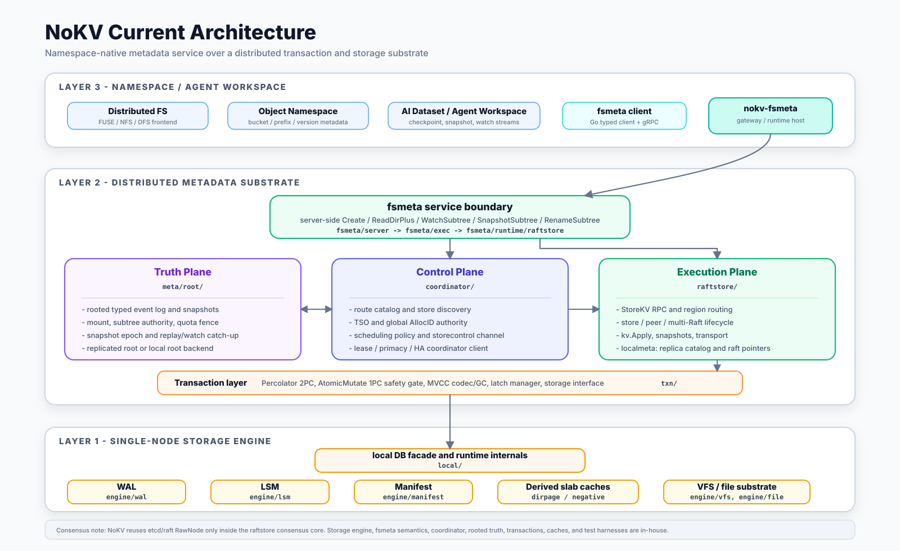

NoKV — Documentation
An open-source namespace metadata substrate for distributed filesystems, object storage, and AI dataset metadata.
Native fsmeta primitives · Own LSM · Own Raft · Own MVCC · Own control plane


NoKV is the open-source counterpart of the “stateless schema layer + transactional KV” pattern that powers Meta Tectonic (over ZippyDB), Google Colossus (over Bigtable), and DeepSeek 3FS (over FoundationDB). The headline service is fsmeta, a namespace metadata API for distributed filesystems / object storage / AI dataset metadata.
The interesting part isn’t the feature list. The interesting part is that layer separation is enforced in code: the fsmeta executor consumes a narrow TxnRunner; the default fsmeta/runtime/raftstore adapter owns raftstore wiring; meta/root keeps only lifecycle / authority truth; the storage engine never learns that a namespace exists.
This site is the technical docs hub. For the project landing page, headline benchmarks, and the
Why NoKV vs X?matrix, see the root README.
🧭 Three Audiences, One Substrate
| DFS frontend | Object storage namespace | AI dataset metadata | |
|---|---|---|---|
| Consumer shape | FUSE / NFS / SMB driver | S3-compatible HTTP gateway | training pipeline / scheduler |
| fsmeta primitives used | ReadDirPlus, WatchSubtree, SnapshotSubtree, RenameSubtree | ReadDirPlus for LIST, WatchSubtree for bucket events, SnapshotSubtree for versions, RenameSubtree for prefix moves | SnapshotSubtree for dataset versions, WatchSubtree for checkpoint notification, ReadDirPlus for batch metadata fetch |
| Comparable industrial pattern | Tectonic / Colossus / 3FS / HopsFS | Tectonic / Colossus over object layer | Mooncake / Quiver / 3FS dataset layer |
All three consume the same rooted truth in meta/root and the same native primitives in fsmeta — schema is not specialized to any single consumer.
Deep dive: fsmeta positioning · namespace authority events umbrella
📑 If You Read Only Three Pages
Start here:
- fsmeta.md — namespace metadata service (the headline). Primitives, lifecycle authority, deployment.
- architecture.md — three-layer architecture. Where each module lives, what each layer is allowed to know.
- control_and_execution_protocols.md — the contract between control plane (
coordinator/), execution plane (raftstore/), and rooted truth (meta/root/).
For the authority schema behind those primitives, read notes/2026-04-25-namespace-authority-events-umbrella.md.
🗺️ Read By Interest
🗂️ Namespace metadata service (fsmeta) — the primary product
| Topic | Doc |
|---|---|
| Complete reference (primitives + lifecycle + deployment) | fsmeta.md |
| Positioning v5 (DFS / OSS / AI three-audience) | notes/2026-04-24-fsmeta-positioning.md |
| Namespace authority events umbrella (Mount / SubtreeAuthority / SnapshotEpoch / QuotaFence schema) | notes/2026-04-25-namespace-authority-events-umbrella.md |
| Snapshot subtree MVCC epoch | notes/2026-04-25-snapshot-subtree-mvcc-epoch.md |
| Benchmark results | fsmeta.md · CI artifacts under benchmark/data/fsmeta/results/ |
🔬 Correctness models
| Topic | Location |
|---|---|
| TLA+ / TLC models for control-plane and metadata transition safety | spec/ · spec/README.md |
| Checked artifacts | spec/artifacts/ |
🏛️ Distributed runtime — the layer below fsmeta
| Topic | Doc |
|---|---|
Rooted truth kernel (meta/root) | rooted_truth.md |
| Coordinator (route / TSO / heartbeats / WatchRootEvents stream) | coordinator.md |
| Coordinator ↔ meta/root deployment separation | notes/2026-04-12-coordinator-meta-separation.md |
| Coordinator-driven store registry and rooted membership | coordinator.md · rooted_truth.md |
| Raftstore overview (store / peer / admin) | raftstore.md |
| Control-plane ↔ execution-plane contract | control_and_execution_protocols.md |
| Standalone → distributed migration | migration.md |
| Recovery model | recovery.md |
| Percolator MVCC 2PC + AssertionNotExist | percolator.md |
| Runtime call chains (sequence diagrams) | runtime.md |
🔧 Storage engine internals — the foundation
The single-node substrate that everything sits on. Independently usable as an embedded Go LSM + Raft library.
| Topic | Doc |
|---|---|
| High-level architecture | architecture.md |
| WAL discipline and replay | wal.md |
| MemTable + ART/SkipList (ART pinned for fsmeta) | memtable.md |
| Flush pipeline | flush.md |
| Leveled compaction + landing buffer | compaction.md · landing_buffer.md |
| Manifest semantics | manifest.md |
| Range filter | range_filter.md |
| Block / row cache | cache.md |
| VFS abstraction + FaultFS | vfs.md · file.md |
| Hot-key observer (Thermos) | thermos.md |
| Entry / error model | entry.md · errors.md |
🛠️ Operations and tooling
| Topic | Doc |
|---|---|
CLI reference (nokv — stats / manifest / regions / mount / quota / migrate) | cli.md |
nokv-fsmeta standalone gRPC gateway | fsmeta.md |
| Configuration (one JSON file shared by all binaries) | config.md |
| Cluster demo | demo.md |
| Scripts layout | scripts.md |
| Stats / expvar / metrics (4 namespaces: executor, watch, quota, mount) | stats.md |
| Testing strategy (failpoints, chaos, restart, migration) | testing.md |
📒 Notable design decision records
All notes under notes/ are dated decision records — they explain the why, not just the what.
- Compaction and landing buffer design
- Arena memory kernel + adaptive index (SkipList ↔ ART)
- MPSC write pipeline with adaptive coalescing
- VFS abstraction + deterministic reliability testing
- Coordinator ↔ execution layering
- SST-based snapshot install
- Delos-lite rooted-truth roadmap
- Range filter — from GRF, but not quite
- fsmeta positioning v5 (DFS + OSS + AI dataset)
- Namespace authority events umbrella
- Snapshot subtree MVCC epoch
🏗️ Architecture at a Glance

Layer 1 fsmeta ← namespace primitives (Create / ReadDirPlus / WatchSubtree / RenameSubtree / SnapshotSubtree / Link / Unlink with link-count GC)
│
Layer 2 meta/root ← rooted authority truth (Mount / SubtreeAuthority / SnapshotEpoch / QuotaFence)
coordinator ← routing, TSO, store discovery, root-event publish + WatchRootEvents stream
raftstore ← per-region Raft + apply observer
percolator ← 2PC + MVCC + AssertionNotExist + commit-ts retry
│
Layer 3 engine ← LSM + ART memtable + WAL + slab sidecar substrate
Four boundaries enforced in code:
- fsmeta-first API. Metadata operations expose filesystem/object-namespace shapes directly, instead of forcing users to assemble them from raw KV calls.
- Layer separation enforced. The fsmeta executor consumes a narrow
TxnRunner; the default runtime adapter owns raftstore wiring; lower layers do not import fsmeta. - Multi-gateway-safe. Quota fences are rooted truth; usage counters are data-plane keys updated in the same Percolator transaction as metadata mutations. Subtree handoff uses rooted events plus runtime repair.
- Root-event driven lifecycle.
coordinator.WatchRootEventspushes mount retire / quota fence / pending handoff changes after bootstrap; the monitor interval is reconnect backoff.
⚡ Quick Start
Bring up a full cluster + register a mount + use fsmeta
# 1. Build binaries
make build
# 2. Launch full cluster: meta-root + coordinator + 3 stores + fsmeta gateway
./scripts/dev/cluster.sh --config ./raft_config.example.json
# (Or: docker compose up -d — includes mount-init bootstrap)
# 3. Register a mount (rooted authority)
nokv mount register --coordinator-addr 127.0.0.1:2379 \
--mount default --root-inode 1 --schema-version 1
# 4. (Optional) Set a quota fence
nokv quota set --coordinator-addr 127.0.0.1:2379 \
--mount default --limit-bytes 10737418240 --limit-inodes 10000000
# 5. Use fsmeta from any gRPC client (Go typed client at fsmeta/client/)
# or embedded Go: see fsmeta/runtime/raftstore.Open in the root README
# 6. Inspect runtime state
curl http://127.0.0.1:9101/debug/vars | jq '.nokv_fsmeta_executor, .nokv_fsmeta_watch, .nokv_fsmeta_quota, .nokv_fsmeta_mount'
nokv stats --workdir ./artifacts/cluster/store-1
Full walkthrough: getting_started.md · CLI reference: cli.md
🔗 Jump Points
| fsmeta service | The headline product — namespace metadata API |
| Formal specs | TLA+ / TLC models for transition safety |
| CLI surface | nokv — stats, manifest, regions, mount, quota, migrate |
| Topology config | One JSON file shared by scripts, Docker, all CLI |
| Coordinator | Route / TSO / heartbeat / root-event subscribe |
| Rooted truth | meta/root typed event log |
| Percolator / MVCC | 2PC primitives in distributed mode |
| Runtime call chains | Function-level sequence diagrams |
| Testing | Failpoints, chaos, restart, migration |
| SUMMARY.md | Full mdbook table of contents |
Built from scratch — no external storage engine, no external Raft library, no external coordinator.
Getting Started
This guide gets you from zero to a running NoKV cluster (or an embedded DB) in a few minutes.
Prerequisites
- Go 1.26+
- Git
- (Optional) Docker + Docker Compose for containerized runs
Option A: Local Cluster (recommended for dev)
This launches the 333 separated layout: 3 replicated meta-root peers (Truth plane), 1 coordinator (Service plane), and the stores declared in the config (Execution plane).
./scripts/dev/cluster.sh --config ./raft_config.example.json
The launcher stays attached, streams meta-root/Coordinator/store logs to the terminal, and also writes them under ./artifacts/cluster/.
If you stop one store and want to restart it later, restart it against the same workdir:
./scripts/ops/serve-store.sh \
--config ./raft_config.example.json \
--store-id 1 \
--workdir ./artifacts/cluster/store-1
On restart, NoKV recovers hosted peers from local metadata in the store workdir.
The config file is only used to start stores and Coordinator. Runtime clients
discover store addresses from Coordinator heartbeats.
Do not rerun scripts/ops/bootstrap.sh or treat scripts/dev/cluster.sh as the
restart path for an already-running store.
Inspect stats
go run ./cmd/nokv stats --workdir ./artifacts/cluster/store-1
Option B: Docker Compose
This runs the full cluster (3 meta-root + 3 coordinator + 3 store + fsmeta gateway) in containers with the published GHCR image.
docker compose up -d
docker compose logs -f
To force-refresh :latest before startup, use:
make docker-up
make docker-up pulls the published image first. If the GHCR package is not
published or public yet, it falls back to a local Docker build.
For local Docker development builds from this checkout:
docker compose up -d --build
Local builds are tagged as the configured NoKV image. If you build locally and
then want to return to the published :latest, run the pull command above.
For reproducible runs, pin a published SHA tag:
NOKV_IMAGE_TAG=<commit-sha> docker compose up -d
Tear down:
docker compose down -v
Embedded Usage (single-process)
Use NoKV as a library when you do not need raftstore.
package main
import (
"fmt"
"log"
"github.com/feichai0017/NoKV/local"
)
func main() {
opt := local.NewDefaultOptions()
opt.WorkDir = "./workdir-demo"
db, err := local.Open(opt)
if err != nil {
log.Fatalf("open failed: %v", err)
}
defer db.Close()
key := []byte("hello")
if err := db.Set(key, []byte("world")); err != nil {
log.Fatalf("set failed: %v", err)
}
entry, err := db.Get(key)
if err != nil {
log.Fatalf("get failed: %v", err)
}
fmt.Printf("value=%s\n", entry.Value)
}
Note:
DB.Getreturns detached entries (do not callDecrRef).DB.GetInternalEntryreturns borrowed entries and callers must callDecrRefexactly once.DB.SetWithTTLacceptstime.Duration(relative TTL).DB.Set/DB.SetBatch/DB.SetWithTTLrejectnilvalues; useDB.DelorDB.DeleteRange(start,end)for deletes.DB.NewIteratorexposes user-facing entries, whileDB.NewInternalIteratorscans raw internal keys (cf+user_key+ts).
Benchmarks
Micro benchmarks:
go test -bench=. -run=^$ ./...
YCSB (default: NoKV + Badger + Pebble, workloads A-F):
make bench
Override defaults with env vars:
YCSB_RECORDS=1000000 YCSB_OPS=1000000 YCSB_CONC=8 make bench
Detailed benchmark methodology and latest result snapshots are maintained in:
benchmark/README.md.
Cleanup
If a local run crashes or you want a clean slate:
make clean
Troubleshooting
- WAL replay errors after crash: wipe the workdir and restart the cluster.
- Port conflicts: adjust addresses in
raft_config.example.json. - Slow startup: reduce
YCSB_RECORDSorYCSB_OPSwhen benchmarking locally.
NoKV Architecture Overview
NoKV delivers a hybrid storage engine that can operate as a standalone embedded KV store or as a distributed StoreKV-backed service. The distributed RPC surface follows a TinyKV/TiKV-style region + MVCC design, but the service identity and deployment model are NoKV’s own. This document captures the key building blocks, how they interact, and the execution flow from client to disk.
Read this page if you want the shortest route from “what is NoKV” to “which package owns which part of the system”.
This architecture is also meant to support NoKV as a maintainable and extensible distributed storage research platform. The point is not only to describe how the current system runs, but to make the package boundaries, lifecycle ownership, and experiment surfaces explicit enough that new storage-engine, metadata, control-plane, and distributed-runtime ideas can be added without rebuilding the repository around each new topic.
At a high level, the codebase is organized around four long-lived layers:
- Local DB facade and runtime internals – the
local.DBAPI plus local-only commit, iterator, stats, and background service wiring. - Single-node engine substrate –
engine/*owns WAL, LSM, manifest, slab sidecars, file, and VFS mechanics. - Distributed execution and control plane –
raftstore/*,meta/*, andcoordinator/*host replicated execution, rooted metadata, and cluster control logic. - Experiment and evidence layer –
benchmark/*, scripts, and docs keep evaluation and design claims attached to the implementation.
Reader Map
- If you care about the embedded engine, focus on sections 2 and 5.
- If you care about distributed runtime ownership, focus on sections 3, 4, and 5.
- If you care about migration and recovery, read this page together with
migration.mdandrecovery.md.
1. High-Level Layout
┌─────────────────────────┐ StoreKV gRPC ┌─────────────────────────┐
│ raftstore Service │◀──────────────▶ │ raftstore/client │
└───────────┬─────────────┘ │ (Get / Scan / Mutate) │
│ └─────────────────────────┘
│ ReadCommand / ProposeCommand
▼
┌─────────────────────────┐
│ store.Store / peer.Peer │ ← multi-Raft region lifecycle
│ ├ Local peer catalog │
│ ├ Router / region catalog │
│ └ transport (gRPC) │
└───────────┬─────────────┘
│ Apply via kv.Apply
▼
┌─────────────────────────┐
│ kv.Apply + percolator │
│ ├ Get / Scan │
│ ├ Prewrite / Commit │
│ └ Latch manager │
└───────────┬─────────────┘
│
▼
┌─────────────────────────┐
│ Embedded NoKV core │
│ ├ WAL Manager │
│ ├ MemTable / Flush │
│ ├ SST / Compaction │
│ └ Manifest / Stats │
└─────────────────────────┘
- Embedded mode uses
local.Opendirectly: WAL→MemTable→SST durability, inline metadata values, non-transactional APIs with internal version ordering, and rich stats. - Distributed mode layers
raftstoreon top: multi-Raft regions reuse the same WAL, keep store-local recovery metadata separate from storage manifest state, expose metrics, and serve StoreKV RPCs. - Control plane split:
raft_configprovides bootstrap topology; Coordinator provides runtime routing/TSO/control-plane state in cluster mode. - Clients obtain leader-aware routing, automatic NotLeader/EpochNotMatch retries, and two-phase commit helpers.
Same system, two shapes
flowchart LR
App["App / CLI / fsmeta client"]
App --> Embedded["Embedded NoKV DB"]
App --> RPC["StoreKV RPC / raftstore/client"]
subgraph "Standalone shape"
Embedded --> Core["WAL + LSM + MVCC"]
end
subgraph "Distributed shape"
RPC --> Server["server.Node"]
Server --> Store["store.Store"]
Store --> Peer["peer.Peer"]
Peer --> Core
Store --> Coordinator["Coordinator"]
end
Embedded -. migrate init / seed .-> Store
Detailed Runtime Paths
For function-level call chains with sequence diagrams (embedded write/read,
iterator scan, distributed read/write via Raft apply), see
docs/runtime.md.
2. Embedded Engine
Code entry points
If you want to inspect the embedded side first, start here:
opt := local.NewDefaultOptions()
opt.WorkDir = "./workdir"
db, err := local.Open(opt)
if err != nil {
panic(err)
}
defer db.Close()
_ = db.Set([]byte("hello"), []byte("world"))
entry, _ := db.Get([]byte("hello"))
fmt.Println(string(entry.Value))
Then read:
db.goengine/lsm/engine/wal/engine/slab/for derived sidecar caches
2.1 WAL & MemTable
wal.Managerappends[len|type|payload|crc]records (typed WAL), rotates segments, and replays logs on crash.MemTableaccumulates writes until full, then enters the flush queue; the concrete flush runtime runsEnqueue → Build → Install → Release, logs edits, and releases WAL segments.- Writes are handled by commit workers that append one WAL batch and then apply the same entries to the memtable.
2.3 Manifest
manifest.Managerstores only storage-engine metadata: SST metadata and WAL coverage carried by SST edits. Store-local raft replay pointers live inraftstore/localmeta.CURRENTprovides crash-safe pointer updates for storage-engine metadata. Region descriptors are no longer stored in the storage manifest.
2.4 LSM Compaction & Landing Buffer
lsm.compactiondrives compaction cycles;lsm.levelManagersupplies table metadata and executes the plan.- Planning is split inside
lsm:PlanFor*selects table IDs + key ranges, then LSM resolves IDs back to tables and runs the merge. lsm.Stateguards overlapping key ranges and tracks in-flight table IDs.- Landing shard selection is policy-driven in
lsm(PickShardOrder/PickShardByBacklog) while the landing buffer remains inlsm.
flowchart TD Manager["lsm.compaction"] --> LSM["lsm.levelManager"] LSM -->|TableMeta snapshot| Planner["PlanFor*"] Planner --> Plan["lsm.Plan (fid+range)"] Plan -->|resolvePlanLocked| Exec["LSM executor"] Exec --> State["lsm.State guard"] Exec --> Build["subcompact/build SST"] Build --> Manifest["manifest edits"] L0["L0 tables"] -->|moveToLanding| Landing["landing buffer shards"] Landing -->|LandingDrain: landing-only| Main["Main tables"] Landing -->|LandingKeep: landing-merge| Landing
2.5 Distributed Transaction Path
percolatorimplements Prewrite/Commit/ResolveLock/CheckTxnStatus;kv.Applydispatches raft commands to these helpers.- MVCC timestamps come from the distributed client/Coordinator TSO flow, not from an embedded standalone transaction API.
- Watermarks (
utils.WaterMark) are used in durability/visibility coordination; they have no background goroutine and advance via mutex + atomics.
2.6 Write Pipeline & Backpressure
- Writes enqueue into a commit queue inside
db.gowhere requests are coalesced into batches before a commit worker drains them. - The commit worker appends one inline-value WAL batch, applies the same entries to the active memtable, and then honors
SyncWriteswith a WAL fsync step. - Batch sizing adapts to backlog through
WriteBatchMaxCount,WriteBatchMaxSize, andWriteBatchWait. - Backpressure is enforced in two places: LSM throttling toggles
db.blockWriteswhen L0 backlog grows, and Thermos can reject hot keys viaWriteHotKeyLimit.
2.7 Ref-Count Lifecycle Contracts
NoKV uses fail-fast reference counting for internal pooled/owned objects. DecrRef underflow is treated as a lifecycle bug and panics.
| Object | Owned by | Borrowed by | Release rule |
|---|---|---|---|
kv.Entry (pooled) | internal write/read pipelines | codec iterator, memtable/lsm internal reads, request batches | Must call DecrRef exactly once per borrow. |
kv.Entry (detached public result) | caller | none | Returned by DB.Get; must not call DecrRef. |
kv.Entry (borrowed internal result) | caller | yes (DecrRef) | Returned by DB.GetInternalEntry; caller must release exactly once. |
request | commit queue/worker | waiter path (Wait) | IncrRef on enqueue; Wait does one DecrRef; zero returns request to pool and releases entries. |
table | level/main+landing lists, block cache | table iterators, prefetch workers | Removed tables are decremented once after manifest+in-memory swap; zero deletes SST. |
Skiplist / ART index | memtable | iterators | Iterator creation increments index ref; iterator Close decrements; double-close is idempotent. |
3. Replication Layer (raftstore)
Code entry points
If you want to inspect the distributed side first, start here:
srv, err := server.NewNode(server.Config{
Storage: server.Storage{
MVCC: db,
Raft: raftlog.NewDBLog(db),
Snapshot: snapshot.NewDBStore(db),
},
Store: store.Config{StoreID: 1},
Raft: myraft.Config{ElectionTick: 10, HeartbeatTick: 2, PreVote: true},
TransportAddr: "127.0.0.1:20160",
})
if err != nil {
panic(err)
}
defer srv.Close()
Then read:
raftstore/server/node.goraftstore/store/store.goraftstore/peer/peer.goraftstore/raftlog/wal_storage.goraftstore/localmeta/store.go
| Package | Responsibility |
|---|---|
store | Region catalog/runtime root, router, RegionMetrics, scheduler + command runtimes, helpers such as StartPeer / SplitRegion. |
peer | Wraps etcd/raft RawNode, handles Ready pipeline, snapshot resend queue, backlog instrumentation. |
raftlog | WALStorage/DiskStorage/MemoryStorage, reusing the DB’s WAL while keeping store-local raft replay metadata in sync. |
transport | gRPC transport for Raft Step messages, connection management, retries/blocks/TLS. Also acts as the host for StoreKV RPC. |
kv | StoreKV RPC handler plus kv.Apply bridging Raft commands to MVCC logic. |
server | Config + NewNode combine DB, Store, transport, and StoreKV service into a reusable node instance. |
3.1 Bootstrap Sequence
server.NewNodewires DB, store configuration (StoreID, hooks, scheduler), Raft config, and transport address. It registers StoreKV RPC on the shared gRPC server and setstransport.SetHandler(store.Step).- CLI (
nokv serve) or application enumerates the local peer catalog and callsStore.StartPeerfor every Region containing the local store:peer.Configincludes Raft params, transport,kv.NewEntryApplier, peer storage, and Region metadata.- Router registration, regionManager bookkeeping, optional
Peer.Bootstrapwith initial peer list, leader campaign.
- Peers from other stores can be configured through
transport.SetPeer(peerID, addr)(raft peer ID). In cluster mode, runtime routing/control-plane decisions come from Coordinator.
3.2 Command Paths
- ReadCommand (
Get/Scan): validate Region & leader, execute Raft ReadIndex (LinearizableRead) andWaitApplied, then runcommandApplier(i.e.kv.Applyin read mode) to fetch data from the DB. This yields leader-strong reads with an explicit Raft linearizability barrier. - ProposeCommand (write): encode the request, push through Router to the leader peer, replicate via Raft, and apply in
kv.Applywhich maps to MVCC operations.
3.3 Transport
- gRPC server handles Step RPCs and StoreKV RPCs on the same endpoint; peers are registered via
SetPeer. - Retry policies (
WithRetry) and TLS credentials are configurable. Tests cover partitions, blocked peers, and slow followers.
4. StoreKV Service
raftstore/kv/service.go exposes nokv.kv.v1.StoreKV RPCs:
| RPC | Execution | Result |
|---|---|---|
Get | store.ReadCommand → kv.Apply GET | pb.GetResponse / RegionError |
Scan | store.ReadCommand → kv.Apply SCAN | pb.ScanResponse / RegionError |
Prewrite | store.ProposeCommand → percolator.Prewrite | pb.PrewriteResponse |
Commit | store.ProposeCommand → percolator.Commit | pb.CommitResponse |
ResolveLock | percolator.ResolveLock | pb.ResolveLockResponse |
CheckTxnStatus | percolator.CheckTxnStatus | pb.CheckTxnStatusResponse |
nokv serve is the CLI entry point—open the DB, construct server.Node, register peers, start local Raft peers, and display a local peer catalog summary (Regions, key ranges, peers). scripts/dev/cluster.sh builds the CLI, seeds local peer catalogs, and launches the 333 separated layout (3 meta-root peers + 1 coordinator + all configured stores) on localhost, handling cleanup on Ctrl+C.
The RPC request/response shape is intentionally close to TinyKV/TiKV so the MVCC and region semantics remain familiar, while the service name exposed on the wire is the store-side nokv.kv.v1.StoreKV.
5. Client Workflow
raftstore/client offers a leader-aware client with retry logic and convenient helpers:
- Initialization: provide a Coordinator-backed
RegionResolver(GetRegionByKey) andStoreResolver(GetStore) so runtime routing and store discovery are Coordinator-driven. - Reads:
GetandScanpick the leader store for a key range, issue StoreKV RPCs, and retry on NotLeader/EpochNotMatch. - Writes:
Mutatebundles operations per region and drives Prewrite/Commit (primary first, secondaries after);PutandDeleteare convenience wrappers using the same 2PC path. - Timestamps: clients must supply
startVersion/commitVersion. For distributed demos, use Coordinator (nokv coordinator) to obtain globally increasing values before callingTwoPhaseCommit. - Bootstrap helpers:
scripts/dev/cluster.sh --config raft_config.example.jsonbuilds the binaries, seeds local peer catalogs vianokv-config catalog, launches the 3 meta-root peers + coordinator, and starts the stores declared in the config.
Example (two regions)
- Regions
[a,m)and[m,+∞), each led by a different store. Mutate(ctx, primary="alfa", mutations, startTs, commitTs, ttl)prewrites and commits across the relevant regions.Get/Scanretries automatically if the leader changes.- See
raftstore/server/node_test.gofor a full end-to-end example using realserver.Nodeinstances.
6. Failure Handling
- Manifest edits capture only storage metadata. Store-local region recovery state and raft replay pointers are loaded from
raftstore/localmeta. - WAL replay reconstructs memtables and Raft groups.
Stats.StartStatsresumes metrics sampling immediately after restart, making it easy to verify recovery correctness vianokv stats.
7. Observability & Tooling
StatsSnapshotpublishes flush/compaction/WAL/raft/region/hot/cache metrics.nokv statsand the expvar endpoint expose the same data.nokv regionsinspects the local peer catalog.nokv serveadvertises Region samples on startup (ID, key range, peers) for quick verification.- Inspect scheduler/control-plane state via Coordinator APIs/metrics.
- Scripts:
scripts/dev/cluster.sh– launch a multi-node NoKV cluster locally.RECOVERY_TRACE_METRICS=1 go test ./... -run 'TestRecovery(FailsOnMissingSST|FailsOnCorruptSST|ManifestRewriteCrash|SlowFollowerSnapshotBacklog|SnapshotExportRoundTrip|WALReplayRestoresData)' -count=1 -v– crash-recovery validation.CHAOS_TRACE_METRICS=1 go test -run 'TestGRPCTransport(HandlesPartition|MetricsWatchdog|MetricsBlockedPeers)' -count=1 -v ./raftstore/transport– inject network faults and observe transport metrics.
8. When to Use NoKV
- Embedded: call
local.Open, use the local non-transactional DB APIs. - Distributed: deploy
nokv servenodes, useraftstore/client(or any StoreKV gRPC client) to perform reads, scans, and 2PC writes. - Observability-first: inspection via CLI or expvar is built-in; Region, WAL, Flush, and Raft metrics are accessible without extra instrumentation.
See also docs/raftstore.md for deeper internals, docs/coordinator.md for control-plane details, and docs/testing.md for coverage details.
Runtime Call Chains
This page documents the current runtime paths. Metadata values are stored inline in WAL, memtable, and SST records.
1. Embedded Write Path
Set, SetBatch, SetWithTTL, Del, and DeleteRange share one path:
- The public API allocates a non-transactional version and builds internal-key
entries with
kv.NewInternalEntry. ApplyInternalEntriesvalidates each key viakv.SplitInternalKey.batchSetenqueues a commit request into the bounded MPSC commit queue.- The commit worker drains a request batch and calls
applyRequests. applyRequestswrites one WAL entry-batch record and applies the same batch to the active memtable.- If
SyncWritesis enabled, the request is handed to the sync pipeline or synchronously fsynced, depending onSyncPipeline.
sequenceDiagram
participant U as User API
participant DB as DB.ApplyInternalEntries
participant Q as "commitQueue (MPSC)"
participant W as commitWorker
participant L as LSM.SetBatchGroup
participant WAL as wal.AppendEntryBatch
participant M as memTable.applyBatch
U->>DB: Set / SetBatch / Del / DeleteRange
DB->>Q: enqueue commit request
Q->>W: drain request batch
W->>L: SetBatchGroup(groups)
L->>WAL: append one atomic WAL batch
L->>M: apply entries inline
M-->>L: index.Add(...)
L-->>W: success / failed group index
Invariant: WAL append failure means the memtable is not touched. WAL success followed by memtable apply failure is treated as unrecoverable and panics.
2. Embedded Read Path
DB.GetbuildsInternalKey(CFDefault, userKey, nonTxnMaxVersion).loadBorrowedEntryaskslsm.Getfor the newest visible internal record.PopulateInternalMetaaligns the decoded entry metadata with its internal key.DB.Getreturns a detached public entry with copied user key/value bytes.DB.GetInternalEntryreturns a borrowed internal entry; the caller must callDecrRef.
flowchart TD A["DB.Get(userKey)"] --> B["InternalKey(CFDefault, userKey, maxVersion)"] B --> C["lsm.Get(internalKey)"] C --> D["PopulateInternalMeta"] D --> E["cloneEntry -> detached user key/value"]
3. Iterators
DB.NewIterator builds a merged internal iterator from LSM iterators and
materializes public entries on demand:
- Convert user seek key to internal seek key.
- Split internal keys with
kv.SplitInternalKey. - Apply user-key bounds and delete/expiry filtering.
- Expose user-key entries.
DB.NewInternalIterator bypasses user-key rewrite and returns internal records
directly.
4. Distributed Write Path
Raftstore and Percolator ultimately reuse the same embedded write path:
raftstore/clientissuesMutate/TwoPhaseCommitby region.kv.Serviceroutes the command throughStore.ProposeCommand.- Raft replication commits the command.
- The apply path calls
percolator.Prewrite,Commit, rollback, or resolve. - Percolator builds MVCC entries with
kv.NewInternalEntry. DB.ApplyInternalEntriespersists them through the commit queue, WAL, and memtable.
sequenceDiagram
participant CL as raftstore/client
participant SVC as kv.Service
participant ST as Store.ProposeCommand
participant RF as Raft replicate/apply
participant TXN as percolator.txn
participant DB as DB.ApplyInternalEntries
CL->>SVC: Prewrite / Commit / ...
SVC->>ST: ProposeCommand
ST->>RF: replicate and apply
RF->>TXN: execute MVCC mutation
TXN->>DB: ApplyInternalEntries
DB-->>TXN: write result
TXN-->>SVC: response
SVC-->>CL: result
5. Entry Ownership
| Source | Returned entry type | Key form | Caller action |
|---|---|---|---|
DB.GetInternalEntry | Borrowed pooled | Internal key | Must call DecrRef() once |
DB.Get | Detached copy | User key | Must not call DecrRef() |
percolator.applyVersionedOps temporary entries | Borrowed pooled | Internal key | Always DecrRef() after ApplyInternalEntries |
LSM.Get / memtable reads | Borrowed pooled | Internal key | Upstream owner must release |
6. Key/Value Shape
| Stage | Entry.Key | Entry.Value | Notes |
|---|---|---|---|
| User write before queue | Internal key (CF + user key + ts) | Raw user bytes | Built by NewInternalEntry |
| WAL/memtable/SST stored form | Internal key | Encoded inline value payload | Used by replay, flush, compaction |
GetInternalEntry output | Internal key | Raw inline value bytes | Internal caller view |
Get / public iterator output | User key | Raw inline value bytes | External caller view |
Control-Plane and Execution-Plane Protocols
This note defines NoKV’s protocol line for:
- the
control plane - the
execution plane
and the next-stage evolution around them.
The current implementation status is intentionally minimal but no longer just a design sketch:
control-plane protocol v1is implemented and exposed through Coordinator RPCs plusmeta/rootstorage semanticsexecution-plane protocol v1is implemented as a store-local contract with a small admin diagnostics API surface
The point of this document is to keep those two lines coordinated instead of letting them drift into separate, implicit rule sets.
The control plane focuses on the contract between:
meta/rootcoordinator
The execution plane focuses on the contract between:
coordinatorraftstore- local durable state (
raftstore/localmeta, raft log, restart replay)
The purpose of this document is not to replace Raft or redesign the data plane. The purpose is to make NoKV’s existing cross-plane behavior explicit, testable, and evolvable.
The control plane is protocolized around four ideas:
FreshnessCatchUpTransitionDegradedMode
These four ideas already existed in partial form inside the implementation. The current work turns them into a stable vocabulary, explicit invariants, and a clear rollout line.
The execution plane is protocolized around four matching ideas:
AdmissionExecutionTargetPublishBoundaryRestartState
0. Current Status
The control plane now has a minimal implemented v1.
Implemented and exposed through pb/coordinator/coordinator.proto,
coordinator/server, coordinator/rootview, and tests:
- route-read
Freshness RootTokenroot_lagDegradedModeCatchUpStateTransitionIDPublishRootEventResponse.assessmentas a pre-persist lifecycle assessment
This means the protocol is no longer only a design direction. It is already the formal serving contract for key Coordinator APIs.
Not implemented in v1:
- richer transition phases such as
Published/Stalled - a fuller catch-up action surface exposed through API
- automatic recovery policy derived from protocol state
- broad client-side policy that consumes every protocol field
So the right description today is:
control-plane protocol v1 is implemented and in use, while richer scheduler/runtime policy is not implemented in v1.
The execution plane is in a different state.
Today, raftstore has a minimal implemented v1 inside raftstore/store.
Already implemented and exercised through store-local types, raftstore/admin,
runtime state, and tests:
- explicit
Admissionclasses and reasons on read / write / topology entry points - explicit topology
ExecutionOutcome - explicit topology
PublishState - explicit
RestartStatederived fromraftstore/localmeta+ raft replay pointers - terminal publish failures retained as visible retry state instead of silent drop
- admin diagnostics exposure through
pb/admin/admin.protoExecutionStatus
Not implemented as first-class execution protocol fields yet:
- request validation and routing
- context propagation
- detailed local leader admission diagnostics
- detailed per-attempt scheduler retry/backoff policy
- metrics for planned truth -> execute -> terminal truth latency
- richer degraded local scheduler states
The current landing is still mostly store-local and spread across:
raftstore/storeraftstore/peerraftstore/raftlograftstore/localmeta
So the right description there is:
execution-plane protocol v1 now exists as a minimal named runtime contract, with store-local state and admin-visible diagnostics, while broader metrics, policy, and richer executor states are not implemented in v1.
1. Intent
NoKV already has the right building blocks:
- rooted truth events
- checkpoint + committed tail
- watch-first tail subscription
- rebuildable
coordinator/catalog - explicit planned and terminal topology events
Before v1, these pieces mostly existed as implementation mechanics. The control plane now has a formal minimum contract, while several policy extensions remain intentionally outside v1:
- when a follower read is fresh enough
- when a follower must reload
- when retained tail catch-up is no longer enough
- what phase a topology change is in
- what “degraded” actually means to callers
The design goal is to keep turning these implicit behaviors into a formal protocol.
That protocol should be:
- small
- explicit
- observable
- testable
- compatible with the current architecture
2. Scope
This document covers both planes, but not at the same implementation depth.
For the control plane, it defines the behavior of:
- rooted truth consumption
- control-plane view freshness
- rooted catch-up progression
- topology transition lifecycle
- degraded operating modes
For the execution plane, it defines the protocol direction for:
- request admission
- transition execution
- terminal truth publication
- restart and local recovery alignment
- degraded local behavior around scheduler / queue / publish boundaries
It does not redefine:
- Raft replication
- Percolator / 2PC transaction semantics
- store-local recovery metadata
- storage-engine internals unrelated to distributed lifecycle
This document should be read as two linked contracts:
control plane = durable truth + materialized view + serving contract
execution plane = admitted work + local execution + publish/restart contract
3. Protocol Objects
The naming set should remain compact, stable, and precise.
3.1 RootToken
RootToken is the rooted truth position already incorporated by some materialized view.
It is the control-plane equivalent of:
- “what truth have I already consumed?”
It should be treated as:
- monotonic
- comparable
- portable across control-plane nodes
RootToken is not just an internal storage cursor.
It is the anchor for:
- freshness
- catch-up state
- read eligibility
- transition causality
3.2 Freshness
Freshness is the serving contract attached to a read.
It answers:
- how fresh did the caller ask for?
- how fresh was the returned answer?
3.3 CatchUpState
CatchUpState describes how far one Coordinator node has converged on rooted truth.
It answers:
- can this node serve route reads?
- can it satisfy bounded-freshness reads?
- must it reload?
- must it install bootstrap?
3.4 Transition
Transition is one rooted topology change that moves through a formal lifecycle.
Examples:
- peer addition
- peer removal
- region split
- region merge
- region tombstone
Transition is not just a single event.
It is a causally tracked change with:
- identity
- source truth position
- phase
- progress
3.5 DegradedMode
DegradedMode is the externally visible restriction level of the control plane.
It answers:
- what kind of reads may still be served?
- are rooted writes currently allowed?
- should clients retry elsewhere?
- is the node usable only as a stale view?
4. Naming Set
The protocol should use one stable vocabulary across:
- API
- code
- logs
- metrics
- tests
- docs
4.1 Read classes
Strong- requires leader-grade freshness
Bounded- allows follower service within explicit lag limits
BestEffort- allows stale cache service
These names are short and carry clear serving intent.
4.2 Catch-up actions
Reload- rebuild catalog from rooted storage
Advance- acknowledge rooted tail progress without a full rebuild
Bootstrap- install a fresh checkpoint because retained tail is insufficient
Reject- deny freshness-sensitive reads until convergence improves
4.3 Catch-up states
FreshLaggingBootstrapRequiredRecoveringUnavailable
4.4 Degraded modes
HealthyCoordinatorDegradedRootLaggingRootUnavailableViewOnly
ViewOnly is deliberately chosen over more vague names like ExecutionOnly.
This section only defines control-plane behavior, so the right question is:
can this node still expose a stale view?
5. Freshness Contract
The control plane should stop treating all successful reads as equivalent.
Every control-plane read should:
- declare the requested freshness class
- optionally declare a rooted lower bound
- receive an explicit served freshness result
5.1 Why this matters
Today, follower reads are effectively:
“good enough if the follower recently reloaded and is not too far behind”
That is practical, but not a protocol.
Without a formal freshness contract:
- clients cannot reason about route read quality
- tests cannot assert serving guarantees precisely
- degraded modes remain guesswork
- control-plane correctness is partly hidden in implementation details
5.2 Request fields
Control-plane read RPCs should be able to express:
freshnessStrong,Bounded, orBestEffort
required_root_token- optional lower bound on rooted truth already incorporated
max_root_lag- optional bound on acceptable rooted lag
Not every caller will need all three fields. But the protocol should have room for them.
5.3 Response fields
Control-plane read RPCs should return:
served_root_tokenserved_freshnessserved_by_leaderdegraded_mode
Optional future fields:
root_lagfreshness_reason
5.4 Serving rules
Strong
Should be served only when:
- the coordinator-side root backend can submit root writes
- and the serving catalog has incorporated at least the requested
RootToken
If this is not true, the server should reject rather than silently downgrade.
Bounded
May be served by a follower when:
- the node is not in
BootstrapRequired,Recovering, orUnavailable - and lag is within declared bounds
- and the served token satisfies
required_root_tokenif one was requested
If bounds cannot be satisfied, the server should reject rather than silently serve stale data.
BestEffort
May be served from the current materialized catalog so long as:
- the catalog exists
- the node is not fully unavailable
This class exists to make stale service explicit instead of accidental.
5.5 First rollout target
The first RPC that should adopt this contract is:
GetRegionByKey
That gives the system a clear, high-value place to prove the model before wider rollout.
6. Rooted Catch-Up Protocol
NoKV already has a good catch-up foundation:
- checkpoint
- committed tail
- watch-first subscription
- bootstrap install when retained tail is insufficient
The next step is to give that behavior a formal state machine.
6.1 Catch-up state definitions
Fresh
The node’s materialized catalog is sufficiently close to rooted truth to serve:
BoundedBestEffort
and, if leader, possibly Strong.
Lagging
The node is behind, but still within retained-tail recovery range.
This means:
- further rooted tail observation may repair the gap
- bootstrap install is not yet mandatory
- some bounded reads may need to be rejected
BootstrapRequired
The node is too far behind for retained tail replay.
This means:
- a plain reload from retained tail is not sufficient
- a new checkpoint/bootstrap install is required
- freshness-sensitive reads should be rejected
Recovering
The node is actively rebuilding its materialized control-plane view.
This means:
- catalog may be in transition
- only explicitly allowed stale reads may be served
Unavailable
The node cannot presently produce a valid control-plane view.
This means:
- no rooted freshness contract can be satisfied
- the server should fail reads except possibly future explicit diagnostics
6.2 Catch-up actions
Reload
Used when rooted truth advanced in a way that requires rebuilding the materialized catalog.
Advance
Used when rooted tail progressed, but the catalog does not need a full rebuild.
Bootstrap
Used when the node must install a checkpoint because retained tail can no longer bridge the gap.
Reject
Used when the node should refuse freshness-sensitive serving until it converges further.
6.3 Protocol outputs
The rooted subscription path should eventually expose a structured result like:
root_token_beforeroot_token_aftercatch_up_statecatch_up_actionreload_requiredbootstrap_required
6.4 Why protocolizing this matters
Without explicit catch-up semantics:
- tests can only assert indirect effects
- follower-read serving policy stays implicit
- degraded-mode logic gets duplicated
- future clients cannot reason about retries properly
This is one of the strongest places for NoKV to become distinctive.
7. Transition Lifecycle Protocol
NoKV already records rooted topology intent and rooted completion. That is the start of a lifecycle, not yet the full protocol.
The next stage is to make transition tracking first-class.
7.1 Transition identity
Every topology transition should have a stable TransitionID.
TransitionID should be:
- deterministic
- durable
- safe to log, surface, and test against
It should not require callers to infer identity from:
- region ID
- event kind
- timing
alone.
7.2 Transition source
Every transition should record:
- source rooted epoch or token
- target topology intent
- the event that created it
This makes causality explicit:
- what truth position created this transition?
- what later truth position superseded it?
7.3 Phase definitions
Planned
The rooted lifecycle assessment says the transition exists as an intended topology change, but the scheduler/control-plane runtime has not yet admitted it for forward progress.
This is the phase used by:
AssessRootEventPublishRootEventResponse.assessment
Admitted
The rooted transition is currently pending or open, and the scheduler/control-plane runtime has admitted it for execution progress.
This is the phase used by:
ListTransitions
It is intentionally runtime-facing. It does not appear in
PublishRootEventResponse.assessment, because that response reports a
pre-persist lifecycle assessment rather than post-admission runtime state.
Completed
The rooted lifecycle says the requested transition target is already satisfied. For a plan event, this usually means the requested topology is already present.
Cancelled
The rooted lifecycle says the requested transition target was cancelled.
Conflicted
The rooted lifecycle says a different pending transition already owns progress for the same target.
Superseded
The rooted lifecycle says a newer rooted topology already superseded this transition target.
Aborted
The rooted lifecycle says an apply or terminal event does not match the current pending rooted target.
7.4 Why lifecycle matters
A formal lifecycle enables:
- clear scheduling decisions
- proper retry/backoff
- stuck transition recovery
- scheduler/control-plane runtime clarity
- precise testing around publish boundaries
Without it, the system keeps relying on partial signals scattered across:
- rooted events
- in-memory views
- runtime heuristics
8. Degraded Semantics
NoKV already has some degraded behavior:
- followers serve stale route views
- route cache may survive Coordinator outages
- scheduler paths may degrade
These behaviors should become explicit protocol states.
8.1 Mode definitions
Healthy
Normal serving mode.
Rooted truth, catalog freshness, and serving guarantees are all within policy.
CoordinatorDegraded
The Coordinator process is alive, but not all control-plane functions can be performed normally.
Examples:
- partial RPC surface availability
- write restrictions while leadership is unsettled
RootLagging
Rooted truth exists, but this node’s materialized catalog is behind allowed freshness bounds.
This is not full unavailability. It is a serving restriction mode.
RootUnavailable
The rooted backend cannot currently provide enough truth to support valid control-plane service.
In this mode:
- truth-sensitive reads fail
- rooted writes fail
- diagnostics may still be exposed
ViewOnly
The node may still expose a stale materialized catalog, but cannot satisfy freshness-sensitive contracts.
This mode is useful because it makes “stale but useful” explicit.
8.2 Why this should be formal
Without explicit degraded modes, callers only see:
- transport failure
not leaderroute unavailable
Those errors do not express the actual system state.
A real degraded protocol lets callers answer:
- retry elsewhere?
- retry later?
- accept stale?
- fail fast?
8.3 Relationship to freshness
DegradedMode and Freshness are related but not identical.
Freshnessis the contract requested and served for one readDegradedModeis the broader operating condition of the serving node
A node may be:
Healthyand still reject aStrongread because it is not leaderRootLaggingand still serveBestEffortViewOnlyand still serve diagnostics
That distinction should remain sharp.
8.4 Current coordinator contract
The current implementation already enforces a concrete degraded-mode contract at the Coordinator RPC boundary.
Metadata reads (GetRegionByKey)
Freshness=BEST_EFFORT- serves from the local materialized catalog even when
meta/rootis currently unavailable - returns
degraded_mode=ROOT_UNAVAILABLEwhen the rooted snapshot cannot be reloaded - returns
degraded_mode=ROOT_LAGGINGwhen the local catalog trails rooted truth
- serves from the local materialized catalog even when
Freshness=BOUNDED- rejects when
meta/rootis unavailable - rejects when
root_lag > max_root_lag - rejects when catch-up is still
BOOTSTRAP_REQUIRED
- rejects when
Freshness=STRONG- rejects on followers
- rejects whenever
root_lag > 0 - rejects when
meta/rootis unavailable
In all cases, successful replies carry the current answerability witness:
served_root_tokencurrent_root_tokenroot_lagcatch_up_statedegraded_modeserving_classsync_health
Duty-gated writes (AllocID, TSO, scheduler decisions)
These do not have a degraded fallback.
- the local coordinator must first campaign / renew the rooted grant
- the rooted grant must still be active for the local holder
- the rooted era must not already be retired
- the grant duty list and bound must admit the requested action
If any of those fail, the request is rejected instead of falling back to stale local state. This is the current boundary between:
- read-path degradation
- write-path fail-stop admission
Lifecycle mutations (Seal, RetireExpired, Inherit)
Lifecycle mutations are stricter than hot-path duty admission:
- they always re-read rooted state from storage before mutating
- they reject any stale-holder / expired-grant / retired-era view
- they treat finality as a rooted safety condition, not a best-effort hint
That is why seal / expire-retire / inherit do not use the cached mirror admission path.
8.5 Operational diagnostics
DiagnosticsSnapshot() now exports both:
- the current degraded serving state (
root,grant,audit,authority) - cumulative Eunomia counters under
eunomia_metrics
eunomia_metrics is grouped into:
grant_era_transitions_totalgate_rejections_totalguarantee_violations_total
The guarantee_violations_total buckets map directly to the four Eunomia
guarantees:
primacyinheritancesilencefinality
9. API Direction
The most valuable first implementation step is at the Coordinator RPC boundary.
9.1 Read-side API direction
Read APIs should conceptually grow:
freshnessrequired_root_tokenmax_root_lag
Read responses should conceptually expose:
served_root_tokenserved_freshnessdegraded_modeserved_by_leader
9.2 Write-side API direction
Root-write RPCs should remain gated by root write access.
Write requests should continue to require:
CanSubmitRootWrites()at the coordinator-side root backend- expected cluster epoch where applicable
Write responses should eventually expose:
accepted_root_tokentransition_idwhere topology change is involved
This makes a write result more precise than:
accepted = true
9.3 Diagnostics API direction
The control plane will likely also benefit from an explicit diagnostics surface.
Conceptually, that should expose:
- current rooted token
- catalog rooted token
- catch-up state
- degraded mode
- leader identity knowledge
- lag estimate
This may become:
- a dedicated diagnostics RPC
- metrics
- CLI output
or all three.
10. Storage and Catalog Direction
To support the protocol above, the Coordinator catalog should become rooted-token aware.
At minimum, the materialized control-plane view should track:
catalog_root_tokencatalog_updated_atcatch_up_statedegraded_mode
Optional future metadata:
root_laglast_reload_reasonleader_observed
10.1 Ownership rule
This design does not change truth ownership.
The ownership line remains:
meta/rootowns durable truthcoordinator/catalogowns materialized serving state
The catalog should become more informative, not more authoritative.
10.2 Materialization rule
The catalog must remain:
- rebuildable
- discardable
- follower-local
It should never become a second durable truth source.
That is a core invariant.
11. Invariants
This protocol should preserve the following invariants.
11.1 Truth ownership invariant
Only meta/root owns durable control-plane truth.
11.2 Materialization invariant
coordinator/catalog is always derived state, never authority.
11.3 Monotonic token invariant
The materialized rooted token of one node must never move backward.
11.4 No silent downgrade invariant
If a caller requests Strong or bounded freshness and the node cannot satisfy it,
the server should reject rather than silently serve BestEffort.
11.5 Explicit stale service invariant
If stale service is allowed, the response should say so explicitly.
11.6 Transition identity invariant
Every control-plane transition must be referencable as a stable object, not just inferred from event timing.
12. Rollout State
The rollout stays incremental, but the first protocol line is already in use.
Phase 1: Freshness
Status: implemented
Delivered outcomes:
GetRegionByKeycan express requested freshness- route responses disclose served freshness and rooted token
- follower-read behavior is no longer implicit
Phase 2: Catch-Up
Status: minimal v1 implemented
Delivered outcomes:
CatchUpState- formal bootstrap-required boundary
- rooted lag awareness in serving decisions
Still open:
- a wider public
CatchUpActionsurface - more explicit recovery diagnostics
Phase 3: Transition
Status: minimal v1 implemented
Delivered outcomes:
- durable
TransitionID - explicit phase semantics across:
ListTransitionsAssessRootEventPublishRootEvent
- publish-time pre-persist lifecycle assessment
Still open:
- richer runtime phases
- stuck / timeout diagnosis
Phase 4: DegradedMode
Status: minimal v1 implemented
Delivered outcomes:
- explicit degraded semantics in route responses
- route-serving rejection under rooted lag / rooted unavailability
Still open:
- broader surfacing through metrics and diagnostics
- tighter client retry policy based on degraded state
13. What Not To Do
The following are intentionally out of scope for this line of work:
- inventing a new general-purpose consensus algorithm
- replacing Raft in the mainline system
- redesigning 2PC before control-plane semantics are explicit
- collapsing rooted truth and catalog into one mixed layer
- treating stale follower service as an undocumented optimization
NoKV’s control-plane innovation should come from stronger semantics and clearer ownership, not from unnecessary reinvention of already mature primitives.
14. Current Practical Naming Guidance
If this protocol starts landing in code, the implementation should prefer:
RootTokenFreshnessCatchUpStateCatchUpActionTransitionIDDegradedMode
For execution-plane work, prefer:
AdmissionExecutionTargetExecutionOutcomePublishStateRestartState
Avoid reintroducing weaker names like:
state kindstale modesync statusreload reasonas the primary protocol object
Those may still exist as helper fields, but the public model should stay anchored to the smaller protocol vocabulary above.
15. Execution-Plane Protocol
The execution plane is the contract between:
raftstore- local leader peer runtime
- local durable recovery state
- the control-plane publish boundary
Its job is different from the control plane.
The control plane answers:
- what topology truth exists?
- how fresh is the served view?
- what transition lifecycle is visible globally?
The execution plane answers:
- may this request enter local execution now?
- what target is being executed?
- how far has local execution progressed?
- has terminal truth been published yet?
- what state is safe to recover after restart?
15.1 Why this matters
Without an explicit execution-plane protocol, the system keeps important distributed safety semantics hidden in code paths such as:
- request validation and cancellation
- queue admission and local degradation
- planned truth publication before local execution
- terminal truth publication after local apply
- restart reconciliation between
localmeta, raft durable state, and Coordinator
Those are not low-level implementation details. They are correctness boundaries.
15.2 Protocol objects
The execution plane should be formalized around the following objects.
Admission
Admission is the local decision about whether one request may enter execution.
It should answer:
- is the local peer leader?
- is the region epoch valid?
- is the peer hosted and runnable?
- is the request cancelled or timed out already?
- is the queue or scheduler allowed to accept more work?
The important design rule is that admission must be explicit, not an accidental mix of local checks and fallback retries.
ExecutionTarget
ExecutionTarget is the concrete unit of work the execution plane is trying to
carry out.
Examples:
- one read command
- one raft write proposal
- one peer change target
- one split target
- one merge target
For topology changes, ExecutionTarget must remain causally tied to the rooted
transition object created by the control plane.
ExecutionOutcome
ExecutionOutcome is the local state reached by an admitted target.
Minimal useful states are:
RejectedQueuedProposedCommittedAppliedFailed
This is the minimum needed to stop conflating “accepted by API”, “replicated by raft”, and “applied to local state”.
PublishState
PublishState tracks the boundary between local apply and control-plane truth
publication.
This is a first-class boundary in NoKV’s architecture:
- planned truth is published before execution
- terminal truth is published after local apply
The protocol must therefore distinguish:
NotRequiredPendingPublishedPublishFailed
This is the exact boundary where split/merge/peer-change correctness otherwise turns into invisible best-effort behavior.
RestartState
RestartState describes whether one store can safely resume from local durable
state.
It should answer:
- is local peer metadata self-consistent?
- is the local raft replay pointer usable?
- does the store need Coordinator catch-up only, or local rebuild first?
- is startup safe, degraded, or fatal?
This object exists to stop restart behavior from being an implicit composition of:
raftstore/localmeta- raft log replay
- ad hoc bootstrap logic
15.3 Request classes and admission
Execution-plane v1 should start by distinguishing three request classes:
Read- local leader read admission
- read-index / wait-applied preconditions
- cancellation and deadline propagation
Write- raft proposal admission
- proposal tracking through commit/apply
- retryable local rejection vs fatal local rejection
Topology- peer change
- split
- merge
- explicit coupling to planned and terminal rooted truth
These classes do not need separate RPC protocols, but they do need stable admission outcomes. At minimum, those outcomes should distinguish:
NotLeaderEpochMismatchNotHostedCanceledTimedOutQueueSaturatedSchedulerDegradedAccepted
Without this line, request behavior remains split across store-local branches instead of becoming one coherent executor contract.
15.4 Publish lifecycle
Execution-plane v1 should also make the publish boundary explicit for topology work.
The minimal lifecycle is:
PlannedPublishedLocallyExecutingAppliedTerminalPublishPendingTerminalPublishedTerminalPublishFailed
The important rule is that Applied and TerminalPublished are different
states. Local execution success does not mean global lifecycle completion until
terminal truth is durably published.
This is the boundary that should align:
raftstore/store/transition_builder.goraftstore/store/transition_executor.goraftstore/store/transition_outcome.goraftstore/store/scheduler_runtime.go
15.5 First landing points
Execution-plane protocol v1 landed first in the places that already carried the boundary implicitly:
raftstore/store/command_ops.go- request admission and context semantics
raftstore/store/command_pipeline.go- request lifecycle states visible to callers
raftstore/store/scheduler_runtime.go- queue overflow / degraded local behavior
raftstore/store/transition_builder.go- execution target construction from rooted truth
raftstore/store/transition_executor.go- local execution and apply boundary
raftstore/store/transition_outcome.go- terminal truth publication result
raftstore/localmeta- restart state and local recovery truth
These files still do not expose a new public API. But they now share one explicit local protocol vocabulary instead of inventing those semantics independently.
15.6 Execution invariants
The execution-plane protocol should preserve the following invariants.
Admission invariant
Every externally visible rejection should map to a stable admission reason, not only a transport error or generic retry exhaustion.
No skipped publish boundary invariant
If local apply completed but terminal truth publication did not, the system must surface that state explicitly. It must not be silently treated as fully complete.
Restart truth boundary invariant
Restart must derive hosted peer truth from local durable state, not from bootstrap config. Static config may resolve addresses, but must not overwrite runtime truth.
No hidden drop invariant
Queue overflow, scheduler degradation, and publish retry loss must be explicit protocol states or metrics-backed outcomes, not silent local behavior.
15.7 Minimal rollout target
Execution-plane protocol v1 started small.
The minimum useful delivered line is now:
- request admission
- topology execution outcome
- publish boundary state
- restart state
That is enough to formalize the most dangerous boundaries without trying to protocolize every internal raft detail.
16. Priority and Rollout Order
The next protocol work should avoid widening either protocol until the current v1 contracts stay small, observable, and well tested.
16.1 What is implemented now
The control plane has a minimal, externally visible contract:
- freshness classes
- rooted token / lag
- degraded serving state
- transition identity
The execution plane now has a minimal internal contract:
- admission class / reason
- topology outcome
- publish state
- restart state
- admin-visible
ExecutionStatus
That is enough for v1. It gives tests and operators names for the important
boundaries without turning raftstore into a policy engine.
16.2 What should not happen next
The wrong next step would be to keep enriching lifecycle phases and diagnostic fields before the existing v1 state proves stable under recovery and integration tests.
That would create a vocabulary mismatch:
- control plane claims richer transition semantics than the executor can act on
- execution plane reports more states than the coordinator can use safely
16.3 Recommended order
- Keep control-plane v1 and execution-plane v1 narrow.
- Add tests around the existing publish/restart/admission states before adding new states.
- Only then tighten control-plane v1 toward richer scheduler/runtime phases.
In short:
stabilize both v1 contracts first, then deepen scheduler/runtime semantics.
WAL Subsystem
NoKV’s write-ahead log mirrors RocksDB’s durability model and is implemented as a compact typed log. WAL appends happen alongside memtable writes through the DB commit pipeline; metadata values are stored inline, so replay does not depend on a separate blob layer.
1. File Layout & Naming
- Location:
${Options.WorkDir}/wal/. - Naming pattern:
%05d.wal(e.g.00001.wal). - Rotation threshold: configurable via
wal.Config.SegmentSize(defaults to 64 MiB, minimum 64 KiB). - Verification:
wal.VerifyDirensures the directory exists prior toDB.Open.
On open, wal.Manager scans the directory, sorts segment IDs, and resumes the highest ID—exactly how RocksDB re-opens its MANIFEST and WAL sequence files.
2. Record Format
uint32 length (big-endian, includes type + payload)
uint8 type
[]byte payload
uint32 checksum (CRC32 Castagnoli over type + payload)
- Checksums use
kv.CastagnoliCrcTable, the same polynomial used by RocksDB (Castagnoli). Record encoding/decoding lives inengine/wal/record.go. - The type byte allows mixing LSM mutations with raft log/state/snapshot records in the same WAL segment.
- Appends are buffered by
bufio.Writerso batches become single system calls. - Replay stops cleanly at truncated tails; tests simulate torn writes by truncating the final bytes and verifying replay remains idempotent (
engine/wal/manager_test.go::TestManagerReplayHandlesTruncate).
3. Public API (Go)
mgr, _ := wal.Open(wal.Config{Dir: path})
info, _ := mgr.AppendEntry(wal.DurabilityFlushed, entry)
batchInfo, _ := mgr.AppendEntryBatch(wal.DurabilityFlushed, entries)
typedInfos, _ := mgr.AppendRecords(wal.DurabilityFsyncBatched, wal.Record{
Type: wal.RecordTypeRaftEntry,
Payload: raftPayload,
})
_ = mgr.Sync()
_ = mgr.Rotate()
_ = mgr.Replay(func(info wal.EntryInfo, payload []byte) error {
// reapply to memtable
return nil
})
Key behaviours:
AppendEntry/AppendEntryBatch/AppendRecordsautomatically callensureCapacityto decide when to rotate; they returnEntryInfo{SegmentID, Offset, Length}so upper layers can keep storage WAL checkpoints and store-local raft replay pointers.- Every append must declare a
DurabilityPolicy:DurabilityBuffered(writer buffer only),DurabilityFlushed(OS page cache),DurabilityFsync(fsync now), orDurabilityFsyncBatched(fsync contract reserved for the group-commit pipeline). Syncflushes the active file (used forOptions.SyncWrites).Rotateforces a new segment (used after flush/compaction checkpoints similar to RocksDB’sLogFileManager::SwitchLog).Replayiterates segments in numeric order, forwarding each payload to the callback. Errors abort replay so recovery can surface corruption early.- Metrics (
wal.Manager.Metrics) reveal the active segment ID, total segments, and number of removed segments—these feed directly intoStatsSnapshotandnokv statsoutput. RegisterRetentionlets LSM and raft participants publish the oldest WAL segment they still need.RemoveSegmentrejects retained segments withErrSegmentRetained.
NoKV stores metadata values inline in the LSM. The WAL is only the durability and replay log; it is not paired with a separate blob layer.
4. Integration Points
| Call Site | Purpose |
|---|---|
lsm.memTable.setBatch | Encodes each entry (kv.EncodeEntry) and appends to WAL before inserting into the active memtable index (ART by default, skiplist when explicitly selected). |
DB.commitWorker | Commit worker applies batched writes via writeToLSM, which calls lsm.SetBatch and appends one WAL entry-batch record per request batch. |
DB.Set / DB.SetBatch / DB.SetWithTTL / DB.Del / DB.DeleteRange / DB.ApplyInternalEntries | User/internal writes all flow through the same commit queue and eventually reach lsm.SetBatch + WAL append. |
engine/lsm/level_manager.go::flush | Persists WAL checkpoint via manifest.LogEdits(EditAddFile, EditLogPointer) during flush install. |
engine/lsm/level_manager.go::flush + engine/lsm/levelManager.canRemoveWalSegment | Removes obsolete WAL segments after storage checkpoint and raftstore/localmeta replay constraints are satisfied. |
db.runRecoveryChecks | Ensures WAL directory invariants before manifest replay, similar to Badger’s directory bootstrap. |
5. Metrics & Observability
Stats.collect reads the manager metrics and exposes them as:
NoKV.Local.Stats.wal.active_segmentNoKV.Local.Stats.wal.segment_countNoKV.Local.Stats.wal.segments_removed
The CLI command nokv stats --workdir <dir> prints these alongside backlog, making WAL health visible without manual inspection. In high-throughput scenarios the active segment ID mirrors RocksDB’s LOG number growth.
6. WAL Watchdog (Auto GC)
The WAL watchdog runs inside the DB process to keep WAL backlog in check and surface warnings when raft-typed records dominate the log. It:
- Samples WAL metrics + per-segment metrics and combines them with
raftstore/localmetaraft pointer snapshots to compute removable segments. - Filters those candidates through all registered WAL retention participants before deleting any segment.
- Removes up to
WALAutoGCMaxBatchsegments when at leastWALAutoGCMinRemovableare eligible. - Exposes counters (
wal.auto_gc_runs/removed/last_unix) and warning state (wal.typed_record_ratio/warning/reason) throughStatsSnapshot.WAL.
Relevant options (see options.go for defaults):
EnableWALWatchdogWALAutoGCIntervalWALAutoGCMinRemovableWALAutoGCMaxBatchWALTypedRecordWarnRatioWALTypedRecordWarnSegments
For hard admission control, wal.Config.MaxSegments rejects segment growth with
ErrWALBackpressure once the WAL reaches the configured segment cap.
7. Recovery Walkthrough
wal.Openreopens the highest segment, leaving the file pointer at the end (switchSegmentLocked).manifest.Managersupplies the WAL checkpoint (segment + offset) while building the version. Replay skips entries up to this checkpoint, ensuring we only reapply writes not yet materialised in SSTables.wal.Manager.Replay(invoked by the LSM recovery path) rebuilds memtables from entries newer than the manifest checkpoint. Values are inline, so recovery does not need a separate blob pass.- If the final record is partially written, the CRC mismatch stops replay and the segment is truncated during recovery tests, mimicking RocksDB’s tolerant behaviour.
8. Operational Tips
- Configure
Options.SyncWrites=truefor DB-level synchronous durability. Raft log/state/snapshot appends use the WALDurabilityFsyncBatchedcontract directly. - After large flushes, forcing
Rotatekeeps WAL files short, reducing replay time. - Archived WAL segments can be copied alongside manifest files for hot-backup strategies—since the manifest contains the WAL log number, snapshots behave like RocksDB’s
Checkpoints.
9. Truncation Metadata
raftstore/raftlog/wal_storagekeeps a per-group index of[firstIndex,lastIndex]spans for each WAL record so it can map raft log indices back to the segment that stored them.- When a log is truncated (either via snapshot or future compaction hooks), the store-local metadata in
raftstore/localmetais updated with the index/term, segment ID (RaftLogPointer.SegmentIndex), and byte offset (RaftLogPointer.TruncatedOffset) that delimit the remaining WAL data. engine/lsm/levelManager.canRemoveWalSegmentblocks garbage collection whenever any raft group still references a segment through that store-local truncation metadata, preventing slow followers from losing required WAL history while letting aggressively compacted groups release older segments earlier.
For broader context, read the architecture overview and flush pipeline documents.
Memtable Design & Lifecycle
NoKV’s write path mirrors RocksDB: every write lands in the WAL and an in-memory memtable backed by a selectable in-memory index (skiplist or ART). The implementation lives in engine/lsm/memtable.go and ties directly into the concrete flush queue in engine/lsm/flush_runtime.go.
1. Structure
type memTable struct {
lsm *LSM
segmentID uint32 // WAL segment backing this memtable
index memIndex
maxVersion uint64
walSize int64
}
The memtable index is an interface that can be backed by either a skiplist or ART:
type memIndex interface {
Add(*kv.Entry)
Search([]byte) ([]byte, kv.ValueStruct)
NewIterator(*utils.Options) utils.Iterator
MemSize() int64
IncrRef()
DecrRef()
}
- Memtable engine –
Options.MemTableEngineselectsart(default) orskiplistvianewMemIndex. ART is not a generic trie: it is an internal-key-only memtable index. It uses a reversible mem-comparable route key so trie ordering matches the LSM internal-key comparator;skiplistremains available as the simpler baseline alternative. - Arena sizing – both
utils.NewSkiplistandutils.NewARTusearenaSizeForto derive arena capacity fromOptions.MemTableSize. - WAL coupling – every
Setuseskv.EncodeEntryto materialise the payload to the active WAL segment before inserting into the chosen index.walSizetracks how much of the segment is consumed so flush can release it later. - Segment ID –
LSM.NewMemtableatomically incrementslevels.maxFID, switches the WAL to a new segment (wal.Manager.SwitchSegment), and tags the memtable with that FID. This matches RocksDB’slogfile_numberfield. - ART specifics – ART stores prefix-compressed inner nodes (Node4/16/48/256). Each leaf keeps both the private route key used by the trie and the original canonical internal key returned to callers. The concurrency model is pure copy-on-write payload/node cloning with CAS installs: published payloads are immutable, reads stay lock-free, and writers only publish fully-built cloned payloads.
2. Lifecycle
sequenceDiagram
participant WAL
participant MT as MemTable
participant Flush
participant Manifest
WAL->>MT: Append+Set(entry)
MT->>Flush: freeze (walSize + incomingEstimate > limit)
Flush->>Manifest: LogPointer + AddFile
Manifest-->>Flush: ack
Flush->>WAL: Release segments ≤ segmentID
- Active → Immutable – when
mt.walSize + estimateexceedsOptions.MemTableSize, the memtable is rotated and pushed onto the flush queue. The new active memtable triggers another WAL segment switch. - Flush – the flush queue drains immutable memtables, builds SSTables, logs manifest edits, and releases the WAL segment ID recorded in
memTable.segmentIDonce the SST is durably installed. - Recovery –
LSM.recoveryscans WAL files, reopens memtables per segment (most recent becomes active), and deletes segments ≤ the manifest’s log pointer. Entries are replayed viawal.Manager.ReplaySegmentinto fresh indexes and the active in-memory state is rebuilt.
Badger follows the same pattern, while RocksDB often uses skiplist-backed arenas with reference counting—NoKV reuses Badger’s arena allocator for simplicity.
3. Read Semantics
memTable.Getlooks up the chosen index and returns a borrowed, ref-counted*kv.Entryfrom the internal pool. The index search returns the matched internal key plus value struct, so memtable hit entries carry the concrete version key instead of the query sentinel key. Internal callers must release borrowed entries withDecrRefwhen done.MemTable.IncrRef/DecrRefdelegate to the index, allowing iterators to hold references while the flush manager processes immutable tables—mirroring RocksDB’sMemTable::Ref/Unreflifecycle.- Values are stored inline in the entry payload.
DB.Getreturns detached entries; callers must not callDecrRefon them.DB.GetInternalEntryreturns borrowed entries; callers must callDecrRefexactly once.
4. Integration with Other Subsystems
| Subsystem | Interaction |
|---|---|
| Distributed 2PC | kv.Apply + percolator write committed MVCC versions through the same WAL/memtable pipeline in distributed mode. |
| Manifest | Flush completion logs SST metadata plus LogSeg coverage so restart can skip WAL segments already persisted into SSTs. |
| Stats | Stats.Snapshot pulls FlushPending/Active/Queue counters via lsm.FlushMetrics, exposing how many immutables are waiting. |
5. Comparison
| Aspect | RocksDB | BadgerDB | NoKV |
|---|---|---|---|
| Data structure | Skiplist + arena | Skiplist + arena | Skiplist or ART + arena (art default) |
| WAL linkage | logfile_number per memtable | Segment ID stored in log entries | segmentID on memTable, logged via manifest coverage |
| Recovery | Memtable replays from WAL, referencing MANIFEST | Replays WAL segments | Replays WAL segments using manifest coverage + WAL retention |
| Flush trigger | Size/entries/time | Size-based | WAL-size budget (walSize) with explicit queue metrics |
6. Operational Notes
- Tuning
Options.MemTableSizeaffects WAL segment count and flush latency. Larger memtables reduce flush churn but increase crash recovery time. - ART currently uses noticeably more memindex arena memory than skiplist because it stores both route keys and original internal keys in leaves; in local measurements the ART memindex is roughly
2xthe skiplist memindex footprint for the same key/value set. - Monitor
NoKV.Local.Stats.flush.*fields to catch stalled immutables—an ever-growing queue often indicates slow SST builds or manifest contention. - Because memtables carry WAL segment IDs, deleting WAL files manually can lead to recovery failures; always rely on the engine’s manifest-driven cleanup.
See docs/flush.md for the end-to-end flush scheduler and [docs/architecture.md](architecture.md#3-end-to-end-write-flow) for where memtables sit in the write pipeline.
MemTable Flush Pipeline
NoKV’s flush path converts immutable memtables into L0 SST files, then advances the manifest WAL checkpoint and reclaims obsolete WAL segments. The queue and timing bookkeeping live directly in engine/lsm/flush_runtime.go; SST persistence and manifest install are in engine/lsm/table_builder.go and engine/lsm/level_manager.go.
1. Responsibilities
- Persistence: materialize immutable memtables into SST files.
- Ordering: publish SST metadata to manifest only after the SST is durably installed (strict mode).
- Cleanup: remove WAL segments once checkpoint and raft constraints allow removal.
- Observability: export queue/build/release timing through flush metrics.
2. Concrete Flush Queue
flowchart LR
Active[Active MemTable]
Immutable[Immutable MemTable]
FlushQ[flush queue]
Build[Build SST]
Install[Install SST]
Release[Release MemTable]
Active -->|threshold reached| Immutable --> FlushQ
FlushQ --> Build --> Install --> Release --> Active
- Enqueue:
lsm.submitFlushpushes the immutable memtable into the concrete flush queue and records wait-start time. - Build: worker pulls the next task, builds the SST (
levelManager.flush->openTable->tableBuilder.flush). - Install: after SST + manifest edits succeed, the worker records install timing.
- Release: worker removes the immutable from memory, closes the memtable, records release timing, and completes the task.
3. SST Persistence Modes
Flush uses two write modes controlled by Options.ManifestSync:
-
Fast path (
ManifestSync=false)- Writes SST directly to final filename with
O_CREATE|O_EXCL. - No temp file/rename step.
- Highest throughput, weaker crash-consistency guarantees.
- Writes SST directly to final filename with
-
Strict path (
ManifestSync=true)- Writes to
"<table>.tmp.<pid>.<ns>". tmp.Sync()to persist SST bytes.RenameNoReplace(tmp, final)installs file atomically. If unsupported by platform/filesystem, returnsvfs.ErrRenameNoReplaceUnsupported.SyncDir(workdir)is called before manifest edit so directory entry is durable.
- Writes to
This is the durability ordering used by current code.
4. Execution Path in Code
lsm.Set/lsm.SetBatchdetectswalSize + estimate > MemTableSizeand rotates memtable.- Rotated memtable is submitted to the flush queue (
lsm.submitFlush). - Worker executes
levelManager.flush(mt):- iterates memtable entries,
- builds SST via
tableBuilder, - prepares manifest edits:
EditAddFile+EditLogPointer.
- In strict mode,
SyncDirruns beforemanifest.LogEdits(...). - On successful manifest commit, table is added to L0 and
wal.RemoveSegmentruns when allowed.
5. Recovery Notes
- Startup rebuild (
levelManager.build) validates manifest SST entries against disk. - Missing or unreadable SSTs fail startup; normal restart does not repair manifest state by deleting referenced files.
- Temp SST names are only used in strict mode and are created in
WorkDirwith suffix.tmp.<pid>.<ns>(not a dedicatedtmp/directory).
6. Metrics & CLI
flushRuntime.stats() feeds StatsSnapshot.Flush:
pending,queue,active- wait/build/release totals, counts, last, max
completed
Use:
nokv stats --workdir <dir>
to inspect flush backlog and latency.
7. Related Tests
engine/lsm/flush_runtime_test.go: queue lifecycle and timing counters.db_test.go::TestRecoveryWALReplayRestoresData: replay still restores data after crash before flush completion.db_test.go::TestRecoveryFailsOnMissingSSTanddb_test.go::TestRecoveryFailsOnCorruptSST: startup fails when manifest SSTs are missing or corrupt.
See also recovery.md, memtable.md, and wal.md.
Compaction & Cache Strategy
NoKV’s compaction pipeline borrows the leveled‑LSM layout from RocksDB, but layers it with a landing buffer, lightweight cache telemetry, and simple concurrency guards so the implementation stays approachable while still handling bursty workloads.
1. Overview
Compactions are orchestrated by lsm.compaction with lsm.levelManager supplying scheduling input and executing the plan. Each level owns two lists of tables:
tables– the canonical sorted run for the level.landing– a landing buffer that temporarily holds SSTables moved from the level above when there is not yet enough work (or bandwidth) to do a full merge.
The compaction runtime periodically calls into the picker to build a list of Priority entries. The priorities consider three signals:
- L0 table count – loosely capped by
Options.NumLevelZeroTables. - Level size vs target – computed by
levelTargets(), which dynamically adjusts the “base” level depending on total data volume. - Landing buffer backlog – if a level’s
landingshards have data, they receive elevated scores so landed tables are merged promptly.
The highest adjusted score is processed first. L0 compactions can either move tables into the landing buffer of the base level (cheap re‑parenting) or compact directly into a lower level when the overlap warrants it.
Planning now happens via Plan: LSM snapshots table metadata into TableMeta, PlanFor* selects table IDs + key ranges, and LSM resolves the plan back to *table before executing.
2. Landing Buffer
moveToLanding (see engine/lsm/compaction_executor.go) performs a metadata-only migration:
- Records a
manifest.EditDeleteFilefor the source level. - Logs a new
manifest.EditAddFiletargeting the destination level. - Removes the table from
thisLevel.tablesand appends it tonextLevel.landing.
This keeps write amplification low when many small L0 tables arrive at once. Reads still see the newest data because levelHandler.searchLNSST checks the landing buffer before consulting the canonical level tables.
Compaction tests (engine/lsm/compaction_test.go) assert that after calling moveToLanding the table disappears from the source level and shows up in the landing buffer.
3. Concurrency Guards
To prevent overlapping compactions:
State.CompareAndAddtracks the key range of each in-flight compaction per level.- Attempts to register a compaction whose ranges intersect an existing one are rejected.
- When a compaction finishes,
State.Deleteremoves the ranges and table IDs from the guard.
This mechanism is intentionally simple—just a mutex‐protected slice—yet effective in tests (TestCompactStatusGuards) that simulate back‑to‑back registrations on the same key range.
4. Cache Telemetry
NoKV’s cache strategy has two explicit user-space caches plus direct bloom probing from decoded table indexes (engine/lsm/cache.go):
| Component | Purpose | Metrics hook |
|---|---|---|
| Block cache | Ristretto cache for L0/L1 blocks. | cacheMetrics.recordBlock(level, hit) |
| OS page cache path | Deeper levels bypass user-space cache and rely on mmap + kernel page cache. | Same as above |
| Bloom filters | Embedded in pb.TableIndex and probed directly from the decoded index. | no separate cache layer |
Cache hit/miss signals are exported through StatsSnapshot.Cache (and surfaced by nokv stats / expvar), which is especially helpful when tuning landing behaviour. If L0/L1 cache misses spike, the landing buffer likely needs to be drained faster. TestCacheHotColdMetrics verifies cache hit accounting.
5. Testing Checklist
Relevant tests to keep compaction healthy:
engine/lsm/compaction_test.goTestCompactionMoveToLanding– ensures metadata migration works and the landing buffer grows.TestCompactStatusGuards– checks overlap detection.
engine/lsm/cache_test.goTestCacheHotColdMetrics– validates cache hit accounting.
engine/lsm/lsm_test.goTestCompact/TestHitStorage– end‑to‑end verification that data remains queryable across memtable flushes and compactions.
When adding new compaction heuristics or cache behaviour, extend these tests (or introduce new ones) so the behaviour stays observable.
6. Practical Tips
- Tune
Options.LandingCompactBatchSizewhen landing queues build up; increasing it lets a single move cover more tables. - Observe
NoKV.Local.Stats.cache.*andNoKV.Local.Stats.compaction.*via the CLI (nokv stats) to decide whether you need more compaction workers or bigger caches. - For workloads dominated by range scans, consider increasing
Options.BlockCacheBytesif you want to keep more L0/L1 blocks in the user-space cache; cold data relies on the OS page cache. - Keep an eye on
NoKV.Local.Stats.compaction.*andNoKV.Local.Stats.wal.*; if compaction backlog rises while WAL retention does not advance, a flush, raft-retention, or manifest-install boundary is holding old segments.
With these mechanisms, NoKV stays resilient under bursty writes while keeping the code path small and discoverable—ideal for learning or embedding. Dive into the source files referenced above for deeper implementation details.
Landing Buffer Architecture
The landing buffer is a per-level landing area for SSTables—typically promoted from L0—designed to absorb bursts, reduce overlap, and unlock parallel compaction without touching the main level tables immediately. It combines fixed sharding, adaptive scheduling, and optional LandingKeep (landing-merge) passes to keep write amplification and contention low.
flowchart LR
L0["L0 SSTables"] -->|moveToLanding| Landing["Landing Buffer (sharded)"]
subgraph levelN["Level N"]
Landing -->|LandingDrain: landing-only| MainTables["Main Tables"]
Landing -->|LandingKeep: landing-merge| Landing
end
Landing -.read path merge.-> ClientReads["Reads/Iterators"]
Design Highlights
- Sharded by key prefix: landing tables are routed into fixed shards (top bits of the first byte). Sharding cuts cross-range overlap and enables safe parallel drain.
- Snapshot-friendly reads: landing tables are read under the level
RLock, and iterators hold table refs so mmap-backed data stays valid without additional snapshots. - Two landing paths:
- Landing-only compaction: drain landing → main level (or next level) with optional multi-shard parallelism guarded by
LandingMode. - Landing-merge: compact landing tables back into landing (stay in-place) to drop superseded versions before promoting, reducing downstream write amplification.
- Landing-only compaction: drain landing → main level (or next level) with optional multi-shard parallelism guarded by
- LandingMode enum: plans carry a
LandingModewithLandingNone,LandingDrain, andLandingKeep.LandingDraincorresponds to landing-only (drain into main tables), whileLandingKeepcorresponds to landing-merge (compact within landing). - Adaptive scheduling:
- Shard selection is driven by
PickShardOrder/PickShardByBacklogusing per-shard size, age, and density. - Shard parallelism scales with backlog score (based on shard size/target file size) bounded by
LandingShardParallelism. - Batch size scales with shard backlog to drain faster under pressure.
- Landing-merge triggers when backlog score exceeds
LandingBacklogMergeScore(default 2.0), with dynamic lowering under extreme backlog/age.
- Shard selection is driven by
- Observability: expvar/stats expose
LandingDrainvsLandingKeepcounts, duration, and tables processed, plus landing size/value density per level/shard.
Configuration
LandingShardParallelism: max shards to compact in parallel (defaultmax(NumCompactors/2, 2), auto-scaled by backlog).LandingCompactBatchSize: base batch size per landing compaction (auto-boosted by shard backlog).LandingBacklogMergeScore: backlog score threshold to triggerLandingKeep/landing-merge (default 2.0).
Benefits
- Lower write amplification: bursty L0 SSTables land in the landing buffer first;
LandingKeep/landing-merge prunes duplicates before full compaction. - Reduced contention: sharding +
Stateallow parallel landing drain with minimal overlap. - Predictable reads: landing is part of the read snapshot, so moving tables in/out does not change read semantics.
- Tunable and observable: knobs for parallelism and merge aggressiveness, with per-path metrics to guide tuning.
Future Work
- Deeper adaptive policies (IO/latency-aware), richer shard-level metrics, and more exhaustive parallel/restart testing under fault injection.
Manifest & Version Management
The manifest is NoKV’s metadata log for:
- SST files (
EditAddFile/EditDeleteFile)
Implementation: engine/manifest/manager.go, engine/manifest/codec.go, engine/manifest/types.go.
1. Files on Disk
WorkDir/
CURRENT
MANIFEST-000001
MANIFEST-000002
CURRENTstores the active manifest filename.CURRENTis updated viaCURRENT.tmp -> CURRENTrename.MANIFEST-*stores append-only encoded edits.
2. In-Memory Version Model
type Version struct {
Levels map[int][]FileMeta
}
Levels: per-level SST metadata.
3. Edit Append Semantics
Manager.LogEdits(edits...) does:
- Encode edits to a buffer.
- Write encoded bytes to current manifest file.
- Conditionally call
manifest.Sync()when:Manager.syncWrites == true, and- at least one add/delete edit was appended.
- Apply edits to in-memory
Version. - Trigger manifest rewrite if size crosses threshold.
SetSync(bool) and SetRewriteThreshold(int64) are configured by LSM options.
4. Rewrite Flow
When rewrite threshold is exceeded (or Rewrite() is called):
- Create next
MANIFEST-xxxxxx. - Write a full snapshot of current
Version. - Flush writer, and
Sync()the new manifest whensyncWritesis enabled. - Update
CURRENTto point to new file. - Reopen the new manifest for appends and remove old manifest file.
If rewrite fails before CURRENT update, restart continues using previous manifest.
5. Interaction with Other Modules
| Module | Manifest usage |
|---|---|
engine/lsm/level_manager.go::flush | Logs EditAddFile after SST install; compaction logs add/delete edits. EditAddFile.LogSeg carries the WAL segment coverage signal. |
engine/lsm/level_manager.go::build | During startup, missing/corrupt SST entries are marked stale and cleaned via EditDeleteFile. |
wal | Replays from its own retained segments; physical GC is controlled by WAL retention participants. |
raftstore | Does not own manifest state. Store-local region catalogs and raft WAL replay checkpoints live in raftstore/localmeta; runtime routing state lives in Coordinator storage. |
6. Recovery-Relevant Guarantees
- Manifest append is ordered by single manager mutex.
- WAL replay uses manifest table coverage plus WAL retention state.
- Restart replays only storage-engine metadata.
CURRENTindirection protects against partial manifest rewrite publication.
7. Operational Commands
nokv manifest --workdir <dir>
Useful fields:
levels[*].files
See recovery.md and flush.md for startup and flush ordering details.
VFS
The vfs package provides a small filesystem abstraction used by WAL, manifest, SST, slab, and raftstore paths.
1. Core Interfaces
vfs.FS includes:
- file open/create:
OpenHandle,OpenFileHandle - path ops:
MkdirAll,Remove,RemoveAll,Rename,RenameNoReplace,Stat,ReadDir,Glob - helpers:
ReadFile,WriteFile,Truncate,Hostname
vfs.File includes:
- read/write/seek APIs
Sync,Truncate,Close,Stat,Name
vfs.Ensure(fs) maps nil to OSFS.
2. Rename Semantics
Rename:
- normal rename/move semantics.
- target replacement behavior is platform-dependent (
os.Renamebehavior).
RenameNoReplace:
- contract: fail with
os.ErrExistwhen destination already exists. - on Linux, uses
renameat2(..., RENAME_NOREPLACE). - on macOS, uses
renamex_np(..., RENAME_EXCL). - when atomic no-replace rename is unsupported by platform/filesystem, returns
vfs.ErrRenameNoReplaceUnsupported(no non-atomic fallback).
3. Directory Sync Helper
vfs.SyncDir(fs, dir) fsyncs directory metadata to persist entry updates (create/rename/remove).
This is used in strict durability paths (for example SST install before manifest publication) to guarantee directory entry persistence.
4. Fault Injection (FaultFS)
FaultFS wraps an underlying FS and can inject failures by operation/path.
- Rule helpers:
FailOnceRule,FailOnNthRule,FailAfterNthRule,FailOnceRenameRule - File-handle faults: write/sync/close/truncate
- Rename fault matching supports
src/dsttargeting
Used to test manifest/WAL/recovery failure paths deterministically.
5. Current Implementation Set
OSFS: production implementation (Goospackage).FaultFS: failure-injection wrapper over anyFS.
No in-memory FS is included yet.
6. Design Notes
- Keep storage code decoupled from direct
os.*calls. - Make crash/failure tests reproducible.
- Keep API minimal and only add operations required by real storage call sites.
References:
- Pebble VFS: https://pkg.go.dev/github.com/cockroachdb/pebble/vfs
- Pebble errorfs: https://pkg.go.dev/github.com/cockroachdb/pebble/vfs/errorfs
File and mmap primitives
The engine/file package provides low-level file and mmap helpers shared by
WAL, SST, and slab consumers.
1. Components
| Type | Role |
|---|---|
file.Options | Common open parameters: FID, path, flags, max size, and VFS |
MmapFile | Portable mmap-backed file with append, sync, truncate, delete, and remap helpers |
vfs.FS | Filesystem abstraction used by tests for deterministic fault injection |
2. Sync and Truncation
MmapFile.Syncflushes dirty pages.MmapFile.Truncatechanges the physical file size and remaps when needed.MmapFile.Deleteunmaps, closes, and removes the file.- Directory sync is handled through
vfs.SyncDirwhen callers need rename publication safety.
3. Current Users
| Layer | Usage |
|---|---|
| WAL | Segment files and fsync/rotation tests |
| SST | mmap-backed table files and block reads |
| slab | append-only sidecar segments for namespace-derived caches |
The file layer intentionally does not encode storage semantics such as WAL record headers, SST block formats, or slab consumer payloads.
Cache & Bloom Filters
NoKV’s LSM tier layers a multi-level block cache with decoded index caching to accelerate lookups. Bloom filters remain embedded in SST indexes and are probed directly from pb.TableIndex. The implementation is in engine/lsm/cache.go.
1. Components
| Component | Purpose | Source |
|---|---|---|
cache.indexes | Byte-budgeted W-TinyLFU cache for decoded table indexes (fid → *pb.TableIndex). | utils/cache |
blockCache | Ristretto-based block cache (L0/L1 only) with per-table direct slots. | engine/lsm/cache.go |
cacheMetrics | Atomic hit/miss counters for L0/L1 blocks and indexes. | engine/lsm/cache.go#L30-L110 |
Badger exposes separate block/index cache budgets while Pebble uses a unified cache budget. NoKV keeps block and index caches explicit; bloom filters piggyback on the decoded table index already held by each live SST.
1.1 Index Cache & Handles
- SSTable metadata stays with the
tablestruct, while decoded protobuf indexes are stored incache.indexes. Lookups first hit the cache before falling back to disk. - SST handles are reopened on demand for lower levels. L0/L1 tables keep their file descriptors pinned, while deeper levels close them once no iterator is using the table.
2. Block Cache Strategy
User-space block cache (L0/L1, parsed blocks, Ristretto LFU-ish)
Deeper levels rely on OS page cache + mmap readahead
Options.BlockCacheBytessets the block-cache budget in bytes. Entries are admitted with an estimated block footprint, so larger blocks naturally consume more of the budget.- Per-table direct slots (
table.cacheSlots[idx]) give a lock-free fast path. Misses fall back to the shared Ristretto cache (approx LFU with admission). - Evictions clear the table slot via
OnEvict; user-space cache only tracks L0/L1 blocks. Deeper levels depend on the OS page cache. - Access patterns:
getBlockalso updates hit/miss metrics for L0/L1; deeper levels bypass the cache and do not affect metrics.
flowchart LR Read --> CheckCache CheckCache -->|hit| Return CheckCache -->|miss| LoadFromTable["LoadFromTable (mmap + OS page cache)"] LoadFromTable --> InsertCache InsertCache --> Return
By default only L0 and L1 blocks are cached (level > 1 short-circuits), reflecting the higher re-use for top levels.
3. Bloom Filters
- Bloom filters are stored inside
pb.TableIndexand probed directly from the decoded index already held bytable.idx. - There is no separate bloom-filter cache layer; this avoids a redundant hot-path mutex/LRU hop on every point lookup.
indexCachekeeps the existing W-TinyLFU admission path and budgets decodedpb.TableIndexpayloads using the protobuf-encoded size (proto.Size).
4. Metrics & Observability
cache.metricsSnapshot() produces:
type CacheMetrics struct {
L0Hits, L0Misses uint64
L1Hits, L1Misses uint64
IndexHits, IndexMisses uint64
}
Stats.Snapshot converts these into hit rates. Monitor them alongside the block cache sizes to decide when to scale memory.
5. Thermos Integration
Thermos is no longer part of cache warmup or read-path prefetch. Cache behavior is now independent of Thermos and driven only by:
- iterator/table prefetch settings
- block/index cache budgets
- normal read traffic
The only remaining Thermos integration is optional write throttling.
6. Interaction with Inline Values
- Values are inline in SST blocks. Block-cache hit rates therefore reflect both key/index locality and value payload locality.
- Table deletion drops index-cache entries immediately. Data blocks age out through the block-cache admission and eviction policy.
7. Comparison
| Feature | RocksDB | BadgerDB | NoKV |
|---|---|---|---|
| Block cache policy | Configurable multiple caches | Single cache | Ristretto for L0/L1 + OS page cache for deeper levels |
| Bloom filter storage | Per table | Per table | Embedded in decoded table indexes |
| Metrics | Block cache stats via GetAggregatedIntProperty | Limited | NoKV.Local.Stats.cache.* hit rates |
8. Operational Tips
- If point-read false positives become expensive, tune bloom bits-per-key at SST build time rather than adding another filter cache layer.
- Track
nokv stats --jsoncache metrics over time; drops often indicate iterator misuse or working-set shifts. - Benchmark tooling accepts cache sizes in MB and converts them into these byte-budget fields before opening the engine.
More on SST layout lives in docs/manifest.md and docs/architecture.md.
Range Filter
NoKV’s range filter is a read-path pruning layer for the LSM tree. It is inspired by the paper GRF: A Global Range Filter for LSM-Trees with Shape Encoding, but it is deliberately more conservative and much simpler.
The current implementation is best described as:
- in-memory only
- correctness-first
- advisory pruning, not a source of truth
- table-level pruning plus table-internal block-range pruning
It is designed to reduce unnecessary SST and block probes on point lookups and narrow bounded scans without changing recovery or manifest semantics.
1. Goals
The range filter exists to cut down the part of the read path that answers:
- which SSTs are even worth probing
- which block range inside a chosen SST is even worth scanning
This is most valuable for:
- point misses
- point hits on non-overlapping levels with many SSTs
- narrow bounded iterators
It is not intended to change write behavior, compaction policy, or persistence format.
2. Inspiration
The design direction comes from the SIGMOD 2024 GRF paper:
The paper’s main idea is stronger than what NoKV currently implements:
- a true global range filter
- shape encoding tied to LSM shape and run IDs
- version/snapshot-aware maintenance
- maintenance rules that assume more deterministic compaction behavior
NoKV does not implement full GRF or Shape Encoding. The current design only borrows the high-level idea:
- do pruning before expensive per-run / per-table probes
- keep the pruning layer global enough to matter
- preserve correctness by falling back when uncertain
3. Current Design
3.1 Per-level table spans
Each levelHandler maintains a rangeFilter built from its current table set:
- source:
engine/lsm/range_filter.go - owner:
engine/lsm/level_handler.go
Each span records:
- minimum base key (
CF + user key) - maximum base key (
CF + user key) - table pointer
For non-overlapping levels, the filter supports binary-search candidate lookup. For overlapping or small levels, it falls back to a conservative linear filter.
The implementation deliberately works on base-key semantics rather than pure user-key semantics so different column families are never collapsed into the same pruning range.
3.2 Point-read pruning
Point lookups first prune candidate tables:
If a non-overlapping level collapses to a single exact candidate, NoKV uses a thinner point-read path:
This avoids the heavier generic iterator-style path for the common “one table could contain this key” case.
3.3 Bounded iterator pruning
Bounded iterators use the same per-level filter to prune whole tables before iterator assembly:
Inside a table, NoKV then uses SST block base keys from the decoded table index to shrink the block range that the iterator needs to touch:
This is the current “table-internal” stage of the design.
3.4 Rebuild behavior
The filter is rebuilt when a level’s table set changes, for example after:
- sort/install
- compaction replacement
- table deletion
The filter is not updated on every write. It is rebuilt on table-set changes under the existing level ownership rules.
4. Correctness Model
The range filter is intentionally not authoritative.
Rules:
- if the filter is unsure, fall back
- if the level overlaps, fall back
- if the level is too small to amortize pruning overhead, fall back
- never allow false-negative pruning
This is why the design is safe to deploy without changing startup, manifest, or recovery behavior.
L0 is handled conservatively:
- it remains overlap-first
- it does not use the non-overlapping exact-candidate fast path
That choice trades peak possible speed for simpler correctness.
5. What This Is Not
This document describes a practical NoKV optimization, not a claim of full GRF compatibility.
NoKV currently does not implement:
- Shape Encoding
- a persisted global range filter
- run-ID encoding
- snapshot/version-aware filter state
- compaction-policy constraints required by full GRF
This is deliberate. Those features would couple the filter much more tightly to compaction scheduling, version management, and recovery semantics.
6. Observability
Range-filter behavior is exported through LSM diagnostics and top-level stats:
Current counters include:
PointCandidatesPointPrunedBoundedCandidatesBoundedPrunedFallbacks
These counters are useful for deciding whether a workload is actually benefiting from pruning or mostly falling back.
7. Performance Notes
Microbenchmarks show strong gains when candidate-pruning is the dominant cost:
- point misses
- point hits on many-table non-overlapping levels
- narrow bounded scans
System-level YCSB behavior is more nuanced:
- read-heavy workloads benefit more clearly
- mixed read/write workloads depend more on L0 shape, block loads, flush, and compaction pressure
This is expected. The range filter optimizes query planning and table/block selection. It does not remove the rest of the read path.
8. Why NoKV Stops Short of Full GRF
Full paper alignment is not the current goal.
Reasons:
- NoKV’s current compaction and level behavior does not naturally satisfy the paper’s stronger deterministic requirements.
- A persisted global filter would add metadata, rebuild, and recovery complexity.
- The current implementation already captures the most practical early win:
- prune whole tables first
- then prune block ranges inside the chosen table
- Current bottlenecks for read-heavy workloads are now more visible in:
L0overlap handling- block loading
- remaining table probe cost
For NoKV, this simpler design is a better engineering tradeoff today.
9. Source Map
Primary implementation files:
engine/lsm/range_filter.goengine/lsm/level_handler.goengine/lsm/table.goengine/lsm/diagnostics.gostats.go
Related benchmark coverage:
Thermos
thermos is NoKV’s optional internal hotspot detector. The package lives in thermos/ and is no longer part of the default read path or LSM compaction planning.
Current Role
The production role is deliberately narrow:
- detect write-hot keys when
Options.ThermosEnabledis enabled - enforce
Options.WriteHotKeyLimitviaThermos.TouchAndClamp - publish write-hot snapshots through
StatsSnapshot.Hot.WriteKeysandStatsSnapshot.Hot.WriteRing
If ThermosEnabled=false, the DB runs without Thermos tracking on the hot path.
What Thermos Does Not Control Anymore
These integrations were intentionally removed from the default engine path:
- read-path hot tracking and asynchronous read prefetch
- LSM compaction scoring based on hot-key overlap
- legacy value placement experiments
- hot-write batch enlargement heuristics
NoKV now stores values inline in the LSM, so Thermos does not participate in value placement.
Data Structure
Thermos remains a concurrent in-memory frequency tracker with:
- sharded hash buckets
- lock-free bucket lists for lookup/insert
- atomic counters per node
- optional sliding-window and rotation support
These capabilities are still useful for optional write throttling and operational diagnostics, even though they are no longer wired into unrelated subsystems.
Relevant Options
| Option | Meaning |
|---|---|
ThermosEnabled | Master switch for write-hot tracking. |
WriteHotKeyLimit | Reject writes once a single key exceeds the configured threshold. |
ThermosBits | Bucket count (2^bits) for the tracker. |
ThermosTopK | Number of hot keys exported in stats. |
ThermosRotationInterval | Optional dual-ring rotation. |
ThermosWindowSlots / ThermosWindowSlotDuration | Optional sliding-window tracking. |
ThermosNodeCap / ThermosNodeSampleBits | Bound in-memory growth. |
Write Throttling
When both ThermosEnabled and WriteHotKeyLimit > 0 are set, NoKV records write frequency by CF + UserKey and returns utils.ErrHotKeyWriteThrottle once the limit is reached.
This path exists to protect the engine from pathological skew. It is intentionally independent from cache warming and compaction.
Stats
Thermos contributes only write-side observability:
StatsSnapshot.Hot.WriteKeysStatsSnapshot.Hot.WriteRingStatsSnapshot.Write.HotKeyLimited
The CLI surfaces the same data under nokv stats.
Design Position
Thermos should be understood as:
- an optional internal detector
- an optional write throttling tool
- not a required performance feature
- not a default read-path optimization
That narrower scope keeps the core engine path simpler and makes Thermos easier to reason about.
Entry Model
NoKV uses kv.Entry as the shared in-memory record type for WAL payloads,
memtable indexes, SST blocks, compaction, and iterator materialization.
1. Internal Key Shape
User-facing keys are converted into internal MVCC keys:
<column-family><user-key><descending timestamp>
Helpers:
kv.BaseKey(cf, userKey)builds the column-family-prefixed key.kv.InternalKey(cf, userKey, ts)appends the MVCC timestamp.kv.SplitInternalKeyrecovers(cf, userKey, ts).
2. Value Shape
Values are stored inline. The encoded value payload contains:
Meta | ExpiresAt | Value bytes
BitDelete, BitRangeDelete, and expiry timestamps participate in visibility
filtering. NoKV stores user values inline; there is no value-log pointer format
in the current entry model.
3. Write Path
flowchart TD A["Set / SetBatch / ApplyInternalEntries"] --> B["NewInternalEntry"] B --> C["commit queue"] C --> D["WAL entry-batch append"] D --> E["memtable apply"] E --> F["flush to SST"]
Durability order is strict: append the WAL record first, then index the same entries in the memtable. A WAL error leaves the memtable unchanged.
4. Read Path
flowchart TD
A["Get / iterator materialize"] --> B["LSM lookup"]
B --> C{"delete / expired?"}
C -- yes --> D["skip / not found"]
C -- no --> E["return inline value"]
Borrowed internal entries must be released with DecrRef. Public Get results
are detached copies and must not be released by the caller.
5. Refcount Rules
| Producer | Ownership | Rule |
|---|---|---|
kv.NewEntry / kv.NewInternalEntry | Caller owns one ref | Call DecrRef after submit or use |
LSM.Get | Borrowed pooled entry | Caller must call DecrRef |
DB.GetInternalEntry | Borrowed internal entry | Caller must call DecrRef |
DB.Get | Detached public copy | Caller must not call DecrRef |
Iterator Item.Entry() | Iterator-owned view | Valid until iterator advances/closes |
Error Handling Guide
This document defines how NoKV should own, define, and propagate errors.
1. Ownership Rules
- Domain errors stay in domain packages.
- Cross-cutting runtime errors may live in
utilsonly when shared by multiple subsystems. - Command-local/business-flow errors should be unexported (
errXxx) and stay in command/service packages.
Examples:
kv: entry codec/read-decode errors.vfs: filesystem contract errors.coordinator/catalog: control-plane validation/conflict errors.
2. Propagation Rules
- Wrap with
%wwhen crossing package boundaries. - Match via
errors.Is, not string compare. - Keep stable sentinel values for retryable / control-flow decisions.
- Add context in upper layers; do not lose original cause.
- Cross-process, cross-runtime, and public API boundaries should classify errors
with
errors.Kind; message text is diagnostic only.
3. Naming Rules
- Exported sentinels use
ErrXxx. - Error text should be lowercase and package-scoped when useful (for example
coordinator/catalog: ...,coordinator/idalloc: ...,vfs: ...). - Avoid duplicate sentinels with identical semantics in different packages.
4. Current Error Map
Shared runtime sentinels
utils/errors.go: common cross-package sentinels such as invalid request, key/value validation errors, throttling, and lifecycle guards.errors/errors.go: stable cross-boundaryKind, typed transaction key errors, gRPC status classification, and retry classification.local/errkind/classify.go: embedded-engine sentinel toerrors.Kindmapping for DB, RPC, and futurefsmeta/runtime/localboundaries.
Domain-specific sentinels
engine/kv/errors.go: checksum and partial-entry decode sentinelsengine/vfs/vfs.go:ErrRenameNoReplaceUnsupportedengine/lsm/compaction.go: compaction planner/runtime domain errorsraftstore/peer/errors.go: peer lifecycle/state errorstxn/percolator/errors.go: transaction protocol key-error builders and Percolator protocol sentinelserrors/errors.go: transaction key-error carrier used by transaction retry logicraftstore/client/errors.go: route errors, retry-budget exhaustion, and protocol-contract violationsraftstore/store/errors.go: raftstore lifecycle sentinels plus typed transaction-maintenance region routing and protocol errorsraftstore/mvcc/errors.go: replicated MVCC maintenance and lock-resolution sentinelspb/errorpb.proto: region/store routing protobuf errors (RegionError,StoreNotMatch,RegionNotFound,KeyNotInRegion, …)engine/wal/errors.go: WAL encode/decode and segment errorscoordinator/catalog/errors.go: Coordinator metadata and range validation errors
5. Propagation in Hot Paths
- Embedded write path (
DB.Set*-> commit worker -> LSM/WAL):- validation returns direct sentinel (
ErrEmptyKey,ErrNilValue,ErrInvalidRequest); - storage boundary errors are wrapped with context and preserved via
%w.
- validation returns direct sentinel (
- Distributed command path (
kv.Service->Store.*Command->kv.Apply):- region/leader/store/range failures are mapped to
errorpbmessages in protobuf responses; - execution failures return Go errors to RPC layer and are translated to gRPC status.
- region/leader/store/range failures are mapped to
- Recovery/replay path (WAL/Vlog/Manifest):
- partial/corrupt records return domain sentinels and are handled by truncation or restart logic in upper layers.
6. Embedded Engine Boundary Map
The single-node engine packages (engine/*, utils) must not import the root
errors package. The local/errkind mapper is the explicit DB boundary where
engine sentinels become the stable cross-boundary error taxonomy. The root
error package owns gRPC and distributed transaction adaptation, so importing it
from the embedded engine would invert the architecture.
Use errkind.Classify(err) from local/errkind at DB facade, RPC, or
local fsmeta runtime boundaries. Current mapping:
| Local error family | Boundary kind |
|---|---|
utils.ErrKeyNotFound | KindNotFound |
utils.ErrEmptyKey, utils.ErrNilValue, utils.ErrInvalidRequest | KindInvalidArgument |
| invalid LSM options / WAL manager wiring | KindInvalidArgument |
| unsupported required VFS capability | KindInvalidArgument |
utils.ErrTxnTooBig | KindResourceExhausted |
| blocked writes, hot-key throttle, WAL backpressure, retained WAL segment, LSM fill-table pressure | KindRetryable |
utils.ErrDBClosed, closed LSM/flush runtime | KindAborted |
| KV checksum/partial-entry and WAL partial/empty-record errors | KindCorruption |
| nil LSM/flush runtime/memtable wiring | KindProtocolViolation |
Pure package-local control-flow sentinels, such as utils.ErrStop, stay local
and map to KindUnknown if accidentally observed outside their package.
RaftStore Deep Dive
raftstore powers NoKV’s distributed mode by layering multi-Raft replication on top of the embedded storage engine. Its RPC surface is exposed as the NoKV gRPC service, while the command model still tracks the TinyKV/TiKV region + MVCC design. This note explains the major packages, the boot and command paths, how transport and storage interact, and the supporting tooling for observability and testing.
Read this page if you want to answer one question precisely: which package owns which responsibility once NoKV leaves standalone mode and becomes a cluster.
For the protocol line that now minimally formalizes raftstore request
admission, transition execution, publish boundaries, and restart state, read
docs/control_and_execution_protocols.md together with this file.
Reader Map
- Start with section 1 if you want package ownership.
- Jump to section 3 if you want request execution.
- Jump to section 8 if you care about split/merge and control-plane behavior.
- Read this together with
coordinator.mdandmigration.mdif your focus is lifecycle rather than just request flow.
1. Package Structure
| Package | Responsibility |
|---|---|
store | Orchestrates peer set, command pipeline, region manager, scheduler/heartbeat loops; exposes helpers such as StartPeer, ProposeCommand, SplitRegion. |
peer | Wraps etcd/raft RawNode, drives Ready processing (persist to WAL, send messages, apply entries), tracks snapshot resend/backlog. |
raftlog | WALStorage/DiskStorage/MemoryStorage across all Raft groups, leveraging the NoKV WAL while tracking store-local raft replay metadata. |
meta | Store-local durable metadata: peer catalog for restart and raft WAL replay checkpoints for replay/GC. |
transport | gRPC transport with retry/TLS/backpressure; exposes the raft Step RPC and can host additional services (StoreKV). |
kv | StoreKV RPC implementation, bridging Raft commands to MVCC operations via kv.Apply. |
server | Config + NewNode that bind storage, Store, transport, and the shared KV/admin RPC surfaces into a reusable node primitive. |
Runtime ownership sketch
flowchart TD
Client["Client / fsmeta gateway / CLI"]
Client --> KV["kv.Service"]
Client --> Coordinator["Coordinator"]
subgraph "Node runtime"
Server["server.Node"] --> Store["store.Store"]
Store --> Router["router"]
Store --> Peer["peer.Peer"]
Store --> Scheduler["scheduler runtime"]
Store --> Admin["admin service"]
Store --> Meta["raftstore/localmeta"]
Peer --> Engine["raftstore/raftlog"]
Peer --> Apply["kv.Apply"]
end
Apply --> DB["NoKV DB"]
2. Boot Sequence
-
Construct Server
srv, _ := server.NewNode(server.Config{ Storage: server.Storage{ MVCC: db, Raft: raftlog.NewDBLog(db), Snapshot: snapshot.NewDBStore(db), }, Store: store.Config{StoreID: 1}, Raft: myraft.Config{ElectionTick: 10, HeartbeatTick: 2, PreVote: true}, TransportAddr: "127.0.0.1:20160", })- A gRPC transport is created, the StoreKV service is registered, and
transport.SetHandler(store.Step)wires raft Step handling. store.Storeloads the local peer catalog fromraftstore/localmetato rebuild the Region catalog (router + metrics).
- A gRPC transport is created, the StoreKV service is registered, and
-
Start local peers
- CLI (
nokv serve) loads the local peer catalog and callsStore.StartPeerfor every region that includes the local store. - Each
peer.Configcarries raft parameters, the transport reference,kv.NewEntryApplier, peer storage, and Region metadata. StartPeerregisters the peer through the peer-set/routing layer and may bootstrap or campaign for leadership.
- CLI (
-
Peer connectivity
transport.SetPeer(peerID, addr)defines outbound raft connections; the CLI resolves those peer endpoints from local metadata plus stablestoreID -> addrmapping.- Additional services can reuse the same gRPC server through
transport.WithServerRegistrar.
Minimal mental model
Serveris the node wiring root.Storeis the runtime owner for what this node hosts.Peeris one region replica’s state machine and raft runtime.Metais a local recovery mirror, not cluster truth.Coordinatoris control plane, not a writer of local truth.
3. Command Execution
Read (strong leader read)
kv.Service.Getbuildspb.RaftCmdRequestand invokesStore.ReadCommand.validateCommandensures the region exists, epoch matches, and the local peer is leader; a RegionError is returned otherwise.peer.LinearizableReadobtains a safe read index, thenpeer.WaitAppliedwaits until local apply index reaches it.commandApplier(i.e.kv.Apply) runs GET/SCAN against the DB using MVCC readers to honor locks and version visibility.
Write (via Propose)
- Write RPCs (Prewrite/Commit/…) call
Store.ProposeCommand, encoding the command and routing to the leader peer. - The leader appends the encoded request to raft, replicates, and once committed the command pipeline hands data to
kv.Apply, which maps Prewrite/Commit/ResolveLock to thepercolatorpackage. engine.WALStoragepersists raft entries/state snapshots and updatesraftstore/localmetaraft pointers. This keeps WAL GC and raft truncation aligned without polluting the storage manifest.- Raft apply only accepts command-encoded payloads (
RaftCmdRequest). Legacy raw KV payloads are rejected as unsupported.
Command flow diagram
sequenceDiagram
participant C as StoreKV Client
participant SVC as kv.Service
participant ST as store.Store
participant PR as peer.Peer
participant RF as raft log/replication
participant AP as kv.Apply
participant DB as NoKV DB
rect rgb(237, 247, 255)
C->>SVC: Get/Scan
SVC->>ST: ReadCommand
ST->>PR: LinearizableRead + WaitApplied
ST->>AP: commandApplier(req)
AP->>DB: internal read path
AP-->>C: read response
end
rect rgb(241, 253, 244)
C->>SVC: Prewrite/Commit/...
SVC->>ST: ProposeCommand
ST->>RF: route + replicate
RF->>AP: apply committed entry
AP->>DB: percolator mutate -> ApplyInternalEntries
AP-->>C: write response
end
4. Transport
- gRPC transport listens on
TransportAddr, serving both raft Step RPC and StoreKV RPC. SetPeerupdates the mapping of remote store IDs to addresses;BlockPeercan be used by tests or chaos tooling.- Configurable retry/backoff/timeout options mirror production requirements. Tests cover message loss, blocked peers, and partitions.
5. Storage Backend (engine)
WALStoragepiggybacks on the embedded WAL: each Raft group writes typed entries, HardState, and snapshots into the shared log.raftstore/localmetapersists the store-local raft replay pointer used by WAL GC and replay.- Alternative storage backends (
DiskStorage,MemoryStorage) are available for tests and special scenarios.
6. StoreKV RPC Integration
| RPC | Execution Path | Notes |
|---|---|---|
Get / Scan | ReadCommand → LinearizableRead(ReadIndex) + WaitApplied → kv.Apply (read mode) | Leader-only strong read with Raft linearizability barrier. |
Prewrite / Commit / BatchRollback / ResolveLock / CheckTxnStatus | ProposeCommand → command pipeline → raft log → kv.Apply | Pipeline matches proposals with apply results; MVCC latch manager prevents write conflicts. |
The cmd/nokv serve command uses server.Node internally and prints a local peer catalog summary (key ranges, peers) so operators can verify the node’s recovery view at startup.
7. Client Interaction (raftstore/client)
- Region-aware routing with NotLeader/EpochNotMatch retry.
Mutatesplits mutations by region and performs two-phase commit (primary first).Put/Deleteare convenience wrappers.Scantransparently walks region boundaries.- End-to-end coverage lives in
raftstore/server/node_test.go, which launches real nodes, uses the client to write and delete keys, and verifies the results.
8. Control Plane & Region Operations
8.1 Topology & Routing
- Topology is sourced from
raft_config.example.json(viaconfig.LoadFile) and reused by scripts and Docker Compose as bootstrap metadata. - Runtime routing is Coordinator-first:
raftstore/clientresolves Regions by key throughGetRegionByKeyand caches route entries for retries. raft_configregions are treated as bootstrap/deployment metadata and are not the runtime source of truth once Coordinator is available.- Coordinator is the only control-plane source of truth for runtime scheduling/routing.
Why the layering matters
The design rule is:
RaftAdminexecutes membership operations against the current leader store.Coordinatordecides and observes at the cluster level.Store/Peerown local truth and apply.
That split is what keeps migration and scheduling from becoming a second, parallel truth path.
8.2 Split / Merge
- Split: leaders call
Store.ProposeSplit, which writes a splitAdminCommandinto the parent region’s raft log. On apply,Store.SplitRegionupdates the parent range/epoch and starts the child peer. - Merge: leaders call
Store.ProposeMerge, writing a mergeAdminCommand. On apply, the target region range/epoch is expanded and the source peer is stopped/removed from the manifest. - These operations are explicit/manual and are not auto-triggered by size/traffic heuristics.
9. Observability
store.RegionMetrics()feeds intoStatsSnapshot, making region counts and backlog visible via expvar andnokv stats.nokv regionsshows the local peer catalog used for store recovery: ID, range, peers, state. It is a store-local recovery view, not cluster routing authority.CHAOS_TRACE_METRICS=1 go test -run 'TestGRPCTransport(HandlesPartition|MetricsWatchdog|MetricsBlockedPeers)' -count=1 -v ./raftstore/transportexercises transport metrics under faults;scripts/dev/cluster.shspins up multi-node clusters for manual inspection.
Store internals at a glance
| Component | File | Responsibility |
|---|---|---|
| Store facade | store.go | Store construction/wiring and shared component ownership (router, region manager, command pipeline, scheduler runtime). |
| Peer lifecycle | peer_lifecycle.go | Start/stop peers, router registration, lifecycle hooks, and store shutdown sequencing. |
| Command ops | command_ops.go | Region/epoch/key-range validation and read/propose request handling. |
| Admin ops | admin_ops.go | Split/merge proposal handling and applied admin command side effects. |
| Membership ops | membership_ops.go | Conf-change proposal helpers and local region metadata updates after membership changes. |
| Region catalog | region_catalog.go | Public region catalog accessors and region metadata lifecycle operations. |
| Router | router.go | Tracks active peers and dispatches requests/messages to the owning peer. |
| Command pipeline | command_pipeline.go | Assigns request IDs, records proposals, matches apply results, returns responses/errors to callers. |
| Region manager | region_manager.go | Validates state transitions, persists local peer catalog updates, updates peer metadata, publishes scheduler-visible region state. |
| Scheduler runtime | scheduler_runtime.go | Periodically publishes region/store heartbeats, enforces cooldown & burst limits, and applies scheduling actions. |
10. Region Truth and Persistence Roles
NoKV intentionally keeps three different region views, and they do not have equal authority:
-
Store-local region truth
- Advanced only through raft apply paths and bootstrap/restart loading.
- Owned by
region_manager.govia:applyRegionMetaapplyRegionStateapplyRegionRemovalloadBootstrapSnapshot
- This is the runtime source of truth for what a store currently hosts.
-
Store-local persistent mirror
- Owned by
raftstore/localmeta. - Persists:
- local region catalog entries for restart
- local raft WAL replay checkpoints
- This mirror exists for local recovery only. It is not cluster routing authority and must not be treated as consensus truth outside the store.
- Owned by
-
Coordinator control-plane view
- Owned by Coordinator and persisted through
coordinator/rootview. - Built from region/store heartbeats and allocator durability checkpoints.
- Used for:
- route lookup
- scheduler decisions
- allocator durability
- Coordinator is not allowed to overwrite local raftstore truth directly.
- Owned by Coordinator and persisted through
The resulting rule is simple:
raft apply/bootstrapadvances local truthraftstore/localmetamirrors that truth for restartCoordinatorobserves and schedules from heartbeats
This separation is what prevents parallel truth sources from creeping back into the design.
11. MVCC Maintenance
Replicated MVCC maintenance is a store-local background worker started by
nokv serve when --mvcc-gc-maintenance-interval is positive and the required
safe-point sources are configured. The worker resolves expired locks, applies
MVCC write/default tombstones, and cleans orphan default records through Raft
commands; it does not use a local direct-apply path in cluster mode.
MVCC maintenance is per-region atomic, not cross-region atomic. A single pass may commit tombstones in one region and fail in another because of a region split, leader change, timeout, or range error. This is intentional: maintenance tombstones are idempotent, already-applied tombstones are skipped by later scans, and the next pass converges on the remaining regions.
The safe point comes from Coordinator TSO minus --mvcc-gc-safe-point-lag.
nokv serve can reuse the last successful TSO for a bounded
--mvcc-gc-tso-cache-ttl window during short Coordinator outages. When that
cache expires, the source returns zero and the worker skips destructive GC
rather than risking an unsafe safe point.
12. Current Boundaries and Guarantees
- Reads served through
ReadCommandare leader-strong and pass a Raft linearizability barrier (LinearizableRead+WaitApplied). - Mutating StoreKV RPC commands are serialized through Raft log replication and apply.
- Command payload format on apply path is strict
RaftCmdRequestencoding. - Region metadata (range/epoch/peers) is validated before both read and write command execution.
- The store now records explicit execution-plane admission outcomes for read, write, and topology entry points.
- Topology transitions now record explicit local execution outcome plus publish
boundary state (
planned published,terminal pending,terminal published,terminal failed). - Terminal publish failure is retained as visible retry state rather than being silently dropped.
- Restart posture is now exposed explicitly from local durable recovery state
(
raftstore/localmeta+ raft replay pointers). raftstore/adminnow exposes execution-plane diagnostics throughExecutionStatusfor last admission, topology lifecycle, and restart posture.nokv execution --addr <store-admin-addr>now queries that diagnostics surface directly from the CLI, with optional--regionand--transitionfilters on topology output.store.RegionMetrics+StatsSnapshotprovide runtime visibility for region count, backlog, and scheduling health.
Coordinator
Coordinator is NoKV’s control-plane service for distributed mode.
It exposes a gRPC API (pb.Coordinator) and is started by:
go run ./cmd/nokv coordinator --addr 127.0.0.1:2379
1. Responsibilities
Coordinator currently owns:
- Routing:
GetRegionByKey - Heartbeats:
StoreHeartbeat,RegionHeartbeat - Region removal:
RemoveRegion - ID service:
AllocID - TSO:
Tso
Runtime clients (for example cmd/nokv-fsmeta) use Coordinator as the
routing source of truth, but Coordinator is not the durable owner of cluster topology
truth. Durable truth lives in meta/root.
2. Runtime Architecture
flowchart LR
Store["nokv serve"] -->|"StoreHeartbeat / RegionHeartbeat"| Coordinator["Coordinator (gRPC)"]
Gateway["nokv-fsmeta"] -->|"GetRegionByKey / Tso"| Coordinator
Coordinator --> Cluster["coordinator/catalog.Cluster"]
Cluster --> Scheduler["leader-transfer hint planner"]
Core implementation units:
coordinator/catalog: in-memory cluster metadata model.coordinator/idalloc: monotonic ID allocator used by Coordinator.coordinator/rootview: persistence abstraction (Store) backed by the metadata root.coordinator/server: gRPC service + RPC validation/error mapping.coordinator/client: client wrapper used by store/gateway.coordinator/scheduling: cluster scheduling policy over Coordinator views.coordinator/storecontrol: store-to-Coordinator control channel for heartbeats, rooted event publication, and downlink operations.
For the next-stage protocol direction on both the control plane and the paired
execution plane, see docs/control_and_execution_protocols.md.
Control-Plane Protocol Status
Coordinator now uses a minimal formal control-plane protocol v1 for its key route and transition surfaces.
Already in active use:
- route-read
Freshness - rooted token serving metadata
- rooted lag exposure
DegradedModeCatchUpStateTransitionID- publish-time lifecycle assessment on
PublishRootEvent
This means Coordinator no longer exposes only best-effort implementation behavior. It now returns explicit protocol state that callers, tests, and docs can rely on.
The current protocol is intentionally minimal. It does not yet expose the full future runtime/operator model such as stalled transitions or richer catch-up actions.
Minimal Eunomia vocabulary
The rooted authority protocol is intentionally small. Docs and operator-facing surfaces should use the same vocabulary as the implementation and the Eunomia research note:
AuthorityGrant— the active root-issued bounded authority recordDuty— a named service responsibility such asalloc_id,tso, orregion_lookupDutyBound— the root-known upper bound for a duty, for example an ID fence, TSO fence, descriptor revision ceiling, budget, or epochGrantRetirement— the predecessor grant retired either by graceful exact usage or by expiry-time upper boundGrantInheritance— the successor grant’s rooted acknowledgement that it covers the predecessor retirement boundAuthorityEvidence— the reply-carried proof bundle: root-signed grant certificate, duty usage, and observed retired-era floor
The four guarantees discussed by the docs and runtime metrics are:
Primacy— at most one active grant may serve a duty scopeBounded Inheritance— the successor must cover every pending predecessor retirement bound before it can be considered completeSilence— a retired predecessor era must not keep servingFinality— every retired grant should become inherited or explicitly visible as pending audit state
The mapping to concrete implementation types is direct:
| Doc term | Implementation term |
|---|---|
AuthorityGrant | AuthorityGrant / RootAuthorityGrant |
Duty | DutyID / DutyGrant |
DutyBound | DutyBound / RootDutyBound |
GrantRetirement | GrantRetirement / RootGrantRetirement |
GrantInheritance | GrantInheritance / RootGrantInheritance |
AuthorityEvidence | AuthorityEvidence / RootAuthorityEvidence |
Do not reintroduce Tenure / Legacy / Handover as public aliases. Eunomia
is a grant protocol: graceful shutdown records exact usage, while
crash-before-seal is handled by retiring the predecessor at its root-known grant
bound.
Grant certificates use Ed25519. Processes that sign grant certificates read
NOKV_EUNOMIA_GRANT_SIGNING_PRIVATE_KEY as a base64 Ed25519 seed or private
key. Verifier-only processes may use NOKV_EUNOMIA_GRANT_VERIFY_PUBLIC_KEY as
the base64 public key. If neither variable is set, production processes fail
closed. Tests and local single-process development may opt into a process-local
ephemeral key with NOKV_EUNOMIA_GRANT_ALLOW_EPHEMERAL_KEYS=1; distributed
deployments must not use ephemeral keys because certificates signed in one
process cannot be verified after restart or by another process.
Eunomia production-hardening status
The grant protocol is now hardened around root-issued bounded authority:
ApplyGrant(Issue)returns a committedGrantCertificate, and coordinators cache and forward that certificate. Serving code does not synthesize or sign grant certificates.- Authority RPC admission returns an immutable admitted-grant token. Reply era,
usage, and
AuthorityEvidenceare derived from that same token, so a slow RPC cannot be admitted under one grant and return evidence for a successor grant. - Every authority evidence record carries
served_unix_nano. Coordinators stop admission inside the configured clock-skew window before expiry; clients check served time, max reply age, expiry, signature, duty, scope, usage coverage, and monotonic floors. - Clients use a pluggable
AuthorityVerifierStore. The default is in-memory for tests and local development; production can opt into the protobuf file-backed store, which writes with temp file, fsync, and atomic rename. - Root rejects unregistered duties through a
DutySpecregistry. The closed implemented set isalloc_id,tso, andregion_lookup. - Root persists
retired_era_floorand compacts inherited retired-grant details while keeping pending retirements and the floor needed by client/audit finality checks. - The current TLA model and audit trace checker use the same grant vocabulary: issue, exact seal, expiry-bound retirement, inheritance, reply-carried evidence usage, and verifier retired floors.
Remaining production key management
- Split signing and verification behind
GrantSigner,GrantVerifier, andKeySetProviderinterfaces. Environment variables should remain a dev/test provider, not the production design. - Production deployments should use KMS/HSM-backed signing or a root quorum signer. Clients and coordinators should receive only public verification material unless they are part of the root signing service.
- Support key rotation by carrying a
key_idin certificates and serving an active-plus-retired verification key set until all grants signed by retired keys have expired and their verifier floors are durable.
Duty extension contract
Every new duty must register a complete DutySpec; adding a string name is not
enough. The spec must define:
- scope semantics, such as global, mount, subtree, or region range
- bound type, such as monotone, version, budget, or epoch
- reply usage extraction and the “usage is covered by evidence” rule
- graceful seal frontier and expired-bound retirement rule
- client verifier rule and audit checker rule
The initial closed set is alloc_id, tso, and region_lookup. Unknown or
unregistered duties are rejected by root, coordinator admission, client
verification, and audit-facing checks.
3. Deployment Model
NoKV ships exactly one distributed topology plus the standalone engine shape.
standalone
- no
coordinator - no
meta/root - no control-plane process
- all truth remains inside the single storage process
This is the default local engine shape. Standalone is not a degraded control plane deployment; it simply has no control plane.
separated meta-root + coordinator
- three independent
nokv meta-rootprocesses own durable rooted truth (replicated raft quorum, the only backend NoKV ships) - one or more
nokv coordinatorprocesses connect through the remote metadata-root gRPC API AuthorityGrantgates singleton Coordinator duties:AllocID,Tso, and authoritative route lookup- route reads still come from Coordinator’s rebuildable in-memory view and
expose
Freshness,RootToken,CatchUpState, andDegradedMode
Keep the same logical split inside every deployment:
meta/root/*: durable rooted truth (replicated + gRPC service)coordinator/catalog: rebuildable routing/scheduling statecoordinator/rootview: remote view of meta-root consumed by coordinator/servercoordinator/server: gRPC API surface
Product assumptions:
- exactly three meta-root replicas
- meta-root is the only place durable rooted truth lives
- coordinators are stateless relative to rooted truth; only the active
AuthorityGrantdifferentiates active vs standby - no dynamic metadata-root membership
- no production-grade dynamic coordinator membership manager
4. Persistence (--workdir)
--workdir is required for every formal Coordinator deployment that hosts rooted truth.
separated meta-root + coordinator
Each meta-root process has its own rooted workdir and raft transport address.
The coordinator process does not host rooted truth; it only connects to the
remote root endpoints through --root-peer nodeID=grpc_addr.
Each meta-root workdir persists two layers of state:
- rooted truth state
root.events.walroot.checkpoint.binpb
- replicated protocol state
root.raft.bin- contains raft hard state, raft snapshot, and retained raft entries
Each meta-root node must have an isolated workdir. Workdirs are not shared.
Persistence ownership:
meta-rootworkdirs own durable rooted truth and replicated metadata-root raft state.coordinatorruntime view is rebuildable from remotemeta/root.- allocator fences and
AuthorityGrantlifecycle records are rooted events, not local coordinator files.
--coordinator-id must be a stable configured identity. It is used for grant
ownership and operator debugging; it should not be generated randomly on each
restart.
Rooted bootstrap flow
The Coordinator storage layer rebuilds its region snapshot and allocator checkpoints by replaying rooted truth:
- region descriptor publish/tombstone events rebuild the route catalog
- allocator fences rebuild:
id_currentts_current
id_current and ts_current are durable allocator fences, not necessarily the
last values served. With allocator window preallocation they may be ahead of the
last returned ID or timestamp; restart recovery intentionally resumes after the
fence and skips unused values.
Startup flow:
- Open rooted
coordinator/rootviewagainst the 3 meta-root--root-peerendpoints. - Reconstruct a rooted Coordinator snapshot (
regions+ allocator fences). - Compute starts as
max(cli_start, fence+1). - Materialize the rooted region snapshot into
coordinator/catalog.Cluster.
Coordinator periodically refreshes rooted state via the meta-root tail stream and rebuilds the service-side view. This avoids allocator rollback and keeps all durable truth inside meta-root.
Region Truth Hierarchy
NoKV intentionally keeps three region views with different authority:
- Coordinator region catalog: cluster routing truth. Clients and stores must treat Coordinator as the authoritative key-to-region source at the service boundary, but Coordinator rebuilds this view from rooted metadata truth plus heartbeats.
raftstore/localmetalocal catalog: store-local recovery truth. It exists so one store can restart hosted peers and replay raft WAL checkpoints even if Coordinator is temporarily unavailable.Store.regionsruntime catalog: in-memory cache/view rebuilt from local metadata at startup and then advanced by peer lifecycle plus raft apply.
These layers are not interchangeable. Local metadata is recovery state, not cluster routing authority.
5. Config Integration
raft_config.json supports Coordinator endpoint + workdir defaults:
"coordinator": {
"addr": "127.0.0.1:2379",
"docker_addr": "nokv-coordinator:2379",
"work_dir": "./artifacts/cluster/coordinator",
"docker_work_dir": "/var/lib/nokv-coordinator"
}
Resolution rules:
- CLI override wins.
- Otherwise read from config by scope (
host/docker).
Helpers:
config.ResolveCoordinatorAddr(scope)config.ResolveCoordinatorWorkDir(scope)nokv-config coordinator --field addr|workdir --scope host|docker
Replicated-root transport settings are currently CLI-driven, not config-file driven.
6. Routing Source Convergence
NoKV now uses Coordinator-first routing:
raftstore/clientresolves regions withGetRegionByKey.raft_configregions are bootstrap/deployment metadata.- Runtime route truth comes from Coordinator heartbeats + Coordinator region catalog.
This avoids dual sources drifting over time (config vs Coordinator).
7. Serve Mode Semantics
nokv serve is now Coordinator-only:
--coordinator-addris required.- Runtime routing/scheduling control-plane state is sourced from Coordinator.
For restart and recovery, nokv serve intentionally separates runtime truth from
deployment metadata:
- hosted region/peer truth comes from
raftstore/localmeta - raft durable progress comes from the store workdir (
WAL, raft log, local metadata) raft_config.jsonis used only to resolve static addresses (Coordinator,store listen,store transport)
This means:
- bootstrap-time
config.regionsare not replayed during restart - runtime split/merge/peer-change results continue to come back from local recovery state
--store-addris an exceptional static address override, not the normal restart path--store-idmust match the durable workdir identity when the workdir was already used
The recommended restart shape is therefore:
nokv serve \
--config ./raft_config.example.json \
--scope host \
--store-id 1 \
--workdir ./artifacts/cluster/store-1
serve will:
- load the local peer catalog from the store workdir
- derive the current remote peer set from local metadata
- use config
storesonly to mapstoreID -> addr
If static transport overrides are needed, prefer stable store identities:
nokv serve \
--config ./raft_config.example.json \
--scope host \
--store-id 1 \
--workdir ./artifacts/cluster/store-1 \
--store-addr 2=10.0.0.12:20160
Related CLI behavior:
- Inspect control-plane state through Coordinator APIs/metrics.
nokv coordinator --metrics-addr <host:port>exposes native expvar on/debug/vars.nokv serve --metrics-addr <host:port>exposes store/runtime expvar on/debug/vars.
8. Service Semantics
Coordinator intentionally separates root write access, meta-root Raft
leadership, and Eunomia authority holding.
In 3 coordinator + replicated meta:
- all three
coordinatorprocesses may listen and serve RPC - only the coordinator whose root backend can submit root writes may commit truth mutations
- followers refresh rooted state and serve read/view traffic
In separated mode:
meta-rootleadership determines which root endpoint commits truth writes- the coordinator-side root client may still report
CanSubmitRootWrites=truebecause it routes writes to that meta-root leader AuthorityGrantdetermines which Coordinator may serve singleton duties- non-holder Coordinators may still serve route reads if their rooted view satisfies the caller’s freshness contract
Root-write RPCs
These RPCs require CanSubmitRootWrites() at the coordinator-side root backend:
RegionHeartbeatPublishRootEventRemoveRegionAllocIDTso
Backends that cannot submit root writes return FailedPrecondition with
coordinator not leader semantics, and clients retry against another
Coordinator endpoint.
In separated mode, AllocID, Tso, and authoritative GetRegionByKey
responses require the local Coordinator to hold a covering AuthorityGrant.
Any-node reads
These RPCs may be served by any Coordinator node:
GetRegionByKeyStoreHeartbeathandling and store-view inspection
Follower reads are driven by a rooted watch-first tail subscription, with
explicit refresh/reload as fallback into coordinator/catalog.Cluster. They are expected
to be shortly stale rather than linearly consistent.
For GetRegionByKey, that follower-service behavior is now explicit in the
protocol surface:
- callers can request
Freshness - responses include rooted token metadata
- responses disclose
DegradedModeandCatchUpState - bounded-freshness reads may be rejected if rooted lag exceeds the requested limit
Client behavior
coordinator/client accepts multiple Coordinator addresses. Write RPCs retry
across Coordinator nodes and converge on an endpoint whose root backend can
submit root writes. Read RPCs may use any available Coordinator endpoint.
9. Deployment Example
NoKV ships exactly one topology: a 3-peer replicated meta-root cluster plus one or more coordinator processes that talk to it over gRPC.
Start three metadata-root peers (peer map is identical on all three; only
-addr, -workdir, -node-id, -transport-addr differ):
go run ./cmd/nokv meta-root \
-addr 127.0.0.1:2380 \
-workdir ./artifacts/cluster/meta-root-1 \
-node-id 1 \
-transport-addr 127.0.0.1:3380 \
-peer 1=127.0.0.1:3380 \
-peer 2=127.0.0.1:3381 \
-peer 3=127.0.0.1:3382
Start one coordinator (add more by giving each a distinct -coordinator-id
and -addr; they share the same -root-peer set):
go run ./cmd/nokv coordinator \
-addr 127.0.0.1:2379 \
-coordinator-id c1 \
-root-peer 1=127.0.0.1:2380 \
-root-peer 2=127.0.0.1:2381 \
-root-peer 3=127.0.0.1:2382
Current product assumptions:
- exactly three meta-root replicas
- meta-root is the only place durable rooted truth lives
- coordinators are stateless relative to rooted truth; only the active
AuthorityGrantdifferentiates active vs standby - no dynamic metadata-root membership
For local bootstrap, use:
./scripts/dev/cluster.sh --config ./raft_config.example.json
10. Comparison: TinyKV / TiKV
TinyKV (teaching stack)
- Uses a scheduler server (
tinyscheduler) as separate process. - Control plane integrates embedded etcd for metadata persistence.
- Educational architecture, minimal production hardening.
TiKV (production stack)
- Coordinator is an independent, highly available cluster.
- Coordinator internally uses etcd Raft for durable metadata + leader election.
- Rich scheduling and balancing policies, rolling updates, robust ops tooling.
NoKV Coordinator (current)
- Standalone mode has no Coordinator and no metadata-root service.
- Distributed mode has three control-plane deployments:
single coordinator + local meta3 coordinator + replicated metaseparated meta-root + remote coordinator- In co-located deployments, each
coordinatorprocess hosts a same-process rooted backend and rebuilds its service-side view from rooted truth. - In separated deployment,
meta-rootis the durable truth service andcoordinatoris a remote rooted view/service layer. - Coordinator persistence is intentionally limited to rooted control-plane truth:
- region descriptor publish/tombstone events
- allocator durability (
AllocID,TSO) AuthorityGrantownership for separated singleton duties
- Coordinator is not the durable owner of a store’s local raft/region truth. Store
restart truth remains in
raftstore/localmeta, while Coordinator keeps routing and scheduling state rebuilt frommeta/root.
11. Current Limitations / Next Steps
single coordinator + local metaremains the simpler and more mature deployment.3 coordinator + replicated metais now a formal product mode, but still has a deliberately small HA surface:- fixed three replicas
- no dynamic metadata membership
- follower convergence uses watch-first tailing with refresh/reload fallback
separated meta-root + remote coordinatoris implemented but experimental:- use it for control-plane research and failure-domain experiments
- do not treat it as the default production path yet
- failure/recovery E2E tests and eunomia benchmarks still need to be expanded before stronger claims are made
- Scheduler policy is intentionally small (leader transfer focused).
- No advanced placement constraints yet.
These are deliberate scope limits for a fast-moving experimental platform that keeps the rooted truth surface small.
Rooted Truth — meta/root
The meta/root/ tree implements NoKV’s rooted truth kernel: a typed, append-only event log whose committed tail is the single source of truth for cluster-level metadata (root-issued authority grants, allocator fences, region lifecycle, pending peer/range changes).
If the distributed system has a “brain”, it does not live in the coordinator. It lives here. The coordinator is a service+view on top of this log.
1. Why a separate truth layer
In a typical multi-raft system, the metadata used by the control plane (routes, TSO, authority grants, scheduling decisions) is either:
- Stored inside one of the raft groups (mixed with user data)
- Owned by a single coordinator node (coordinator becomes the bottleneck)
- Split across ad-hoc persistence files
NoKV makes it explicit: there is a small, typed metadata log with its own durability and replication shape, and everything control-plane-related goes through it. This matches the “virtual consensus” pattern (Delos-lite): the log is the truth; services above are views that can be rebuilt.
The benefits are concrete:
- Coordinator is stateless at restart — the only persistent thing about a coordinator is its configured holder ID; everything else is rebuilt from
meta/rooton boot - The log can be swapped between local (single-node) and replicated (embedded-raft) backends without changing coordinator code
- Authority transfer is auditable — every grant issue, retirement, and inheritance is a committed log record with a cursor
2. Package layout
meta/
├── root/
│ ├── protocol/ # Pure protocol types (Cursor, Duty, Grant, Evidence, ...)
│ ├── event/ # Typed events (KindStoreJoined, KindGrantIssued, ...)
│ ├── state/ # Compact applied state (State, Snapshot, ApplyEventToSnapshot)
│ ├── materialize/ # Helpers that build Snapshot from raw events
│ ├── storage/ # Virtual log file layout + checkpoint format
│ │ └── file/ # Actual on-disk file operations
│ ├── backend/
│ │ ├── local/ # Single-node file-backed log
│ │ └── replicated/ # Embedded raft-backed log (quorum durability)
│ └── remote/ # gRPC service + client for remote rooted access
└── wire/ # proto <-> Go conversions (Event, Snapshot, Cursor)
3. What lives in rooted state
meta/root/state/state.go defines State, the applied snapshot. Everything the control plane cares about is here:
type State struct {
ClusterEpoch uint64 // bumped on topology event
MembershipEpoch uint64 // bumped on store join/leave
LastCommitted Cursor // highest committed (term, index)
IDFence uint64 // globally fenced ID allocator floor
TSOFence uint64 // globally fenced TSO allocator floor
ActiveGrant AuthorityGrant
RetiredGrants []GrantRetirement
GrantInheritances []GrantInheritance
}
Snapshot wraps State together with descriptors and pending peer/range changes:
type Snapshot struct {
State State
Descriptors map[uint64]topology.Descriptor
PendingPeerChanges map[uint64]PendingPeerChange
PendingRangeChanges map[uint64]PendingRangeChange
}
Every event kind has a deterministic effect on Snapshot. See meta/root/state/snapshot_apply.go and meta/root/state/state.go:ApplyEventToState.
4. The Append protocol
The core interface any backend must satisfy:
type Backend interface {
Snapshot() (rootstate.Snapshot, error)
Append(ctx context.Context, events ...rootevent.Event) (rootstate.CommitInfo, error)
FenceAllocator(ctx context.Context, kind AllocatorKind, min uint64) (uint64, error)
}
Append does five things atomically:
- Validate events against the current
Snapshot(reject duplicate region IDs, invalid transitions, stale epochs) - Assign each event a committed cursor
(Term, Index) - Persist the batch to the backing log
- Persist an updated compact
Checkpoint - Advance in-memory
State+Descriptors+ pending maps
After Append returns successfully, callers can observe the new state via Snapshot(). The CommitInfo.Cursor they get back is the globally ordered cursor for the last event in the batch.
FenceAllocator is separate because it’s an authoritative minimum — backends may promote the fence further (e.g., to account for outstanding windows) but must never return a value below min.
5. Single backend: replicated
NoKV ships one meta-root backend: the 3-peer raft-replicated cluster. Historical single-process “local” backend has been removed.
meta/root/replicated/store.go — embedded raft library, quorum-durable commits.
- exactly 3 replicas, one leader
Appendproposes a raft log entry; returns after it’s committed to quorum- Non-leader nodes reject
Appendwithcodes.FailedPrecondition - Leader changes trigger root write-access /
LeaderID()state updates that coordinator consumes. In remote-root deployments, the coordinator seesCanSubmitRootWrites()rather than raw local Raft leadership because the root client routes writes to the current meta-root leader. - On-disk state per peer:
root.events.wal,root.checkpoint.binpb,root.raft.bin(raft hard state + snapshot + retained entries)
6. Coordinator commands — how grants flow in
In addition to “raw” events, backends expose command APIs for control-plane-specific operations:
ApplyGrant(ctx, cmd GrantCommand)
(EunomiaState, GrantCertificate, error)
These are validated, typed writes that internally:
- Validate the command against current state: issue, graceful exact seal, expiry-bound retirement, or inheritance
- Emit the appropriate
KindGrantIssued/KindGrantSealed/KindGrantRetired/KindGrantInheritedevent - Append through the normal log path
- Return the new
EunomiaState = { ActiveGrant, RetiredGrants, GrantInheritances, RetiredEraFloor }and, for issue, a root-signed deterministicGrantCertificate
Crash-before-seal is handled conservatively: root never fabricates an exact served frontier. After expiry, the successor retires the predecessor using the predecessor grant’s root-known upper bound and then inherits that bound.
7. Tail subscription — how coordinator consumes
Coordinators don’t poll Snapshot() — they subscribe:
sub := rootstorage.NewTailSubscription(afterToken, waitFn)
advance, err := sub.Next(ctx, fallback)
if advance.Action == rootstorage.TailCatchUpAction_Reload {
// backend advanced far; reload snapshot
} else if advance.Action == rootstorage.TailCatchUpAction_Bootstrap {
// backend advanced past our retention window; install from compact state
}
sub.Acknowledge(advance)
meta/root/storage/virtual_log.go defines:
TailToken— opaque position in the logTailAdvance— either new events, a reload signal, or a bootstrap installTailSubscription— stateful iterator that survives across reloads
This is what lets coordinator/ run as a thin service without duplicating rooted storage.
8. Recovery model
On coordinator boot:
- Open the replicated backend (each peer via
rootreplicated.Open, or connect throughcoordinator/rootviewfor the client side) - Call
Snapshot()— backend replays/bootstraps internally - Build a
TailSubscriptionfrom the snapshot’sLastCommitted - Start the grant campaign loop, which will eventually
ApplyGrant(Issue)when it’s leader
If the backend file is corrupted, the coordinator fails fast — it does not try to reconstruct rooted state from raftstore local metadata. The two are deliberately partitioned.
9. Remote access
meta/root/remote/ provides a gRPC service + client. This exists so a raftstore store can read rooted state without being colocated with the replicated backend:
RemoteRootServiceservesSnapshot,Append,WaitForTail,ObserveTail, etc.RemoteRootClientimplements the samerootBackendinterface by calling over gRPC- Leader redirect is automatic: if the target returns
NotLeader, client re-dials the returned leader
This is what keeps coordinator/ deployable separately from the rooted log, if you ever want to.
10. Source map
| File | Responsibility |
|---|---|
meta/root/protocol/types.go | Pure protocol types (no persistence logic) |
meta/root/event/types.go | Typed event constructors |
meta/root/state/state.go | State, Snapshot, ApplyEventToSnapshot |
meta/root/state/eunomia.go | Grant lifecycle projection |
meta/root/state/transition.go | Cross-event transition rules |
meta/root/storage/virtual_log.go | Tail subscription + checkpoint primitives |
meta/root/replicated/store.go | The only backend: 3-peer raft-replicated meta-root |
meta/root/server/service.go, meta/root/client/client.go | gRPC service + client for meta-root |
meta/wire/root.go | proto ↔ Go conversions |
Related docs:
- Coordinator — how the control plane consumes rooted state, including the Eunomia production-hardening backlog
- Control and Execution Plane Protocols — the full contract between
meta/root,coordinator/, andraftstore/ - Migration — how the seeded→distributed flow bootstraps rooted state
Percolator Distributed Transaction Design
This document explains NoKV’s distributed transaction path implemented by txn/percolator/ and executed through raftstore.
The scope here is the current code path:
PrewriteCommitBatchRollbackResolveLockCheckTxnStatusTxnHeartBeat- MVCC read visibility (
Get/ScanStoreKV RPCs throughpercolator.Reader)
1. Where It Runs
Percolator logic is executed on the Raft apply path:
- Client sends StoreKV RPC (
Prewrite,Commit, …). raftstore/kv/service.gowraps it into aRaftCmdRequest.- Store proposes command through Raft.
- On apply,
raftstore/kv/apply.godispatches topercolator.*.
sequenceDiagram
participant C as raftstore/client
participant S as kv.Service
participant R as Raft (leader->followers)
participant A as kv.Apply
participant P as percolator
participant DB as NoKV DB
C->>S: Prewrite/Commit...
S->>R: ProposeCommand(RaftCmdRequest)
R->>A: Apply committed log
A->>P: percolator.Prewrite/Commit...
P->>DB: CFDefault/CFLock/CFWrite reads+writes
A-->>S: RaftCmdResponse
S-->>C: StoreKV RPC response
Key files:
txn/percolator/txn.gotxn/percolator/reader.gotxn/mvcc/codec.gotxn/latch/latch.goraftstore/kv/apply.goraftstore/client/client.go
1.1 RPC to Percolator Function Mapping
| StoreKV RPC | kv.Apply branch | Percolator function |
|---|---|---|
Prewrite | CMD_PREWRITE | Prewrite |
Commit | CMD_COMMIT | Commit |
BatchRollback | CMD_BATCH_ROLLBACK | BatchRollback |
ResolveLock | CMD_RESOLVE_LOCK | ResolveLock |
CheckTxnStatus | CMD_CHECK_TXN_STATUS | CheckTxnStatus |
TxnHeartBeat | CMD_TXN_HEART_BEAT | TxnHeartBeat |
Get | CMD_GET | Reader.GetLock + Reader.GetValue |
Scan | CMD_SCAN | Reader.GetLock + CFWrite iteration + GetInternalEntry |
2. MVCC Data Model
NoKV uses three MVCC column families:
CFDefault: stores user values atstart_tsCFLock: stores lock metadata at fixedlockColumnTs = MaxUint64CFWrite: stores commit records atcommit_ts
2.1 Lock Record
txn/mvcc.Lock (encoded by mvcc.EncodeLock):
PrimaryTs(start timestamp)StartTime(physical Unix millisecond lock creation time)TTL(milliseconds fromStartTime)Kind(Put/Delete/Lock)MinCommitTs
2.2 Write Record
txn/mvcc.Write (encoded by mvcc.EncodeWrite):
KindStartTsShortValue(codec supports it; current commit path does not populate it)
3. Concurrency Control: Latches
Before mutating keys, percolator acquires striped latches:
latch.Managerhashes keys to stripe mutexes.- Stripes are deduplicated and acquired in sorted order to avoid deadlocks.
- Guard releases in reverse order.
In raftstore/kv, latches are passed explicitly:
NewEntryAppliercreates onelatch.NewManager(512)and reuses it.Apply/NewApplieraccept an injected manager;nilfalls back tolatch.NewManager(512).
This serializes conflicting apply operations on overlapping keys in one node.
4. Two-Phase Commit Flow
Client side (raftstore/client.Client.TwoPhaseCommit):
- Group mutations by region.
- Prewrite primary region.
- Prewrite secondary regions.
- Commit primary region.
- Commit secondary regions.
sequenceDiagram
participant Cli as Client
participant R1 as Region(primary)
participant R2 as Region(secondary)
Cli->>R1: Prewrite(primary + local muts)
Cli->>R2: Prewrite(secondary muts)
Cli->>R1: Commit(keys,startTs,commitTs)
Cli->>R2: Commit(keys,startTs,commitTs)
5. Write-Side Operations
5.1 Prewrite
Prewrite runs mutation-by-mutation:
- Check existing lock on key:
- if lock exists with different
Ts->KeyError.Locked
- if lock exists with different
- Check latest committed write:
- if
commit_ts >= req.start_version->WriteConflict
- if
- Apply data intent:
Put: write value intoCFDefaultatstart_tsDelete/Lock: delete default value atstart_ts(if exists)
- Write lock into
CFLockatlockColumnTs
5.2 Commit
For each key:
- Read lock
- If no lock:
- if write with same
start_tsexists -> idempotent success - else -> abort (
lock not found)
- if write with same
- If lock
Ts != start_version->KeyError.Locked commitKey:- if
min_commit_ts > commit_version->CommitTsExpired - if write with same
start_tsalready exists:- rollback write -> abort
- write with different commit ts -> treat success, clean lock
- same commit ts -> success
- else write
CFWrite[key@commit_ts] = {kind,start_ts} - remove lock from
CFLock
- if
5.3 BatchRollback
For each key:
- If already has write at
start_ts:- rollback marker already exists -> success
- non-rollback write exists -> success (already committed)
- Remove lock (if any)
- Remove default value at
start_ts(if any) - Write rollback marker to
CFWriteatstart_ts
5.4 ResolveLock
commit_version == 0-> rollback matching lockscommit_version > 0-> commit matching locks- Returns number of resolved keys
6. Transaction Liveness and Status
CheckTxnStatus targets the primary key and decides whether txn is alive, committed, or should be rolled back.
For RPC callers, kv.Service stamps current_time with the store’s physical
clock before proposing the raft command when the caller leaves it unset. The
replicated command still carries a concrete timestamp, so apply remains
deterministic across replicas.
Decision order:
- Read lock on primary
- If lock exists but
lock.ts != req.lock_ts->KeyError.Locked - If lock exists and TTL expired (
current_time >= lock.start_time + ttl):- rollback primary
- action =
TTLExpireRollback
- If lock exists and caller pushes timestamp:
min_commit_ts = max(min_commit_ts, caller_start_ts+1)- action =
MinCommitTsPushed
- If no lock, check write by
start_ts:- committed write -> return
commit_version - rollback write -> action
LockNotExistRollback
- committed write -> return
- If no lock and no write, and
rollback_if_not_existis true:- write rollback marker
- action
LockNotExistRollback
TxnHeartBeat is the owner-side liveness path for long transactions:
- It targets only the primary lock.
- It rejects missing primary key/start version/current time/TTL extension at
the Percolator command boundary. RPC and store callers can omit
current_time; the store fills it before raft proposal. - It never resurrects expired locks. If the primary is already expired, it
rolls back the primary and returns
TxnHeartBeatTTLExpireRollback. - For a live primary lock, it extends the physical deadline by setting
ttl = max(ttl, current_time - start_time + ttl_extension). - If the primary is already committed, it reports
commit_version; if the primary lock is absent with no commit record, it writes a rollback marker to fence late commits.
7. Read Path Semantics (MVCC Visibility)
Get and Scan StoreKV RPCs read through percolator.Reader:
- Check lock first:
- if lock exists and
read_ts >= lock.ts, return locked error
- if lock exists and
- Find visible write in
CFWrite:- latest
commit_ts <= read_ts
- latest
- Interpret write kind:
Delete/Rollback=> not foundPut=> read value fromCFDefaultatstart_ts
Notes:
- StoreKV
Scancurrently rejects reverse scan. scanWritesuses internal iterator overCFWrite.
8. Error and Idempotency Behavior
| Operation | Idempotency/Conflict behavior |
|---|---|
| Prewrite | Rejects lock conflicts and write conflicts; returns per-key KeyError list. |
| Commit | Idempotent for already committed keys with same start_ts; stale/missing lock may abort. |
| BatchRollback | Safe to repeat; rollback marker prevents duplicate side effects. |
| ResolveLock | Safe to retry per key set; resolves only matching start_ts locks. |
| CheckTxnStatus | May push min_commit_ts, rollback expired primary lock, or return committed version. |
9. Current Operational Boundaries
- Percolator execution is tied to StoreKV RPC + Raft apply path, with the command shape still following the TinyKV/TiKV MVCC model.
- Latch scope is process-local when one store shares a single
latch.Manager; region correctness still comes from Raft ordering. Write.ShortValueandWrite.ExpiresAtare codec fields; current commit path stores primary value bytes inCFDefaultand reads from there when short value is not present.
10. Validation and Tests
Primary coverage:
txn/percolator/txn_test.goraftstore/kv/service_test.goraftstore/client/client_test.goraftstore/server/node_test.go
These tests cover 2PC happy path, lock conflicts, status checks, resolve/rollback behavior, and client region-aware retries.
FSMetadata
TL;DR
- Topic: NoKV’s namespace metadata substrate.
- Core objects: Mount, Inode, Dentry, SubtreeAuthority, SnapshotEpoch, QuotaFence, UsageCounter.
- Call chain:
fsmeta/client -> fsmeta/server -> fsmeta/exec -> TxnRunner -> raftstore + txn/percolator + coordinator. - Code contract: wire is in
pb/fsmeta/fsmeta.proto, the executor is infsmeta/exec, and the default NoKV runtime adapter isfsmeta/runtime/raftstore.Open.
1. Conclusion
fsmeta is NoKV’s native metadata service. It isn’t a FUSE frontend, it doesn’t handle object body I/O, and it doesn’t promise full POSIX. What it provides is a metadata substrate that distributed filesystems, object-storage namespaces, and AI dataset metadata can all reuse.
The value of this layer isn’t picking a few keys to encode inode/dentry. The real boundary is: common namespace operations are exposed as server-side primitives, instead of asking each upper-layer application to stitch a protocol out of Get / Put / Scan.
2. Current API
The current v1 API is defined by pb/fsmeta/fsmeta.proto. fsmeta/server exposes gRPC; fsmeta/client provides a Go typed client.
| RPC | Current semantics |
|---|---|
Create | Atomically creates a dentry and inode; the server uses AssertionNotExist to reject duplicate creation. |
UpdateInode | Atomically updates mutable inode fields (size, mode, updated_unix_ns, opaque_attrs) and applies the size quota delta. v1 is path-anchored by (parent, name, inode) and rejects hard-linked inode updates. |
Lookup | Read a dentry by (mount, parent_inode, name). |
ReadDir | Scan one directory page by dentry prefix. |
ReadDirPlus | Scan dentries and batch-read inode attrs under the same snapshot version. |
WatchSubtree | A prefix-scoped change feed; supports ready, ack, back-pressure, and bounded cursor replay. Cursor expiry requires full-state reconcile. |
SnapshotSubtree | Publishes an MVCC read-version token; subsequent ReadDir / ReadDirPlus can use it to read that version. Data-plane GC retention is a separate boundary. |
RetireSnapshotSubtree | Proactively retire a snapshot epoch. |
GetQuotaUsage | Read the persistent quota usage counter for a mount/scope. |
RenameSubtree | Atomically move the root dentry of a subtree; descendants follow naturally via inode references. |
Link | Create a second dentry for an existing non-directory inode and increment link count in the same transaction. |
Unlink | Delete a dentry; decrement link count and delete the inode record when the last link is removed. |
OpenWriteSession / HeartbeatWriteSession / CloseWriteSession / ExpireWriteSessions | Maintain exclusive writer leases for file inodes with a session-id key plus an inode-owner key. Expiry cleanup uses server time and is bounded/repeatable. |
Expired writer sessions are reclaimed by a bounded background pass. Set the cleanup interval to roughly half of the smallest expected session TTL when fast lease takeover matters; after a writer stops heartbeating, a stale session may remain visible until the next cleanup pass.
3. Data model
fsmeta’s key schema is in fsmeta/keys.go; value schema is in fsmeta/value.go.
| Object | Storage location | Notes |
|---|---|---|
| Mount metadata key | EncodeMountKey | Reserved mount-level data key; mount lifecycle truth does not live here. |
| Inode | EncodeInodeKey(mount, inode) | File/directory attributes, including size, mode, link_count, and a bounded opaque_attrs payload. |
| Dentry | EncodeDentryKey(mount, parent, name) | Mapping from parent/name to inode. |
| Chunk | EncodeChunkKey(mount, inode, chunk) | Schema is in place; the current fsmeta API doesn’t expose object body / chunk I/O. |
| Session | EncodeSessionKey(mount, session) and EncodeInodeSessionKey(mount, inode) | Writer lease state. The session key supports heartbeat/close by session ID; the inode-owner key enforces one live writer per inode. |
| Usage | EncodeUsageKey(mount, scope) | Quota usage counter; scope=0 means mount-wide, non-zero means a direct accounting scope. |
Both keys and values carry a magic + schema version. Values use a hand-written binary layout — not JSON.
InodeRecord.opaque_attrs is application-owned bytes capped at 16 KiB. It is intended for compact body references, checksums, content type, or a caller-defined protobuf payload. NoKV stores and returns it, but does not parse, index, authorize, or quota it separately.
4. Execution boundary
fsmeta/exec.Executor depends on a single narrow interface:
type TxnRunner interface {
ReserveTimestamp(ctx context.Context, count uint64) (uint64, error)
Get(ctx context.Context, key []byte, version uint64) ([]byte, bool, error)
BatchGet(ctx context.Context, keys [][]byte, version uint64) (map[string][]byte, error)
Scan(ctx context.Context, startKey []byte, limit uint32, version uint64) ([]KV, error)
Mutate(ctx context.Context, primary []byte, mutations []*kvrpcpb.Mutation, startVersion, commitVersion, lockTTL uint64) error
}
The default runtime uses fsmeta/runtime/raftstore.Open to wire up coordinator, raftstore client, TSO, watch source, mount/quota cache, snapshot publisher, and subtree handoff publisher. Embedded users can use this entry point directly; tests and custom deployments can keep passing in their own TxnRunner.
fsmeta/runtime/raftstore.Open can also wire two derived slab caches when explicitly configured:
NegativeCacheDirenables a persistent negative dentry cache. It remembers recent lookup misses and invalidates on namespace mutations.DirPageCacheDirenables a ReadDirPlus page cache. It materializes fused dentry+inode pages and invalidates by parent directory epoch.
Both caches are derived state. They can be dropped or rebuilt without changing authoritative namespace truth.
The layering constraints are:
Executordoes not directly know about raft region / store routing.fsmeta/runtime/raftstoreis NoKV’s default adapter; it owns the raftstore wiring.meta/rootdoes not store high-frequency inode/dentry data — only lifecycle / authority truth.raftstoreandpercolatordon’t understand fsmeta semantics; they only provide transactions and apply observation.
5. Native primitives
ReadDirPlus
ReadDirPlus returns dentries and inode attrs under one snapshot version. The
service performs the dentry scan and inode attr fetch as one metadata primitive,
so callers do not have to stitch a directory page from a scan plus per-entry
point reads.
Strict semantics: if any inode is missing or fails to decode, the whole page returns an error. fsmeta does not return half-true directory pages.
WatchSubtree
WatchSubtree subscribes to an fsmeta key prefix and externally exposes a (region_id, term, index) cursor and a commit_version. Event sources include:
- a successful
CMD_COMMIT; CMD_RESOLVE_LOCKwithcommit_version != 0.
CMD_PREWRITE, rollback, and diagnostic commands do not produce visible events.
v1 already supports:
- ready signal;
- back-pressure window;
- ack;
- per-region recent ring;
- resume cursor replay;
ErrWatchCursorExpiredwhen a cursor has expired.
ErrWatchCursorExpired is not a fatal protocol state. The client-side recovery
pattern is: open a fresh watch without the old cursor, take a full ReadDirPlus
baseline for the watched directory, then apply live events idempotently. The Go
typed client exposes this as client.WatchDirectoryWithReconcile.
SnapshotSubtree
SnapshotSubtree only publishes a read epoch — it does not copy the directory tree. The token shape is (mount, root_inode, read_version). Subsequent ReadDir / ReadDirPlus use snapshot_version to read the same MVCC view.
SnapshotEpochPublished / SnapshotEpochRetired rooted events are already in place. Coordinator root views carry active snapshot epochs and expose the oldest active read_version as the MVCC-GC retention floor. The raftstore MVCC maintenance worker uses that floor when planning replicated version cleanup, so active snapshot epochs keep their required MVCC history until retired.
RenameSubtree
The current dentry schema references the parent directory via parent_inode_id, so a subtree rename’s physical write volume is the same as a regular rename: delete the old root dentry, write the new root dentry. Descendants don’t have to be rewritten one by one.
The extra semantics live in the authority layer:
- publish
SubtreeHandoffStartedbefore mutation; - the dentry mutation goes through Percolator 2PC;
- publish
SubtreeHandoffCompletedafter mutation; - the runtime monitor uses
WatchRootEventsto discover pending handoffs and complete them.
This design prioritizes guaranteeing that rooted authority can never get stuck in an unknown state forever. In extreme cases it may advance an empty era — but it will not leave behind an orphaned pending handoff that no one will repair.
Staged publish
Large artifact bodies live outside fsmeta, but the namespace commit point can be
made atomic. The Go typed client provides
client.PublishStagedNamespaceEntry for the standard pattern:
- create a staged dentry/inode, usually under a private staging parent or hidden staging name;
- let the caller write or validate the external body reference;
- rename the staged entry to the final path with
RenameSubtree.
If body preparation fails, the helper best-effort unlinks the staged entry. If
the final rename fails, it leaves staging in place so the caller can inspect or
retry without losing prepared external state. NoKV still does not parse or write
the object body; callers can store compact body references in
InodeRecord.opaque_attrs.
Link / Unlink
Link is allowed only for non-directory inodes. It creates a new dentry and increments InodeRecord.LinkCount in the same transaction.
Unlink deletes one dentry and updates the inode based on link count:
- link count > 1: decrement and write back the inode;
- link count ≤ 1: delete the inode record.
Hard links to directories remain illegal.
UpdateInode is deliberately narrower than POSIX setattr. It does not change
inode identity, type, creation time, or link count. Because v1 has no reverse
index from inode to every parent dentry, updating a hard-linked inode is rejected
instead of producing stale quota counters or stale ReadDirPlus pages.
Quota Fence
The quota fence is rooted truth; the usage counter is a data-plane key. The write path packs the usage counter mutation and the dentry/inode mutation into the same Percolator transaction.
This solves two problems:
- multiple
nokv-fsmetagateways won’t each maintain a local counter and breach the limit; - a gateway restart won’t lose usage.
Fence changes are pushed to the fsmeta runtime via the coordinator root-event stream; on cache miss, the runtime falls back to querying the coordinator.
6. Rooted truth vs runtime view
| Domain | Rooted truth | Runtime view |
|---|---|---|
| Mount | MountRegistered / MountRetired | fsmeta mount admission cache; a retired mount closes related watch subscriptions. |
| Subtree authority | SubtreeAuthorityDeclared / SubtreeHandoffStarted / SubtreeHandoffCompleted | RenameSubtree frontier, pending handoff repair. |
| Snapshot epoch | SnapshotEpochPublished / SnapshotEpochRetired | snapshot-version reads. |
| Quota fence | QuotaFenceUpdated | quota fence cache + persisted usage counter keys. |
| WatchSubtree | Not in meta/root | raftstore apply observer + fsmeta router. |
On startup, nokv-fsmeta first pulls ListMounts / ListQuotaFences / ListSubtreeAuthorities for bootstrap, then follows subsequent changes via WatchRootEvents. MonitorInterval is the reconnect backoff after the root-event stream drops — not a steady-state polling interval.
7. Deployment
Docker Compose brings up meta-root, coordinator, raftstore, and fsmeta gateway, and registers a default mount via mount-init:
docker compose up -d
Start the fsmeta gateway directly:
go run ./cmd/nokv-fsmeta \
--addr 127.0.0.1:8090 \
--coordinator-addr 127.0.0.1:2390,127.0.0.1:2391,127.0.0.1:2392 \
--metrics-addr 127.0.0.1:9400 \
--session-cleanup-interval 30s \
--negative-cache-dir ./artifacts/fsmeta/negative-cache \
--dirpage-cache-dir ./artifacts/fsmeta/dirpage-cache
Register a mount:
nokv mount register \
--coordinator-addr 127.0.0.1:2390,127.0.0.1:2391,127.0.0.1:2392 \
--mount default \
--root-inode 1 \
--schema-version 1
Set quota:
nokv quota set \
--coordinator-addr 127.0.0.1:2390,127.0.0.1:2391,127.0.0.1:2392 \
--mount default \
--limit-bytes 10737418240 \
--limit-inodes 10000000
8. Metrics
nokv-fsmeta --metrics-addr exposes five expvar groups:
| Namespace | Meaning |
|---|---|
nokv_fsmeta_executor | transaction retry / retry exhausted. |
nokv_fsmeta_watch | subscribers, events, delivered, dropped, overflow, remote source state. |
nokv_fsmeta_mount | mount cache hit/miss, admission rejects. |
nokv_fsmeta_quota | fence check/reject, cache hit/miss, fence updates, usage mutations. |
nokv_fsmeta_sessions | stale writer-session cleanup runs, expired sessions, and last error. |
When the derived caches are enabled, nokv_fsmeta_executor also reports whether
NegativeCache / DirPage are active and the DirPage hit/miss/store counters.
9. Benchmarks
The fsmeta benchmark lives in benchmark/fsmeta and drives the native
nokv-fsmeta gRPC service against a running NoKV cluster. The default Docker
Compose helper is:
make fsmeta-bench
The Compose gateway enables both persistent DirPage and NegativeCache directories
by default. The default script scale is intentionally larger than a smoke test:
8 clients, 1024 checkpoint creates, 1024 hotspot/watch/negative keys, and a
mixed fsmeta workflow with 64 published entries.
After the ports are reachable, the script waits 15 seconds for Raft leadership
and coordinator grants to settle. Override NOKV_FSMETA_STABILIZE_SECONDS when
testing an already-warm cluster.
The main system workload is mixed. It is a combined fsmeta API workload rather
than a synthetic KV loop: project bootstrap, staged publication, artifact and
checkpoint creation, writer-session open/heartbeat/close, stale-session
cleanup, shared-file links, temp unlink, snapshot/retire, watch delivery,
quota reads, and ReadDir / ReadDirPlus.
The same harness also keeps focused slices:
checkpoint-stormfor dense checkpoint/artifact creation.hotspot-faninwithReadDirPlusfor DirPage-heavy directory reads.watch-subtreefor watch notification latency.negative-lookupfor repeated missing dentry probes and the NegativeCache path.
10. Non-goals
- No FUSE / NFS / SMB frontend.
- No S3 HTTP gateway or object body I/O.
- No indexing or interpretation of
InodeRecord.opaque_attrs. - No write of every inode/dentry mutation into
meta/root. - No recursive materialized snapshot —
SnapshotSubtreeis an MVCC read epoch. - No POSIX symlink/device/FIFO surface in the current fsmeta API.
- No automatic fsmeta object repair beyond stale writer-session cleanup. Normal
Unlinkdeletes the last-link inode in the same transaction; broader corruption repair needs an explicit reverse-index or audit design rather than heuristic background deletion.
From Standalone to Cluster
NoKV does not treat standalone and distributed mode as two separate products glued together later. The migration path promotes an existing standalone workdir into a distributed seed, then expands that seed into a replicated multi-Raft region without swapping out the storage core.
On This Page
Read this page if the most interesting question in NoKV is not “how fast is it” but “how an existing standalone engine becomes a distributed system without switching data planes”.
Why This Feature Matters
Most systems make you choose early:
- start with an embedded engine, then migrate to a different distributed database later
- start distributed from day one, even when the workload is still small
- accept dump/import-style migration as an operational tax
NoKV is aiming at a different story:
- Start with a serious standalone engine.
- Keep the same workdir and the same storage layer as data grows.
- Promote that workdir into a distributed seed explicitly.
- Expand the seed into a replicated cluster through normal raftstore mechanisms.
That is the core value of this feature. The goal is not “add one more migration command”. The goal is to make standalone and distributed shapes feel like one system with one data plane.
What Is Shipping Now
The current migration design is intentionally conservative:
- offline only
- one-shot bootstrap
- no dual-write cutover
- no background auto-repair
- no automatic split or rebalance during promotion
- one full-range seed region for the initial upgrade
That scope is deliberate. The first version is trying to make the protocol explicit, recoverable, and testable before chasing more automation.
The Core Contract
The migration path must preserve these invariants:
- Standalone writes stop before migration starts.
- The migrated workdir must not silently reopen as a normal standalone directory.
- Bootstrap is the only allowed non-apply path that creates the initial region truth for the promoted directory.
- Engine manifest stays storage-engine metadata only.
- Store-local region truth stays in
raftstore/localmeta. - Coordinator does not create local truth during bootstrap.
Those invariants are what make the feature defensible. Without them, “standalone to cluster” collapses into ad hoc tooling.
The Minimal Operator Flow
flowchart LR
A["Standalone workdir"] --> B["nokv migrate plan"]
B --> C["nokv migrate init"]
C --> D["Seeded workdir"]
D --> E["nokv serve --coordinator-addr ..."]
E --> F["Single-store cluster seed"]
F --> G["nokv migrate expand"]
G --> H["Replicated cluster"]
Happy-path CLI
# 1. Inspect a standalone workdir
go run ./cmd/nokv migrate plan --workdir ./data/store-1
# 2. Promote it into a single-store seed
go run ./cmd/nokv migrate init \
--workdir ./data/store-1 \
--store 1 \
--region 1 \
--peer 101
# 3. Start the promoted workdir in distributed mode
go run ./cmd/nokv serve \
--workdir ./data/store-1 \
--store-id 1 \
--coordinator-addr 127.0.0.1:2379
# 4. Expand the seed into more replicas
go run ./cmd/nokv migrate expand \
--addr 127.0.0.1:20170 \
--region 1 \
--target 2:201@127.0.0.1:20171 \
--target 3:301@127.0.0.1:20172
Local operator wrapper
For local demos and operator workflows, the happy path is wrapped by:
scripts/ops/migrate-cluster.sh
That wrapper intentionally delegates state transitions to the formal migration CLI instead of inventing a second control path. It now prints stage banners, shows the local migration status after promotion, and writes final migration reports under:
artifacts/migration/summary.txtartifacts/migration/summary.json
For local inspection and automation, the CLI also exposes:
nokv migrate status --workdir ...nokv migrate report --workdir ...nokv migrate status --workdir ... --addr <leader-admin> --region <region>nokv migrate report --workdir ... --addr <leader-admin> --region <region>
When --addr is set, the report includes a cluster-aware runtime view:
- current leader peer
- current leader store
- whether the local store is hosted
- current membership size
- membership peer list
- applied index / term on that store
Lifecycle States
stateDiagram-v2
[*] --> standalone
standalone --> preparing: migrate init
preparing --> seeded: catalog + seed snapshot + raft seed
seeded --> cluster: first successful serve
cluster --> cluster: expand / transfer-leader / remove-peer
Workdir modes
The promoted workdir exposes an explicit mode contract:
standalonepreparingseededcluster
Minimal persisted state looks like this:
{
"mode": "seeded",
"store_id": 1,
"region_id": 1,
"peer_id": 101
}
Semantics
standalone- regular standalone engine directory
preparing- migration is in progress; ordinary standalone open must refuse service
seeded- the standalone workdir has been promoted into a valid single-store cluster seed
cluster- the workdir is now operating through the distributed runtime
That mode gate is one of the most important engineering choices in the feature. It prevents a half-migrated directory from being silently treated as a normal local database.
Local promotion checkpoint
During migrate init, NoKV now persists a lightweight local checkpoint alongside the mode file.
That checkpoint records which milestone of the standalone-to-seed promotion has already completed, for example:
mode-preparing-writtenlocal-catalog-persistedseed-snapshot-exportedraft-seed-initializedseeded-finalized
nokv migrate status and nokv migrate report surface this checkpoint together with a resume_hint, so interrupted promotion is no longer just “stuck in preparing” without context.
When nokv migrate expand, nokv migrate transfer-leader, or nokv migrate remove-peer is invoked with --workdir, the same checkpoint file is also updated with operator progress:
- which target store/peer is currently being rolled out
- how many targets have already completed hosting
- which leader transfer or peer removal step just completed
- what migration command should be retried next after an interruption
Post-step validation
Migration commands now also validate the state they just created instead of trusting only the immediate RPC return:
migrate initverifies the local catalog, seed snapshot manifest, and local raft pointer all agree on the promoted seed regionmigrate expandverifies leader membership and target hosted state agree on the new peermigrate transfer-leaderverifies the elected leader and target runtime converge on the requested peermigrate remove-peerverifies leader metadata and target runtime both stop advertising the removed peer
What Actually Happens
The migration path is easier to reason about if you separate the steps by ownership.
1. plan: preflight only
nokv migrate plan is read-only. It checks:
- the standalone workdir is readable
- recovery state is coherent enough to promote
- the directory is not already seeded or clustered
- there is no conflicting local peer catalog
- the directory is not already poisoned by an incompatible state
No mutation happens here.
2. init: promote the workdir into a seed
nokv migrate init performs the actual promotion.
At a high level it does this:
- write mode =
preparing - persist a full-range local
RegionMetainraftstore/localmeta - export one full-range SST seed snapshot from the standalone DB
- synthesize the initial raft durable state for a single local voter
- persist the local raft replay pointer
- write mode =
seeded
3. serve: reuse the normal distributed startup path
After init, the promoted directory is not started through a special bootstrap runtime. It is opened through normal distributed startup:
- open the same DB workdir
- load local recovery metadata from
raftstore/localmeta - open group-local raft durable state
- start one local peer
- serve distributed traffic through the regular raftstore path
That is what keeps the feature architecturally honest.
4. expand: reuse normal replication mechanisms
Once the seed is healthy, normal distributed mechanisms take over:
- start empty target stores
- call
nokv migrate expandagainst the current leader - leader exports one SST snapshot stream
- target imports the streamed snapshot on an empty peer
- leader publishes the new membership
- wait until the target store reports the peer as hosted
The current implementation keeps rollout explicit and sequential:
- repeated
--target <store>:<peer>[@addr] - explicit
transfer-leader - explicit
remove-peer - no automatic split or rebalance in the promotion phase
Snapshot Semantics
This feature matters because migration is not implemented as a file dump or a second storage engine.
Current snapshot path
Today NoKV’s migration path uses one SST region snapshot primitive:
- source side exports one region-scoped external SST snapshot
- snapshot files are bundled into a transport-safe payload
- target side imports that payload through the external SST install path
- internal raft snapshot transport carries the same SST payload when a peer needs snapshot-based catch-up instead of regular log replication
This is a correctness-first choice.
Why that choice is reasonable right now
It keeps the promotion and replication contract simple enough to validate:
- region-scoped
- explicit snapshot metadata and checksum
- install-before-publish boundaries
- retry and restart semantics that are testable
What this is not trying to be yet
The current path is not pretending to be:
- zero-copy table transfer
- SST ingest-based install
- online rebalance for already sharded data
Those are later upgrades, not prerequisites for the first credible promotion path.
Why Full-Range Seed First
The first promotion step intentionally creates one full-range seed region:
StartKey = nilEndKey = nil
That means the migration feature does not need to solve split and rebalance as part of the first upgrade.
This is a good tradeoff.
The first hard problem is not “how to repartition existing data automatically”. The first hard problem is “how to make one existing standalone directory become a valid distributed region with explicit lifecycle and recovery semantics”.
Once that is solid, later split and rebalance work can build on top of a stable seed region instead of being entangled with promotion itself.
Failure Semantics
The migration flow must fail loudly and remain recoverable.
During plan
- read-only errors are returned directly
During init
If any step after preparing fails:
- keep mode as
preparing - reject ordinary standalone startup
- require explicit operator action:
- rerun
init, or - use a future rollback or repair path
- rerun
This is intentionally strict. Half-migrated state must not quietly behave like a normal standalone database.
During expand
Expansion should not be treated as “best effort copy”. It should remain observable and explicit:
- leader publication must become visible
- target install must become hosted
- interruption before publish must not leave a partially hosted peer
- restart after install must converge without ghost peers
That is why the current test matrix includes:
- snapshot interruption before publish
- restarted follower recovery
- removed-peer restart
- repeated transport flap during membership changes
- Coordinator outage after startup
Test and Validation Story
This feature only counts if it is validated as a lifecycle, not just as a command list.
The current validation story spans:
raftstore/migrate/*_test.go- migration orchestration and timeout behavior
raftstore/admin/service_test.go- admin execution surfaces for snapshot export/install
raftstore/store/peer_lifecycle_test.go- install and publish semantics on the target side
raftstore/integration/migration_flow_test.go- standalone → seed → cluster happy path
raftstore/integration/restart_recovery_test.go- restart, dehost, and follow-up membership behavior
raftstore/integration/snapshot_interruption_test.go- install interrupted before publish
raftstore/integration/coordinator_degraded_test.go- control-plane degradation after startup
That is the right level of seriousness for the feature. Migration is one of the easiest places for a system to look good in a demo and fail under recovery.
Current Scope and Non-goals
The first version is intentionally narrow.
In scope now
- offline standalone → seed promotion
- one full-range seed region
- explicit
plan/init/status/expand/remove-peer/transfer-leader - SST region snapshot export/install
- recovery-aware mode gating
Not in scope yet
- online cutover
- dual-write
- automatic split/rebalance during promotion
- automatic cluster-wide orchestration
- SST-based snapshot/install as the default path
Keeping the scope narrow is part of what makes the feature credible.
What Comes Next
The next round of work should not reinvent the protocol. It should productize and sharpen it.
Near-term productization
- richer cluster-aware migration status once the seed has booted
- structured machine-readable reports that can be consumed by demos and automation
- stronger stage-by-stage operator output in
scripts/ops/migrate-cluster.sh - clearer recovery guidance for
preparing, interrupted install, and partial rollout
Next engineering upgrade
The most important technical upgrade after that is:
- SST-based snapshot/install for promotion and peer rollout
But that should be treated as an upgrade to the existing migration contract, not a replacement for the contract itself.
Long-term direction
Once standalone → full-range seed → replicated region is solid and easy to operate, later work can move on to:
- more automated orchestration
- region split after promotion
- richer rebalance flows
- larger-scale rollout behavior
The Feature in One Sentence
NoKV starts with a standalone workdir, promotes that workdir into a distributed seed, and expands it into a replicated cluster without replacing the storage core underneath.
Recovery Model
NoKV recovery is intentionally strict. Startup verifies durable metadata and fails fast on missing or corrupt authoritative files instead of silently repairing them.
1. Startup Sequence
- Validate workdir mode and open the manifest.
- Run
manifest.Verifyandwal.VerifyDir. - Open LSM tables from manifest state.
- Replay retained LSM WAL records that are not already covered by flushed SSTs.
- Open replicated control-log WAL shards and raftstore local metadata.
- Rebuild runtime views from local metadata and rooted coordinator state.
Values are inline in LSM records. The current recovery path has no value-log replay or pointer reconciliation branch.
2. Failure Policy
| Failure | Policy |
|---|---|
| Missing SST referenced by manifest | Startup fails and leaves manifest intact |
| Corrupt SST referenced by manifest | Startup fails and leaves manifest intact |
| Torn WAL tail | Replay stops at the last complete record |
Partial CURRENT.tmp rewrite | Previous CURRENT remains authoritative |
3. Recovery Tests
Useful focused checks:
go test ./... -run 'TestRecovery(FailsOnMissingSST|FailsOnCorruptSST|ManifestRewriteCrash|SlowFollowerSnapshotBacklog|SnapshotExportRoundTrip|WALReplayRestoresData)' -count=1 -v
Relevant suites:
db_test.go: WAL replay, SST validation, manifest rewrite safety.engine/manifest/manager_test.go: manifest append/rewrite safety.engine/wal/*_test.go: WAL replay, durability, retention, backpressure.raftstore/raftlog/*_test.go: raft log replay and snapshot import/export.
4. Operator Commands
nokv manifest --workdir <dir>: inspect manifest level state.nokv stats --workdir <dir>: inspect local runtime stats.nokv regions --workdir <dir>: inspect local region catalog.
Configuration & Options
NoKV exposes two configuration surfaces:
- Runtime options for the embedded engine (
Optionsinoptions.go). - Cluster topology for distributed mode (
raft_config.example.jsonviaconfig.LoadFile/Validate).
1. Runtime Options (Embedded Engine)
local.NewDefaultOptions() returns a tuned baseline. Override fields before
calling local.Open(opt), which returns (*local.DB, error).
Key option groups (see options.go for the full list):
- Paths & durability
WorkDir,SyncWrites,ManifestSync,ManifestRewriteThreshold
- Write pipeline
WriteBatchMaxCount,WriteBatchMaxSize,WriteBatchWaitMaxBatchCount,MaxBatchSizeWriteThrottleMinRate,WriteThrottleMaxRate
- LSM & compaction
MemTableSize,MemTableEngine,SSTableMaxSz,NumCompactorsNumLevelZeroTables,LandingCompactBatchSize,LandingBacklogMergeScoreCompactionValueWeight,CompactionValueAlertThreshold
- Caches
BlockCacheBytes,IndexCacheBytes
- Hot key throttling
WriteHotKeyLimitThermosEnabled,ThermosTopK, decay/window settingsThermosNodeCap,ThermosNodeSampleBits,ThermosRotationInterval
- WAL watchdog
EnableWALWatchdog,WALAutoGCIntervalWALAutoGCMinRemovable,WALAutoGCMaxBatchWALTypedRecordWarnRatio,WALTypedRecordWarnSegments
- Raft lag warnings (stats only)
ControlLogLagWarnSegments
Example:
opt := local.NewDefaultOptions()
opt.WorkDir = "./data"
opt.SyncWrites = true
opt.WriteBatchMaxCount = 128
db, err := local.Open(opt)
if err != nil {
log.Fatalf("open failed: %v", err)
}
defer db.Close()
Notes:
NewDefaultOptions()populates concrete compaction/landing defaults up front.Open()resolves constructor-owned defaults once, then the DB and LSM layers consume the resolved values directly.WriteBatchMaxCount,WriteBatchMaxSize,MaxBatchCount,MaxBatchSize,WriteThrottleMinRate,WriteThrottleMaxRate, andWALBufferSizenow also expose concrete defaults throughNewDefaultOptions(). If you constructOptionsmanually, leaving these fields at zero letsOpen()resolve the constructor defaults.- Batch knobs are split by owner:
WriteBatchMaxCount/WriteBatchMaxSizebound commit-worker request coalescing.MaxBatchCount/MaxBatchSizebound internal apply/rewrite batches such asbatchSet.
- Write slowdown is bandwidth-driven:
WriteThrottleMaxRateapplies when slowdown first becomes active, and pressure lowers the target rate towardWriteThrottleMinRateas compaction debt approaches the stop threshold.
Load Options From TOML
For convenience, you can load engine options from a TOML file. Unspecified
fields keep their defaults from NewDefaultOptions.
opt, err := NoKV.LoadOptionsFile("nokv.options.toml")
if err != nil {
log.Fatal(err)
}
db, err := local.Open(opt)
if err != nil {
log.Fatalf("open failed: %v", err)
}
defer db.Close()
Example (TOML):
work_dir = "./data"
mem_table_engine = "art"
write_hot_key_limit = 128
Notes:
- Field names are case-insensitive;
_/-/.are ignored. - Durations accept Go-style strings (e.g.
"30s","200ms"). Numeric durations are interpreted as nanoseconds. - File extensions
.tomland.tmlare accepted. - JSON option files are rejected by design.
- Unknown fields return an error so typos do not silently pass.
2. Raft Topology File
raft_config.example.json is consumed by every CLI in distributed mode.
Two-layer semantics
The file has two independent layers with different lifecycles. Confusing them is a common deployment mistake, so be explicit:
| Layer | Keys | Lifecycle | Source of truth |
|---|---|---|---|
| Address directory | meta_root.peers, coordinator, stores, store_work_dir_template, max_retries | Read on every CLI invocation. Keep in sync with deployed containers/hosts. | This file is the source of truth. Nothing else knows where to dial. |
| Bootstrap seed | regions | Read only on first startup by scripts/ops/bootstrap.sh. Once a store has CURRENT, bootstrap skips it. | After first bootstrap, meta-root owns the runtime region topology. Inspect with nokv-config regions. |
Consequence: editing regions after bootstrap is a no-op for running
clusters. Editing addresses is effective on the next CLI invocation
(restart / docker compose up).
Precedence
When a value can come from both CLI and config file, CLI wins. Config is a source of defaults:
--root-peer=1=host:2380 → explicit, used
(absent) → fall back to meta_root.peers[0].addr
Minimal shape
{
"max_retries": 8,
"meta_root": {
"peers": [
{ "node_id": 1,
"addr": "127.0.0.1:2380", // coordinator/host audit tools dial here
"docker_addr": "nokv-meta-root-1:2380",
"transport_addr": "127.0.0.1:3380", // sibling meta-root peers dial here for raft
"docker_transport_addr": "nokv-meta-root-1:2480",
"work_dir": "./artifacts/cluster/meta-root-1",
"docker_work_dir": "/var/lib/nokv-meta-root" },
{ "node_id": 2, "...": "..." },
{ "node_id": 3, "...": "..." }
]
},
"coordinator": {
"addr": "127.0.0.1:2379",
"docker_addr": "nokv-coordinator-1:2379,nokv-coordinator-2:2379,nokv-coordinator-3:2379"
},
"store_work_dir_template": "./artifacts/cluster/store-{id}",
"store_docker_work_dir_template": "/var/lib/nokv/store-{id}",
"stores": [
{ "store_id": 1,
"listen_addr": "127.0.0.1:20170",
"addr": "127.0.0.1:20170",
"docker_listen_addr": "0.0.0.0:20160",
"docker_addr": "nokv-store-1:20160" }
],
"regions": [
{ "id": 1, "start_key": "", "end_key": "m",
"epoch": { "version": 1, "conf_version": 1 },
"peers": [{ "store_id": 1, "peer_id": 101 }],
"leader_store_id": 1 }
]
}
Field notes
meta_root.peers: exactly 3 entries.addris the gRPC service port (coordinators / host audit tools dial it).transport_addris the raft transport port (sibling meta-root peers dial it for raft messages). They MUST be different ports on the same host.coordinator.addr/docker_addr: may be a single endpoint or comma-separated for multi-coord HA (coord1:2379,coord2:2379,coord3:2379). Gateways and stores use this list to failover on grant-not-held errors.stores[i]:addris what other processes dial;listen_addris what the store binds locally. Usually the same on host scope; different on docker scope (0.0.0.0:20160vsnokv-store-1:20160).- Store workdir resolution (
ResolveStoreWorkDir):- store-scoped override (
stores[i].work_dir/docker_work_dir) - global template (must contain
{id}) - empty — caller falls back to its own default
- store-scoped override (
start_key/end_keyaccept plain strings,hex:<bytes>, or base64. Empty or"-"means unbounded.leader_store_idis bootstrap metadata only. Runtime routing comes from coordinator (GetRegionByKey), never from this field.
CLI integration
nokv meta-root --config <file> --node-id N resolves --peer,
--transport-addr, --workdir from the meta_root section. Explicit flags
still override.
nokv coordinator --config <file> resolves --addr from coordinator.addr
and --root-peer from meta_root.peers. This is how docker-compose keeps
meta-root addresses in a single file.
Programmatic loading:
cfg, _ := config.LoadFile("raft_config.example.json")
if err := cfg.Validate(); err != nil { /* handle */ }
peers := cfg.MetaRootServicePeers("docker") // id → gRPC addr
Related tools
scripts/dev/cluster.sh --config raft_config.example.jsonscripts/ops/serve-meta-root.sh --config ... --node-id 1scripts/ops/serve-coordinator.sh --config ... --coordinator-id c1nokv-config stores/nokv-config regions— query current rooted topology (not the JSON). Use these to diff against the deployment manifest after scheduler operations.
CLI (cmd/nokv) Reference
nokv provides operational visibility similar to RocksDB ldb / Badger CLI, with script-friendly JSON output.
Installation
go install ./cmd/nokv
Shared Flags
--workdir <path>: NoKV database directory (must containCURRENTfor manifest commands)--json: JSON output (default is plain text)--expvar <url>: forstats, fetch from/debug/vars--no-region-metrics: for offlinestats, skip attaching runtime region metrics
Subcommands
nokv stats
- Reads
StatsSnapshoteither offline (--workdir) or online (--expvar) - JSON output is nested by domain (not flat)
Common fields:
entriesflush.pending,flush.queue_length,flush.last_wait_mscompaction.backlog,compaction.max_scorewal.active_segment,wal.segment_count,wal.typed_record_ratiowrite.queue_depth,write.queue_entries,write.hot_key_limitedregion.total,region.running,region.removinghot.write_keyslsm.levels,lsm.value_bytes_totaltransport.*
Example:
nokv stats --workdir ./testdata/db --json | jq '.flush.queue_length'
nokv execution
- Queries execution-plane diagnostics from a running raftstore admin endpoint
- Exposes:
- last admission decision observed by the store
- restart-status summary (
state, hosted region count, raft-group count, missing raft pointers) - current topology transition status as seen by the execution plane
- Supports plain-text or
--jsonoutput - Common flags:
--addrraftstore admin address (required)--regionoptional region filter--transitionoptional transition id filter--timeout--json
Example:
nokv execution --addr 127.0.0.1:20161 --json
nokv manifest
- Reads manifest version state
- Shows per-level file info
nokv regions
- Dumps the local peer catalog used for store recovery (state/range/epoch/peers)
- Supports
--json
nokv migrate plan
- Runs a read-only preflight check for standalone -> cluster-seed migration
- Verifies manifest and WAL structure without repairing tails
- Reports current mode, local catalog occupancy, blockers, and next step
nokv migrate init
- Converts a standalone workdir into a single-store seeded cluster directory
- Writes
MODE.json, the full-range local region catalog entry, and the initial raft durable metadata - Exports a logical seed snapshot under
RAFTSTORE_SNAPSHOTS/region-<id> - After
init, ordinary standalone opens must reject the workdir unless the caller explicitly opts into distributed modes
nokv migrate status
- Reads
MODE.jsonwhen present and otherwise reportsstandalone - Shows current mode plus seed identifiers (
store,region,peer)
nokv migrate expand
- Sends one or more
AddPeerrequests to the leader store’s admin gRPC endpoint - Supports sequential rollout with repeated
--target <store>:<peer>[@addr] - Optionally polls leader and target stores until each new peer is published, hosted, and has applied at least one raft index
- Common flags:
--addrleader store admin address--region--target <store>:<peer>[@addr](repeatable)--waitoverall wait timeout (0disables waiting)--poll-interval
nokv migrate remove-peer
- Sends one
RemovePeerrequest to the leader store’s admin gRPC endpoint - Optionally waits until the leader metadata drops the peer and the target store no longer reports it as hosted
- Common flags:
--addrleader store admin address--target-addrtarget store admin address for removal wait checks--region,--peer--wait,--poll-interval
nokv migrate transfer-leader
- Sends one
TransferLeaderrequest to the leader store’s admin gRPC endpoint - Optionally waits until the target peer becomes the observed region leader
- Common flags:
--addrcurrent leader store admin address--target-addrtarget store admin address for leader wait checks--region,--peer--wait,--poll-interval
nokv serve
- Starts StoreKV gRPC service backed by local
raftstore - Requires
--store-id - Also requires enough address metadata to reach the Coordinator and all remote
raft peers:
- either explicit flags (
--workdir,--addr,--coordinator-addr,--store-addr) - or
--config <raft_config.json> --scope host|docker
- either explicit flags (
- Common flags:
--addr(default127.0.0.1:20160)--config,--scope host|docker--metrics-addr(optional expvar endpoint, exposes/debug/vars)--store-addr storeID=address(repeatable override for remote store transport addresses)--election-tick,--heartbeat-tick--raft-max-msg-bytes,--raft-max-inflight--raft-tick-interval,--raft-debug-log
Example:
nokv serve \
--config ./raft_config.example.json \
--scope host \
--store-id 1 \
--workdir ./artifacts/cluster/store-1
Restart semantics:
- hosted peers come from
raftstore/localmeta, notraft_config.jsonregion lines --configis used only to resolve:- store listen address
- Coordinator address
storeID -> addr, whichserveexpands into remotepeerID -> addr
--store-idmust match the durable workdir identity once the workdir has been used--store-addris only an exceptional static override; it is keyed by stablestoreID, not by mutable runtimepeerID
nokv coordinator
- Starts the Coordinator gRPC service. NoKV only supports the separated topology: coordinator always connects to an external 3-peer meta-root cluster via gRPC.
- Required flags:
--coordinator-id(stable grant holder id)--root-peer nodeID=addr(exactly 3 meta-root gRPC endpoints)
- Common flags:
--addr(default127.0.0.1:2379)--grant-ttl,--grant-renew-before(default10s/3s)--shutdown-grace(default:--grant-ttl, or10swhen grant TTL is disabled)--root-refresh(default200ms)--id-start,--ts-start(allocator seeds; only used when the meta-root cluster has no allocator state yet)--config+--scope host|docker(resolves--addrfromraft_config.json)--metrics-addr(optional expvar endpoint, exposes/debug/vars)
Example:
nokv coordinator \
--addr 127.0.0.1:2379 \
--coordinator-id c1 \
--root-peer 1=127.0.0.1:2380 \
--root-peer 2=127.0.0.1:2381 \
--root-peer 3=127.0.0.1:2382
nokv meta-root
- Starts one peer of the 3-peer replicated metadata-root cluster. NoKV only supports the replicated topology; single-process local mode has been removed from the CLI.
- Required flags:
--workdir,--node-id,--transport-addr--peer nodeID=addr(repeatable, exactly 3)
- Common flags:
--addr(default127.0.0.1:2380, gRPC listen)--tick-interval(default100ms)--metrics-addr(optional expvar endpoint)
Example:
nokv meta-root \
--addr 127.0.0.1:2380 \
--workdir ./artifacts/meta-root-1 \
--node-id 1 \
--transport-addr 127.0.0.1:3380 \
--peer 1=127.0.0.1:3380 \
--peer 2=127.0.0.1:3381 \
--peer 3=127.0.0.1:3382
Script Helpers
scripts/ops/serve-meta-root.sh- Starts one replicated
meta-rootpeer and forwards shutdown signals. - Requires
--configand--node-id;meta_root.peersis the only peer-list source.
- Starts one replicated
scripts/ops/serve-coordinator.sh- Starts one
nokv coordinatoragainst an external meta-root cluster. - Requires
--coordinator-idand 3--root-peervalues (meta-root gRPC endpoints).
- Starts one
scripts/ops/serve-store.sh- Starts one
nokv servestore against an existing durable workdir.
- Starts one
scripts/ops/bootstrap.sh- Seeds fresh store workdirs from
config.regions; not a restart tool.
- Seeds fresh store workdirs from
scripts/dev/cluster.sh- Dev bootstrap for the 333 separated layout:
3 meta-root + 1 coordinator(remote) + stores. - Uses fixed local root endpoints:
- gRPC:
127.0.0.1:2380/2381/2382 - raft transport:
127.0.0.1:3380/3381/3382
- gRPC:
- Dev bootstrap for the 333 separated layout:
Expvar Keys
nokv_coordinator- Published by
nokv coordinator --metrics-addr ... - Includes:
root_mode- rooted read-state summary
- grant state
- allocator window state
- Published by
Integration Tips
- Combine with
RECOVERY_TRACE_METRICS=1for recovery validation. - In CI, compare JSON snapshots to detect observability regressions.
- Use
nokv stats --expvarfor online diagnostics and--workdirfor offline forensics.
Cluster Demo
One-command demo of the full 333 HA topology (3 meta-root + 3 coordinator + 3 store + 1 fsmeta gateway).
One-shot startup
# Pull image + start every service + run bootstrap once
docker compose up -d
docker compose logs -f
docker compose down -v wipes the data volumes too.
Exposed ports (all bound to 127.0.0.1)
Symmetric port blocks so the three replicas of each role land on three consecutive numbers — easy to remember, easy to script against.
| Service | Port | Purpose |
|---|---|---|
| Meta-root-1 gRPC | 2380 | host-side tools dial rooted state directly |
| Meta-root-2 gRPC | 2381 | |
| Meta-root-3 gRPC | 2382 | |
| Meta-root-1 expvar | 9380 | /debug/vars JSON |
| Meta-root-2 expvar | 9381 | |
| Meta-root-3 expvar | 9382 | |
| Coordinator-1 gRPC | 2390 | |
| Coordinator-2 gRPC | 2391 | |
| Coordinator-3 gRPC | 2392 | |
| Coordinator-1 expvar | 9100 | |
| Coordinator-2 expvar | 9101 | |
| Coordinator-3 expvar | 9102 | |
| Store-1 expvar | 9200 | |
| Store-2 expvar | 9201 | |
| Store-3 expvar | 9202 | |
| FSMeta gRPC | 8090 | filesystem metadata service |
| FSMeta expvar | 9400 | /debug/vars JSON |
Why are meta-root gRPC ports exposed?
Meta-root (2380/2381/2382) is exposed so host-side tools like
nokv-config can query rooted state directly for debugging.
For production, don’t expose meta-root publicly. The gRPC API accepts
ApplyGrant, which can issue, retire, and inherit authority grants. It is
structurally sensitive. To opt out, delete the ports: block under
meta-root-1, meta-root-2, meta-root-3 in docker-compose.yml. The
cluster keeps working since coordinator and fsmeta dial meta-root over the
docker network, not through host ports.
Same applies to coordinator gRPC (2390/2391/2392): convenient for
host-side client experiments, don’t expose publicly.
Failure drills
Run them straight from the terminal:
- Stop the active coordinator —
docker stop nokv-coordinator-1. The Eunomia grant moves to a standby in 1–3 s; watch the era bump on the surviving coordinators’/debug/vars. - Stop the raft leader meta-root —
docker stop nokv-meta-root-1. Raft election lands on a surviving peer; the coordinator grant may churn through one era before settling (~17 s total recovery). - Start the stopped container —
docker start nokv-coordinator-1. It rejoins quietly as a standby.
Related docs
- docs/config.md —
raft_config.example.jsonschema (two-layer model: address directory vs bootstrap seed) - docs/coordinator.md — Eunomia grant lifecycle
- docs/rooted_truth.md — meta-root internals
Scripts Overview
NoKV now groups shell entrypoints by role instead of keeping every helper flat under scripts/.
Layout
| Path | Role |
|---|---|
scripts/dev | Local development and bootstrap helpers for running a cluster from raft_config*.json. |
scripts/ops | Operator-style workflows that drive the formal migration CLI. |
scripts/lib | Shared shell helpers for config lookup, workdir hygiene, and build/bootstrap rules. |
scripts/*.sh | Tooling or benchmark entrypoints that are still intentionally top-level. |
This split is deliberate:
devscripts are allowed to help with local experiments and smoke tests.opsscripts must treat the migration CLI as source of truth and stay stricter.libis where shared rules live, so shell semantics do not drift across scripts.
Bootstrap & Local Launch
scripts/dev/cluster.sh
- Purpose: build
nokvandnokv-config, start the canonical 333 separated dev cluster, seed fresh store workdirs, then start stores fromraft_config.json. - Starts:
- three
nokv meta-rootprocesses (Truth plane; replicated is the only mode) - one
nokv coordinatorprocess (Service plane; always remote-rooted) - all configured stores (Execution plane)
- three
- Uses shared rules from:
scripts/lib/common.shscripts/lib/config.shscripts/lib/workdir.sh
- Example:
./scripts/dev/cluster.sh --config ./raft_config.example.json --workdir ./artifacts/cluster - Notes:
--configdefaults to./raft_config.example.json--workdirdefaults to./artifacts/cluster- uses fixed local metadata-root gRPC endpoints
127.0.0.1:2380/2381/2382 - uses fixed local metadata-root raft transport endpoints
127.0.0.1:3380/3381/3382 - store workdirs are rejected if they contain unexpected files
- logs stream with
[meta-root-<id>]/[coordinator]/[store-<id>]prefixes and are still written toroot.log/coordinator.log/server.log - this is a bootstrap/dev launcher, not a restart command
- production-style restarts should run
scripts/ops/serve-meta-root.sh,scripts/ops/serve-coordinator.sh, andscripts/ops/serve-store.shdirectly against the same durable workdirs
scripts/ops/bootstrap.sh
- Purpose: seed local peer catalog metadata into a set of store directories derived from a path template.
- Intended for:
- Docker Compose bootstrap
- local static-topology experiments
- Example:
./scripts/ops/bootstrap.sh --config /etc/nokv/raft_config.json --path-template /data/store-{id} - Notes:
- skips stores that already contain
CURRENT - refuses to seed into dirty directories
- this is bootstrap-only; it does not recover runtime topology
- use
nokv serve/scripts/ops/serve-store.shto restart an existing store from the same workdir
- skips stores that already contain
scripts/ops/serve-store.sh
- Purpose: thin wrapper around
nokv servefor one store. - Example:
./scripts/ops/serve-store.sh \ --config ./raft_config.example.json \ --store-id 1 \ --workdir ./artifacts/cluster/store-1 \ --scope local - Notes:
- resolves store listen/workdir/Coordinator defaults through
nokv serve --config - remote peer recovery comes from
raftstore/localmeta; configstoresonly providestoreID -> addr - no longer treats
config.regionsas restart-time topology truth - if a static transport override is needed, use
--store-addr <store-id>=<addr>rather than a peer-id keyed mapping --scope dockerselects container-friendly addresses
- resolves store listen/workdir/Coordinator defaults through
scripts/ops/serve-meta-root.sh
- Purpose: thin wrapper around
nokv meta-rootfor one replicated metadata-root peer. - Example:
./scripts/ops/serve-meta-root.sh \ --config ./raft_config.example.json \ --scope host \ --addr 127.0.0.1:2380 \ --workdir ./artifacts/cluster/meta-root-1 \ --node-id 1 - Notes:
meta_root.peersin the config is the only peer-list source--workdiris only a local directory override for the selected node--configand--node-idare required; there is no single-process local mode- forwards shutdown signals to
nokv meta-root
scripts/ops/serve-coordinator.sh
- Purpose: thin wrapper around
nokv coordinatorfor one coordinator process wired to an external 3-peer meta-root cluster. - Example:
./scripts/ops/serve-coordinator.sh \ --addr 127.0.0.1:2379 \ --coordinator-id c1 \ --root-peer 1=127.0.0.1:2380 \ --root-peer 2=127.0.0.1:2381 \ --root-peer 3=127.0.0.1:2382 - Notes:
--root-peervalues are metadata-root gRPC service addresses, not raft transport- exactly 3
--root-peervalues are required (mirrors the Truth-plane quorum) --coordinator-idis required (stable grant holder id)- forwards shutdown signals to
nokv coordinator
Migration Workflow
scripts/ops/migrate-cluster.sh
- Purpose: one-shot local operator wrapper for the standalone-to-cluster migration path.
- Drives:
nokv migrate plannokv migrate initnokv migrate expand- optional
transfer-leader - optional
remove-peer
- Example:
./scripts/ops/migrate-cluster.sh \ --config ./raft_config.example.json \ --workdir ./artifacts/standalone \ --seed-store 1 \ --seed-region 1 \ --seed-peer 101 \ --target 2:201 \ --target 3:301 \ --transfer-leader 201 \ --remove-peer 101 - Notes:
- seed workdir must already contain standalone data
- target store workdirs must be fresh
- uses the migration CLI as the only source of truth
Shared Shell Rules
scripts/lib/common.sh
- shared repo-root detection
- shared build helpers for
nokvandnokv-config - shared TCP readiness helper
scripts/lib/config.sh
- shared
nokv-configlookups for:- store lines
- region lines
- Coordinator address
- Coordinator workdir
scripts/lib/workdir.sh
- shared workdir hygiene rules:
- remove stale
LOCK - reject unexpected directory contents
- assert a directory is fresh before seeding or bootstrap
- remove stale
This is where shell-level correctness rules should keep living. New scripts should reuse these helpers instead of open-coding workdir or config parsing logic again.
Tooling & Benchmarks
| Script | Purpose |
|---|---|
scripts/run_benchmarks.sh | Execute YCSB benchmarks (default engines: NoKV/Badger/Pebble, optional RocksDB). |
scripts/build_rocksdb.sh | Build local RocksDB artifacts used by benchmark comparisons. |
scripts/debug.sh | Wrap dlv test for focused debugging. |
scripts/gen.sh | Format protobufs and regenerate Go bindings through Buf. |
For recovery and transport fault validation, use direct Go tests instead of shell wrappers:
RECOVERY_TRACE_METRICS=1 \
go test ./... -run 'TestRecovery(FailsOnMissingSST|FailsOnCorruptSST|ManifestRewriteCrash|SlowFollowerSnapshotBacklog|SnapshotExportRoundTrip|WALReplayRestoresData)' -count=1 -v
CHAOS_TRACE_METRICS=1 \
go test -run 'TestGRPCTransport(HandlesPartition|MetricsWatchdog|MetricsBlockedPeers)' -count=1 -v ./raftstore/transport
Relationship with nokv-config
nokv-config stores/regions/coordinatorremain the structured topology source for shell scripts.config.regionsremain bootstrap/deployment metadata, not restart-time peer truth.nokv-config catalogwrites Region metadata into the local peer catalog.- Go tools can import
github.com/feichai0017/NoKV/configand callconfig.LoadFile/Validatedirectly.
Maintaining a single raft_config.json still keeps development scripts, Docker Compose, and automated tests aligned. The difference now is that shell behavior is shared and explicit instead of repeated across four separate entrypoints.
Stats & Observability Pipeline
NoKV exposes runtime health through:
StatsSnapshot(structured in-process snapshot)expvar(/debug/vars)nokv statsCLI (plain text or JSON)
The implementation lives in stats.go, and collection runs continuously once DB is open.
1. Architecture
flowchart TD
subgraph COLLECTORS["Collectors"]
LSM["lsm.* metrics"]
WAL["wal metrics"]
HOT["thermos"]
REGION["region metrics"]
TRANSPORT["grpc transport metrics"]
end
LSM --> SNAP["Stats.Snapshot()"]
WAL --> SNAP
HOT --> SNAP
REGION --> SNAP
TRANSPORT --> SNAP
SNAP --> EXP["Stats.collect -> expvar"]
SNAP --> CLI["nokv stats"]
Two-layer design:
metricslayer: only collects counters/gauges/snapshots.statslayer: aggregates cross-module data and exports.
2. Snapshot Schema
StatsSnapshot is now domain-grouped (not flat):
entriesflush.*compaction.*wal.*raft.*write.*region.*hot.*cache.*lsm.*transport.*
Representative fields:
flush.pending,flush.queue_length,flush.last_wait_mscompaction.backlog,compaction.max_score,compaction.value_weightwal.active_segment,wal.segment_count,wal.typed_record_ratioraft.group_count,raft.lagging_groups,raft.max_lag_segmentswrite.queue_depth,write.avg_request_wait_ms,write.hot_key_limitedregion.total,region.running,region.removing,region.tombstonehot.write_keys,hot.write_ringcache.block_l0_hit_rate,cache.bloom_hit_rate,cache.iterator_reusedlsm.levels,lsm.value_bytes_total
3. expvar Export
Stats.collect exports a single structured object:
NoKV.Local.Stats
All domains (flush, compaction, wal, raft, write, region, hot, cache, lsm, transport) are nested under this object.
Legacy scalar compatibility keys are removed. Consumers should read fields from NoKV.Local.Stats directly.
4. CLI & JSON
nokv stats --workdir <dir>: offline snapshot from local DBnokv stats --expvar <host:port>: snapshot from running process/debug/varsnokv stats --json: machine-readable nested JSON
Example:
{
"entries": 1048576,
"flush": {
"pending": 2,
"queue_length": 2
},
"wal": {
"active_segment": 3,
"segment_count": 4
},
"hot": {
"write_keys": [
{"key": "user:123", "count": 42}
]
}
}
5. Operational Guidance
flush.queue_length+compaction.backlogboth rising: flush/compaction under-provisioned.wal.segment_countrising whileraft.max_lag_segmentsstays high: at least one raft group is retaining old WAL segments; inspect raft lag and snapshot progress.write.throttle_active=truefrequently: L0 pressure likely high; inspectcache.block_l0_hit_rateand compaction.write.hot_key_limitedincreasing: hot key write throttling is active.raft.lag_warning=true: at least one group exceeds lag threshold.
6. Comparison
| Engine | Built-in observability |
|---|---|
| RocksDB | Rich metrics/perf context, often needs additional tooling/parsing |
| Badger | Optional metrics integrations |
| NoKV | Native expvar + structured snapshot + CLI with offline/online modes |
Testing & Validation Matrix
This document inventories NoKV’s automated coverage and provides guidance for extending tests. It aligns module-level unit tests, integration suites, and benchmarking harnesses with the architectural features described elsewhere.
1. Quick Commands
# All unit + integration tests, matching CI's package-serial default
make test
# Package dependency boundary guards
make test-architecture
# Same full sweep with local module caches
GOCACHE=$PWD/.gocache GOMODCACHE=$PWD/.gomodcache go test -p 1 ./...
# Focused distributed transaction suite
go test ./txn/percolator/... ./raftstore/client/... -run 'Test.*(Commit|Prewrite|TwoPhaseCommit)'
# Focused distributed migration / membership / restart suite
go test ./raftstore/integration -count=1
# Core chaos gate for GC + raftstore + fsmeta runtime stability
go test ./raftstore/mvcc ./raftstore/store ./raftstore/server ./raftstore/integration ./fsmeta/exec ./fsmeta/integration -count=1
# Seeded fsmeta contract/model smoke
make test-contract-smoke
# Same generated fsmeta contract scripts through raftstore/client and txn/percolator
make test-raftstore-contract-smoke
# Bounded generated model/fault schedules for PR CI
make test-model-smoke
# Explicit crash-window matrix around 2PC and raft Ready apply/send
make test-crash-matrix-smoke
# Seeded deterministic fault simulation over a real split-region cluster
make test-deterministic-simulation-smoke
# Bounded concurrent fsmeta history checks for PR CI
make test-history-smoke
# Curated distributed correctness smoke used by CI before the full sweep
make test-correctness-smoke
# Longer seeded correctness/failpoint matrix for nightly CI
make test-correctness-nightly
# Docker-compose black-box history checker with service restarts / crashes
make test-docker-chaos
# Short soak smoke; use NOKV_SOAK_DURATION=24h or 72h for release hardening
make test-soak-smoke
# Docker Compose fsmeta benchmark over all service workloads
make fsmeta-bench
# Crash recovery scenarios
RECOVERY_TRACE_METRICS=1 \
go test ./... -run 'TestRecovery(FailsOnMissingSST|FailsOnCorruptSST|ManifestRewriteCrash|SlowFollowerSnapshotBacklog|SnapshotExportRoundTrip|WALReplayRestoresData)' -count=1 -v
# Protobuf schema hygiene
make proto-check
# gRPC transport chaos tests + watchdog metrics
CHAOS_TRACE_METRICS=1 \
go test -run 'TestGRPCTransport(HandlesPartition|MetricsWatchdog|MetricsBlockedPeers)' -count=1 -v ./raftstore/transport
# Sample Coordinator service for shared TSO / routing in distributed tests
go run ./cmd/nokv coordinator --addr 127.0.0.1:2379 --id-start 1 --ts-start 100 --workdir ./artifacts/coordinator
# Local three-node cluster (includes catalog bootstrap + Coordinator)
./scripts/dev/cluster.sh --config ./raft_config.example.json
# Tear down with Ctrl+C
# Docker-compose sandbox (3 nodes + Coordinator)
docker compose up -d
docker compose down -v
# Build RocksDB locally (installs into ./third_party/rocksdb/dist by default)
./scripts/build_rocksdb.sh
# YCSB baseline (records=1e6, ops=1e6, warmup=1e5, conc=16)
./scripts/run_benchmarks.sh
# YCSB with RocksDB (requires CGO, `benchmark_rocksdb`, and the RocksDB build above)
LD_LIBRARY_PATH="$(pwd)/third_party/rocksdb/dist/lib:${LD_LIBRARY_PATH}" \
CGO_CFLAGS="-I$(pwd)/third_party/rocksdb/dist/include" \
CGO_LDFLAGS="-L$(pwd)/third_party/rocksdb/dist/lib -lrocksdb -lz -lbz2 -lsnappy -lzstd -llz4" \
YCSB_ENGINES="nokv,badger,rocksdb" ./scripts/run_benchmarks.sh
# One-click script (auto-detect RocksDB, supports `YCSB_*` env vars to override defaults)
./scripts/run_benchmarks.sh
# Quick smoke run (smaller dataset)
NOKV_RUN_BENCHMARKS=1 YCSB_RECORDS=10000 YCSB_OPS=50000 YCSB_WARM_OPS=0 \
./scripts/run_benchmarks.sh -ycsb_workloads=A -ycsb_engines=nokv
Tip: Pin
GOCACHE/GOMODCACHEin CI to keep build artefacts local and avoid permission issues.
2. Module Coverage Overview
| Module | Tests | Coverage Highlights | Gaps / Next Steps |
|---|---|---|---|
| WAL | engine/wal/manager_test.go | Segment rotation, sync semantics, replay tolerance for truncation, directory bootstrap. | Add IO fault injection, concurrent append stress. |
| LSM / Flush / Compaction | engine/lsm/lsm_test.go, engine/lsm/picker_test.go, engine/lsm/planner_test.go, engine/lsm/compaction_test.go, engine/lsm/flush_runtime_test.go | Memtable correctness, iterator merging, flush pipeline metrics, compaction scheduling. | Extend backpressure assertions and workload-shape coverage. |
| Manifest | engine/manifest/manager_test.go, engine/lsm/manifest_test.go | CURRENT swap safety, rewrite crash handling, SST metadata persistence. | Simulate partial edit corruption, column family extensions. |
| Percolator / Distributed Txn | txn/percolator/*_test.go, raftstore/client/client_test.go, stats_test.go | Prewrite/Commit/ResolveLock flows, 2PC retries, timestamp-driven MVCC behaviour, generated transaction-history serializability, rollback marker visibility, lock cleanup, explicit primary-committed / primary-rollback crash windows, restart idempotency, and metrics accounting. | Expand generated recovery schedules for long-transaction heartbeat churn. |
| FS Metadata Contract | fsmeta/contract/*_test.go, fsmeta/exec/runner_test.go, fsmeta/integration/contract_test.go, fsmeta/integration/history_contract_test.go | Seeded model-based coverage for create/update/lookup/readdir/snapshot/rename/link/unlink/session expiry against both the executor API and a real split-region raftstore-backed runner. Bounded concurrent history checks linearize overlapped fsmeta operations against the same reference model. | Add fault-injected retry schedules around the raftstore-backed contract. |
| DB Integration | local/db_test.go, local/db_bench_test.go | End-to-end writes, recovery, and throttle behaviour. | Combine compaction stress and multi-DB interference. |
| CLI & Stats | cmd/nokv/main_test.go, stats_test.go | Golden JSON output, stats snapshot correctness, hot key ranking. | CLI error handling, expvar HTTP integration tests. |
| Scripts & Tooling | cmd/nokv-config/main_test.go, cmd/nokv/serve_test.go | nokv-config JSON/simple formats, catalog bootstrap CLI, serve bootstrap behavior. | Add direct shell-script golden tests (currently not present) and failure-path diagnostics for cluster.sh. |
| Distributed Migration & Membership | raftstore/integration/*_test.go, raftstore/migrate/*_test.go, raftstore/admin/service_test.go | Standalone -> seeded -> cluster flow, snapshot install, add/remove peer, leader transfer, restart/dehost recovery, Coordinator outage after startup, quorum-loss context propagation, multi-region 2PC deadline propagation, repeated link flap during membership changes, partitioned follower catch-up, deterministic split-region simulation schedules, and snapshot-install interruption before publish. | Keep expanding publish-boundary coverage and larger fault matrices around runtime/transport interleavings. |
| Benchmark | benchmark/ycsb/ycsb_test.go, benchmark/ycsb/ycsb_runner.go | YCSB throughput/latency comparisons across engines (A-F) with detailed percentile + operation mix reporting. | Automate multi-node deployments and add longer-running, multi-GB stability baselines. |
| Architecture Boundaries | architecture/dependencies_test.go | CI guard for fsmeta executor neutrality, local/distributed separation, meta-root/coordinator separation, removed package paths, and the single raftstore-backed fsmeta runtime adapter. | Add new rules whenever a module boundary becomes a correctness contract. |
3. System Scenarios
| Scenario | Coverage | Focus |
|---|---|---|
| Crash recovery | db_test.go | WAL replay, fail-fast on missing/corrupt SST (manifest preserved for investigation), manifest rewrite safety. |
| WAL pointer desync | raftstore/raftlog/wal_storage_test.go::TestWALStorageDetectsTruncatedSegment | Detects store-local raft pointer offsets beyond truncated WAL tails to avoid silent corruption. |
| Distributed transaction contention | raftstore/client/client_test.go::TestClientTwoPhaseCommitAndGet, txn/percolator/*_test.go | Lock conflicts, retries, and 2PC sequencing under region routing. |
| Iterator consistency | engine/lsm/iterator_test.go | Snapshot visibility, merging iterators across levels and memtables. |
| Throttling / backpressure | engine/lsm/compaction_test.go, db_test.go::TestWriteThrottle | L0 backlog triggers, flush queue growth, metrics observation. |
| Distributed NoKV client | raftstore/client/client_test.go::TestClientTwoPhaseCommitAndGet, raftstore/transport/grpc_transport_test.go::TestGRPCTransportManualTicksDriveElection | Region-aware routing, NotLeader retries, manual tick-driven elections, cross-region 2PC sequencing. |
| Migration & membership orchestration | raftstore/integration/migration_flow_test.go, raftstore/integration/restart_recovery_test.go, raftstore/integration/coordinator_degraded_test.go, raftstore/integration/snapshot_interruption_test.go, raftstore/integration/context_propagation_test.go, raftstore/integration/transport_chaos_test.go | Seed bootstrap, multi-peer rollout, leader transfer, peer removal, restarted follower recovery, removed-peer dehost after restart, Coordinator outage after startup, quorum-loss read/write timeouts, split-region 2PC deadline propagation, repeated link flap during membership changes, partitioned follower catch-up, transfer-leader retry after partition recovery, and snapshot-install interruption before publish. |
| Performance regression | benchmark package | Compare NoKV vs Badger/Pebble by default (RocksDB optional), produce human-readable reports under benchmark/benchmark_results. |
4. Observability in Tests
- RECOVERY_METRIC logs – produced when
RECOVERY_TRACE_METRICS=1; helpful when triaging targeted recovery suites and CI failures. - TRANSPORT_METRIC logs – emitted by transport chaos tests when
CHAOS_TRACE_METRICS=1, capturing gRPC watchdog counters during network partitions and retries. - Stats snapshots –
stats_test.goverifies JSON structure so CLI output remains backwards compatible. - Benchmark artefacts – stored under
benchmark/results/for shared suites and under suite-local result directories where applicable, for examplebenchmark/results/ycsb/.
5. Extending Coverage
- Property-based testing – integrate
testing/quickor third-party generators to randomise distributed 2PC sequences (prewrite/commit/rollback ordering). - Stress harness – add a Go-based stress driver to run mixed read/write workloads for hours, capturing metrics akin to RocksDB’s
db_stresstool. - Distributed readiness – strengthen raftstore fault-injection and long-run tests (leader transfer, transport chaos, snapshot catch-up) with reproducible CI artifacts.
- CLI smoke tests – simulate corrupted directories to ensure CLI emits actionable errors.
6. Distributed Test Layers
- Protocol unit tests: package-local tests under
raftstore/peer,raftstore/store,raftstore/admin,raftstore/snapshot, andraftstore/migratevalidate one protocol surface at a time. - Node-local integration tests: store/admin tests verify snapshot install, membership application, and region runtime publication without booting a full cluster.
- Multi-node deterministic data-plane integration tests:
raftstore/integrationusesraftstore/testclusterto boot real stores, wire transports, and drive migration/member flows against live runtimes. - Multi-node deterministic control-plane integration tests:
coordinator/integration/*_test.gousescoordinator/testclusterto boot3 coordinator + replicated meta, exercise rooted watch/reload propagation, follower write rejection, allocator-fence/remove-region propagation, and control-plane read staleness without mixing those cases into store/data-plane tests. - Model/contract tests:
txn/percolator/txn_model_test.gogenerates transaction histories and checks timestamp-order serializability against the real protocol API.fsmeta/contractgenerates deterministic operation scripts and compares the fsmeta executor against a reference model before the suite reaches raftstore/coordinator/meta fault matrices.fsmeta/contract/history_test.goruns bounded concurrent batches and searches for a valid linearization of each observed history.fsmeta/integration/contract_test.goandfsmeta/integration/history_contract_test.goreuse those scripts against the real raftstore/client plus txn/percolator path on a split-region test cluster. - Generated data-plane fault tests:
raftstore/integration/twopc_fault_model_test.goruns bounded generated 2PC schedules across split regions, leader transfer, partial quorum failure, client retry, and lock resolution. - Generated control-plane model tests:
coordinator/integration/root_model_test.goruns rooted event schedules and verifies epoch deltas, snapshot replay/materialization, and follower watch catch-up. - Crash-consistency matrix tests:
txn/percolator/crash_matrix_test.gocovers primary committed / secondary unresolved, primary rollback / secondary unresolved, and commit/rollback idempotency after restart.raftstore/peer/peer_test.go::TestPeerFailpointAfterReadyAdvanceBeforeSendRecoversOnLaterTickscovers the raft apply/advance/send boundary. - Deterministic simulation smoke:
raftstore/integration/deterministic_simulation_test.gouses seeded schedules over a real split-region cluster to replay commit, leader-transfer, partial-quorum rollback, delayed transport recovery, target-store restart, and stale lock-resolution pressure. - Restart and recovery suites:
raftstore/integration/restart_recovery_test.gocovers restarted followers, removed-peer dehost persistence, and leader restart with subsequent membership changes. - Control-plane degradation and publish-boundary tests:
raftstore/integration/coordinator_degraded_test.goandraftstore/integration/snapshot_interruption_test.gocover live Coordinator outage after startup and failpoint-driven snapshot interruption before peer publication. - Black-box Docker chaos:
scripts/chaos/docker_fsmeta_history.shboots the Docker HA stack and runscmd/nokv-fsmeta-history, a bounded external fsmeta history checker, after coordinator/store/meta-root/fsmeta restarts or single-process kills. - Long soak:
scripts/soak/fsmeta_soak.shrunscmd/nokv-fsmeta-soak, which repeatedly mixes namespace history checking with session, snapshot, watch, and cleanup probes. UseNOKV_SOAK_DURATION=24hor72hfor release hardening; PR CI should keep this as a short manual smoke.
When adding new distributed tests:
- use
raftstore/testclusterfor store/data-plane behavior - use
coordinator/testclusterfor control-plane / replicated-root behavior - avoid embedding ad-hoc cluster bootstrap helpers into feature-specific test files
7. Distributed Fault Matrix
| Fault Class | Current Coverage | Primary Tests | Notes |
|---|---|---|---|
| Snapshot export/install failure | Covered | raftstore/migrate/expand_test.go, raftstore/store/peer_lifecycle_test.go, raftstore/admin/service_test.go | Covers leader export failure, target install failure, and corrupt payload rejection without partially hosted peers. |
| Membership wait timeouts | Covered | raftstore/migrate/expand_test.go, raftstore/migrate/remove_peer_test.go, raftstore/migrate/transfer_leader_test.go | Verifies timeout surfaces when leader metadata does not publish, target never hosts, peer removal never converges, or leader transfer stalls. |
| Follower restart after snapshot install | Covered | raftstore/integration/restart_recovery_test.go::TestExpandedPeerRestartPreservesRegionAndData | Ensures installed peer persists region metadata and data after restart. |
| Removed peer restart | Covered | raftstore/integration/restart_recovery_test.go::TestRemovedPeerRestartDoesNotRehost | Ensures dehosted peers do not come back after restart. |
| Leader restart with follow-up membership change | Covered | raftstore/integration/restart_recovery_test.go::TestLeaderRestartStillAllowsMembershipChanges | Exercises leadership churn before a later remove-peer operation. |
| Control-plane degraded / Coordinator unavailable | Covered | coordinator/storecontrol/client_test.go, raftstore/store/command_ops_test.go::TestStoreProposeCommandSurvivesSchedulerUnavailable, raftstore/integration/coordinator_degraded_test.go::TestClusterSurvivesCoordinatorUnavailableAfterStartup | Covers both local degraded store-control semantics and live multi-node Coordinator outage after route cache warmup; new cold-route misses still fail with RouteUnavailable as expected. |
| Scheduler queue overflow / dropped operations | Covered | raftstore/store/scheduler_runtime_test.go::TestStoreSchedulerStatusTracksQueueDrop | Validates local degraded status and dropped operation accounting. |
| Snapshot install interrupted before publish | Covered | raftstore/integration/snapshot_interruption_test.go::TestExpandSnapshotInstallInterruptedBeforePublish, raftstore/store/peer_lifecycle_test.go::TestStoreInstallRegionSnapshotRejectsCorruptPayload | Uses failpoint injection to verify target install aborts without leaving a hosted peer or polluted region metadata, then retries cleanly after restart. |
| Request cancel / deadline propagation | Covered | raftstore/client/client_test.go::TestClientGetHonorsCanceledContextDuringRouteLookup, raftstore/client/client_test.go::TestClientGetHonorsCanceledContextDuringRPC, raftstore/client/client_test.go::TestClientPutHonorsCanceledContextDuringRouteLookup, raftstore/client/client_test.go::TestClientPutHonorsCanceledContextDuringRPC, raftstore/client/client_test.go::TestClientTwoPhaseCommitHonorsCanceledContextDuringMultiRegionRouteLookup, raftstore/client/client_test.go::TestClientTwoPhaseCommitHonorsCanceledContextDuringMultiRegionRPC, raftstore/client/client_test.go::TestClientResolveLocksHonorsCanceledContextDuringMultiRegionRPC, raftstore/integration/context_propagation_test.go::TestClientReadWriteHonorContextUnderQuorumLoss, raftstore/integration/context_propagation_test.go::TestClientTwoPhaseCommitHonorsContextAcrossSplitRegionsUnderPartialQuorumLoss | Verifies read/write paths plus multi-region 2PC and resolve-lock flows preserve caller cancellation/deadlines through route lookup, RPC, and live split-region quorum loss instead of collapsing to generic retry exhaustion. |
| Transport partition / interleave recovery | Covered | raftstore/transport/grpc_transport_test.go::TestGRPCTransportHandlesPartition, raftstore/transport/grpc_transport_test.go::TestGRPCTransportFailpointBeforeSendRPCRecoversAfterClear, raftstore/peer/peer_test.go::TestPeerFailpointAfterReadyAdvanceBeforeSendRecoversOnLaterTicks, raftstore/integration/transport_chaos_test.go::TestPartitionedFollowerCatchesUpAfterRecovery, raftstore/integration/transport_chaos_test.go::TestTransferLeaderRecoversAfterPartitionedTargetReturns, raftstore/integration/transport_chaos_test.go::TestRepeatedLinkFlapConvergesDuringMembershipChanges | Covers low-level gRPC link blocking, send-boundary failpoints, Ready advance/send publication gaps, repeated link flaps during membership operations, and live cluster recovery after follower isolation/restart plus transfer-leader timeout/retry under transport partitions. |
| Split/merge restart safety | Covered | raftstore/store/store_test.go::TestStoreRestartPreservesSplitMergeLocalMeta, raftstore/integration/split_merge_recovery_test.go::TestSplitMergeRestartSafetyAcrossStores | Covers store-local recovery plus live multi-store split -> restart -> merge -> restart flow after making split/merge admin replay idempotent across restart. |
8. Core Chaos Gate Matrix
This matrix is the production-readiness gate for the metadata substrate. A row is not “covered” unless it is backed by an automated test that can run in CI without manual timing assumptions or known flaky behaviour.
| Subsystem | Chaos Condition | Required Invariant | Current Tests | Status |
|---|---|---|---|---|
| MVCC GC planner | active snapshot floor, active lock floor, corrupt write payload, overlong version chain | planner stays read-only, clamps safe point per key, and fails closed on corrupt metadata | raftstore/mvcc/plan_test.go, raftstore/mvcc/policy_test.go, raftstore/mvcc/txn_floor_test.go, raftstore/mvcc/planner_test.go | Covered |
| MVCC maintenance worker | resolve-lock failure, apply failure, orphan-default cleanup, safepoint disabled, worker close during pass | each stage is bounded and independently observable; failed stages do not silently corrupt later stages | raftstore/mvcc/worker_test.go, raftstore/mvcc/lock_resolver_test.go, raftstore/mvcc/orphan_default_test.go | Covered |
| Replicated GC propose | not leader, partial region failure, post-split routing, invalid tombstone batch | destructive GC goes through raft, is region-atomic, and converges after partial multi-region success | raftstore/store/command_ops_test.go, raftstore/kv/apply_test.go | Covered |
| GC auto-start | node starts with maintenance interval and configured proposer paths | nokv serve / server.Node starts destructive maintenance only through replicated paths | raftstore/server/node_test.go::TestNodeAutoStartsMVCCMaintenanceWorker | Covered |
| Region catalog lookup | many regions and split-derived ranges | maintenance routing uses indexed region lookup, not O(region-count) scans on every tombstone | raftstore/store/region_catalog_test.go::TestStoreRegionMetaByKeyUsesRangeIndex, raftstore/store/command_ops_test.go::TestStoreProposeMVCCMaintenanceRoutesAfterSplit | Covered |
| Raftstore quorum loss | read/write and split-region 2PC under partition | caller context/deadline is preserved; recovery checks wait for cluster convergence instead of assuming instant raft recovery | raftstore/integration/context_propagation_test.go | Covered |
| Raftstore membership chaos | follower partition/restart, transfer-leader timeout, repeated link flap | partitioned peers catch up; failed leadership movement can be retried; link flaps converge without metadata corruption | raftstore/integration/transport_chaos_test.go | Covered |
| Raftstore restart / split-merge | split, merge, restart, removed peer restart, leader restart | local recovery metadata never rehosts removed peers and remains compatible with later membership changes | raftstore/integration/restart_recovery_test.go, raftstore/integration/split_merge_recovery_test.go | Covered |
| Snapshot install boundary | interrupted install before publish, corrupt import, retry after failure | failed snapshot install does not publish a hosted peer or polluted region metadata | raftstore/integration/snapshot_interruption_test.go, raftstore/store/peer_lifecycle_test.go, raftstore/admin/service_test.go | Covered |
| fsmeta watch | slow subscriber, expired cursor, reconnect/reconcile | watch replay is bounded; expired cursors force full-state reconcile instead of pretending exactly-once delivery | fsmeta/exec/watch/router_test.go, fsmeta/client/reconcile_test.go, fsmeta/integration/e2e_test.go | Covered |
| fsmeta snapshot retention | SnapshotSubtree publish/retire, read-version use, MVCC retention floor | active snapshot epochs retain required MVCC history until explicit retire | fsmeta/exec/runner_test.go, fsmeta/server/service_test.go, fsmeta/integration/e2e_test.go, raftstore/mvcc/policy_test.go | Covered |
| fsmeta session lifecycle | writer crash / heartbeat expiry / directory rejection / cleaner errors | stale writer sessions are expired by server time; directories cannot take file writer leases | fsmeta/exec/runner_test.go, fsmeta/exec/session_cleaner_test.go | Covered |
| fsmeta operation contract | mixed namespace mutations, snapshot reads, hardlinks, writer sessions, time advance, split-region raftstore routing, bounded concurrent histories | executor-visible results match the reference model; overlapped API calls admit a legal serial order; stale owner cleanup cannot delete a reused live session | fsmeta/contract/*_test.go, fsmeta/integration/contract_test.go, fsmeta/integration/history_contract_test.go, fsmeta/exec/runner_test.go::TestExecutorExpireWriteSessionsDoesNotDeleteReusedLiveSession | Covered |
| fsmeta namespace chaos | gateway restart, mixed mutations, subtree rename handoff | namespace operations remain transactionally visible and rooted handoff state converges after restart | fsmeta/integration/namespace_chaos_test.go, fsmeta/integration/raftstore_runtime_test.go | Covered |
| Percolator history model | generated Put/Delete/rollback transaction histories | reads match a timestamp-ordered serial history; committed and rolled-back records do not leave visible stale locks or hide older values | txn/percolator/txn_model_test.go, txn/percolator/txn_test.go | Covered |
| Percolator crash matrix | primary committed with secondary unresolved, primary rollback with secondary unresolved, restart between commit/rollback retries | secondary resolution follows primary authority; repeated commit/rollback after restart is idempotent and does not change visibility | txn/percolator/crash_matrix_test.go | Covered |
| Raft Ready advance/send boundary | fail after Ready has been handled and raft node advanced but before outbound messages are sent | the peer can process later Ready batches and still serve linearizable reads after the failpoint is cleared | raftstore/peer/peer_test.go::TestPeerFailpointAfterReadyAdvanceBeforeSendRecoversOnLaterTicks | Covered |
| Raftstore 2PC generated fault schedule | split-region writes, leader transfer, partial child-region quorum failure, client retry, rollback resolution | committed cross-region transactions remain visible and failed partial-quorum attempts do not leak committed writes | raftstore/integration/twopc_fault_model_test.go | Covered |
| Deterministic split-region simulation | generated commit, leader transfer, partial quorum, delayed link recovery, target-store restart, stale lock resolution | every seed is reproducible; committed model state remains visible after each injected transition | raftstore/integration/deterministic_simulation_test.go | Covered |
| Rooted control-plane generated model | store/mount/snapshot/quota/region event schedule with follower watch catch-up | cluster/membership epochs advance only on authority-changing events; replayed state equals live snapshot; follower watch converges | coordinator/integration/root_model_test.go | Covered |
CI policy for this matrix:
go test ./...must be green before merging production-path changes.- Any test listed above that fails under
-count=3must be treated as a product bug or a test bug and fixed before adding new feature work. - New GC, raftstore, or fsmeta lifecycle code must add or update one row in this matrix in the same patch.
- Chaos tests should wait for explicit convergence signals such as committed data, tombstoned MVCC entries, leader descriptors, or rooted events. They must not assert a fixed raft recovery latency unless latency is the feature being tested.
Nightly policy:
- PR CI runs bounded smoke through
make test-correctness-smoke, includingmake test-history-smokeandmake test-model-smoke. - PR benchmark CI also runs the median
make fsmeta-benchprofile across all fsmeta workloads: mixed, checkpoint-storm, hotspot-fanin, watch-subtree, and negative-lookup. It uploads CSVs and Docker diagnostics as workflow artifacts. - Nightly CI runs
make test-correctness-nightly, which raises model seeds and steps, replays raftstore/fsmeta contract/history schedules with longer bounds, repeats crash-matrix boundaries, replays deterministic split-region fault simulation, and repeats failpoint-heavy coordinator/meta/raftstore suites. - Scheduled fsmeta benchmark CI runs
NOKV_FSMETA_PROFILE=long make fsmeta-benchfor larger data volumes and longer timeout, then uploads the same artifacts. - A nightly-only failure should still be triaged as a correctness issue unless the failure is clearly in the test harness.
Black-box and soak policy:
make test-docker-chaosis the Jepsen-style Docker smoke: it validates external fsmeta histories against the reference model while one service at a time is restarted or killed between histories..github/workflows/docker-chaos.ymlruns that Docker smoke on schedule and on demand.make test-soak-smokeis intentionally short by default. Real release hardening should runNOKV_SOAK_DURATION=24h ./scripts/soak/fsmeta_soak.shand a separate72hpass on a machine where Docker is allowed to keep state for the whole run..github/workflows/soak-correctness.ymlprovides a bounded hosted-runner soak. It is not a replacement for a 24h/72h self-hosted soak.
Next fault-matrix additions should focus on:
- more publish-boundary failpoints around snapshot install and migration init
- deeper transport/interleave chaos beyond partition + recovery, especially more concurrent membership combinations and repeated multi-link flaps
- unknown-result aware history checking for operations interrupted by gateway restart mid-RPC
- fake-clock driven long-transaction simulation that can force heartbeat, expiry, resolver, and GC interaction without wall-clock sleeps
Keep this matrix updated when adding new modules or scenarios so documentation and automation remain aligned.